Introduction
Concepts and chunks from raw experience
TRELLIS learns from a stream of tokens, one experience at a time, with no supervision and no offline phase. It holds what it learns in two Cobweb hierarchies, and it parses and generates by inside-outside over them.
The theory
Two operations compress experience. Composition binds parts that occur together into a chunk, so a whole can be stored and recalled as one unit. Generalization groups instances into a concept, so what is known of some carries over to others. Neither is enough alone: chunks without concepts cannot say what a new chunk resembles, and concepts without chunks have only single tokens to generalize over.
TRELLIS makes each operation the other's vocabulary. Every element is described by where it occurs and by what it is made of, and Cobweb organizes each description into a hierarchy of concepts. A chunk's parts are named by concepts of where those parts occur. An element's context carries a name for what it is made of. So learning a better category sharpens the chunks built from it, and the reverse.
Generation is the same idea run forward: y = G(x). A general concept holds what its instances share, and the context x specializes it to one output. Grammatical novelty comes from that step. A concept that covers many instances can produce a combination none of them had, and the surroundings pick a combination that fits. Compression and generation are then two readings of one model: a good memory gives high probability to what it has not seen but could have.
The upcoming iterations follow from this theory:
- Choose the concept from the data. Which generalization of x should predict y is now partly fixed by hand (a topic weight and a cut on words). The theory says memory should choose it.
- One machinery everywhere. Parsing, generating and coding should read the same probabilities. Inside-outside now does this for generating and coding characters. Parsing still scores chunks by a separate factor.
- Earn every hierarchy. Two hierarchies are an assumption. An ablation will test a single hierarchy holding content and context together.
- Domain generality. Every mechanism must work on characters and chess as well as sentences. Chess still loses to simple shape-based coders in most tests, so its representation is due a rethink.
- Hierarchies
- 2 Cobweb trees: context (where an element occurs) and content (what it is made of)
- Parsing
- inside-outside over every span and split; the analysis with the most expected correct chunks
- Generation
- inside-outside over concepts, one word at a time
- Learning
- one pass; every composite stored, weighted by its posterior; no night
- Domains
- toy grammars, TinyStories, bAbI, Chinese characters, chess
- Supervision
- none; gold labels only score
Principles
Ten principles constrain every change. None of them mentions words.
Where it occurs (context) and what it is made of (content), each organized by Cobweb into its own hierarchy. Categories are concepts of the context tree; chunk types are concepts of the content tree.
From v1A chunk's parts are named by their context concepts. An element's context description carries its own content concept. Donation runs both ways, so each tree sorts by what the other has learned.
v1, made two-way in v2No grammar is kept. Parsing reads the trees directly, and generation recomputes a grammar over concepts from them, so the grammar is whatever the two hierarchies currently hold and changes as they do.
v2Every candidate chunk is stored, weighted by its share of the inside-outside posterior. Chunks that keep recurring collect weight and concepts; the rest fade into the mass of their concepts. It is a competitive frontier with no threshold.
v2Each experience is learned once, as it arrives. There is no night, no batch rebuild and no re-parse of older experiences. Old memories stay current by relabelling in place, and records that no longer sort where they sit are moved.
Hard rule since 14 OctoberMemory stores every analysis weighted by its posterior. It reports, and commits to for generation, the analysis with the most expected correct chunks (minimum Bayes risk over span posteriors).
Kept after a regeneration readout was tested, 18 OctoberRead a grammar over concepts from the trees and stored records, then draw each word from what the whole sentence around it allows. The previous sentence directs the draw.
Since 1 NovemberEvery mechanism sees only raw tokens. The generating grammar and gold trees enter only to score, never to teach a probe, choose a category or tune a factor.
Since 21 OctoberA change is kept when the system reproduces more grammatical, new sentences or holds a more compressible grammar. Gold brackets are a side check.
Since 19 OctoberLinguistic knowledge enters only as an oracle that diagnoses and scores. Every change is checked on more than one domain.
Since 9 OctoberResults at a glance
| Domain | Measure | TRELLIS | Reference |
|---|---|---|---|
| Toy grammars | Grammatical; grammatical and new (320 experiences), current recipe | Inside-outside: small 100%, 0.11–0.14 new; med 46–48%, 0.29–0.32 new | Expansion: 100%, 0.00–0.12 new. Grammar known exactly |
| TinyStories | Judged grammatical and new, per generation (1,000 sentences, 4 seeds) | 0.186 | 0.159 tree drawn first; 0.161 / 0.152 expansion (2 seeds) |
| bAbI | Answer of the right type | 0.60–0.63 | 0.20–0.23 frequency baseline |
| Characters | Bits per held-out character (2,000 learned) | 27.8 / 27.5 | Trigram 26.4 / 26.0; BPE 29.6 / 29.1 |
| Chess | Bits per held-out position (4,000 learned): control; shifted | 127.7 (squares in the description); 147.2 (offsets only, exact_alone off): two runs, each best on one set | BPE squares 108.8; 205.5. BPE shapes 111.3; 149.7 |
These numbers are for the older recipe. A18 reports a simpler candidate that does better on stories, characters and toy expansion and has not been adopted.
Against outside references (10 November)
| Domain | Measure | TRELLIS, candidate recipe | Simple references (A19) |
|---|---|---|---|
| TinyStories | Judged grammatical and new, per generation (1,000 sentences, 4 seeds) | .22 chart generation; .38 to .40 causal generation from the context tree, gated (A19, Table 7) | Trigram sampler .40; stored sentence with one word swapped in the same frame .57; neural LMs trained on the same sentences and sized by held-out loss, sampled at temperature 1.0 (round 183, 4 seeds): transformer .26 to .33, LSTM .29 to .35; this gap closes at tuned temperatures (rounds 200 to 205, Figure S3 section) |
| TinyStories | The same at 4,000 sentences (seeds 13 / 17) | .21 / .20 chart generation; .40 / .36 causal generation, gated (round 181) | Trigram .41 / .39; swap .51 / .51; transformer .40 / .36, LSTM .38 / .33 (round 183, temperature 1.0; tuned, they lead TRELLIS) |
| Characters | Bits per held-out character (4,000 learned, s13 / s17) | 24.04 / 23.82 with lengths from stored characters; ahead of the trigram at every size from 500 (A19) | Trigram 25.48 / 24.87 |
| Chess | Bits per held-out position (4,000 learned): control; shifted | 99.4 to 99.9; 104.4 to 105.0 with a causal context tree and no absolute square, but no chunks stored; 116.9 to 118.3; 129.6 to 131.6 with chunks (seeds 13, 17, 19; was 127.8 to 130.8; 150.1 to 153.7) | Trigram over relative tokens 98.5 to 98.9; 108.5 to 110.9 (seeds 13, 17, 19) |
The references read only the stream. TRELLIS's story errors come from word pairs it never saw side by side, and its memory ranks such pairs no better than word frequency (A19, Table 5).
The artifact's layout: how the system works (Hierarchies, Representations, Parsing, Generation, Learning), how it is tested (Experimental design), what happened (Results), what is left (Conclusion and next steps), and older methods and ablations (Appendices).
How it works
Two hierarchies
The context hierarchy says where an element stands. The content hierarchy says what it is made of. Each one names things in the other's terms, and every mechanism reads both.
| Context hierarchy | Content hierarchy | |
|---|---|---|
| Question it answers | Where does this element occur? | What is this element made of? |
| What goes in | Every word and every composite | Every composite (words have no parts) |
| An instance holds | The window around the element, its own content, the neighbouring chunks and, on stories, the previous sentence | Each part's type name and each part's content path |
| What its concepts are | Categories and roles: things that can stand in the same place | Chunk types: things built the same way |
| Weight of an instance | 1 for a word; the posterior for a composite | The posterior |
| Tree | Each is a Cobweb tree, sorted, merged and split by category utility, one instance at a time | |
How each is used
| Step | Context hierarchy | Content hierarchy |
|---|---|---|
| Naming | Names a word or chunk when it is a part: its type name is the parent concepts of where it has stood | Names a chunk by its path: the concepts it sorts through, chosen by information (bands) |
| Parsing | Half of a chunk's score: how much better its concepts explain its surroundings than the root does | The other half: the same for its parts |
| Generation | Word symbols, and so which words can stand where. Reads the previous sentence's lift, and predicts a word from its window | Composite symbols and the rules that split them. Reads which sentences followed sentences like the previous one |
| Learning | Receives each word and composite. Its leaves feed the type names | Receives each composite first, so that its context can carry the name of its new leaf |
| Coding | Both, through the same probabilities generation draws from (characters) | |
What passes between them
- Context to content. A composite's
LandRname its parts by the context concepts where those parts have stood. So "the dog" and "a cat" can share values, though they share no token. - Content to context. An element's
cc, and its neighbours'lcandrc, name what the element and its neighbours are made of. So the context hierarchy can separate positions by the kind of chunk that stands in them.
The names keep changing as the trees restructure, so nothing here is a fixed code. Stored descriptions are updated and re-checked as memory is used (sustaining memory).
Whether two hierarchies are needed at all is an open question. It is being tested by an ablation with one hierarchy that holds both descriptions (Appendix).
How it works
Inside-outside generation
Memory is read as a grammar over concepts. A sentence is written one word at a time, and each word is drawn from what the whole sentence around it allows: the words placed so far, and every way the rest could still finish.
Step 1: read the grammar from memory
Generation reads the stored records without changing them. Nothing is learned here, and no separate grammar is kept: it is recomputed from the trees whenever it is needed, so it follows whatever memory now holds. Every number is a statistic of the two trees.
| Piece | What it is | Read from |
|---|---|---|
| Composite symbols | The content leaf of each stored composite | Content tree |
| Word symbols | The context concept of each word occurrence, the deepest within 12 bits of the root. The same word has different symbols by where it stood | Context tree |
| Rules | P(A B | C) from each stored composite's own parts, counted by its posterior. Each rule backs off along the content tree, then to the pairs of all composites: Pl(AB | C) = (nl(AB) + λ Pl−1(AB | C)) / (nl + λ), λ = 4 | Stored composites, content tree |
| Emissions | P(w | s): the words stored under each word symbol | Stored words |
| Start | P(C): the whole experiences (SENT) | Content tree |
The back-off carries generalization. A rare concept's rules lean on its ancestors', so a fine symbol can still produce what only its ancestors have seen. With this fill the content tree needs no cut (see below).
Step 2: read the prompt x
Given the previous sentence x, two quantities change.
- The start. P(C | x) comes from the experiences that followed sentences like x (
NEXT), walking down x's content path. Each level backs off to the one above: P(C | node) = (nnode(C) + P(C | parent)) / (nnode + 1). - The topic. Each word symbol G is a context concept, so it has a lift: how much more likely x is as "what came before" at G than at the root, P(x | G) / P(x | root). A free position's symbols are weighted by the lift raised to β / n, with n the free positions. That is a geometric mean, so x counts once for the sentence, not once per word. β = 2, set by hand.
Step 3: choose the length
For each length from 3 to 8, the inside pass computes Z, the grammar's probability of any sentence of that length, summed over every tree and every word. One length is drawn in proportion to Z. A prompt with gaps works the same way: its fixed words are emitted, and its gaps are expanded to each allowed width.
Step 4: fill each word from the whole sentence
No tree is frozen. For each free position i, left to right:
- Inside. Sum over every analysis of every span, with the placed words emitted and the unplaced positions summed over all words.
- Outside. Pass the probabilities back down to give each position's outside score: the probability of everything around it, for each symbol that could stand there. It is the inside pass transposed through the back-off levels, and it matches finite differences to 10−10.
- Symbol posterior. μi(s) = insidei(s) × outsidei(s) / Z.
- Word distribution. PIO(w) = Σs μi(s) P(w | s).
- Window prediction. PC(w) is the context tree's prediction from the surface window: the placed words within two places.
- Draw. w ∝ PIO(w) × PC(w), then fix it and move on. If the two share no word, PIO alone.
Once "became" is placed, the next position is read with "became" fixed, so its complement is chosen knowing its head. Without the window term this is exact sampling from the grammar's distribution over sentences.
Why inside-outside
Earlier generators chose structure first and words afterwards. Expansion (Appendix) draws a stored whole experience and expands it down. Drawing a tree before the words (round 82) has the same flaw: the slot after "became" was chosen before anyone knew it would be "became". Inside-outside removes the order: structure and words stay summed together until each word is fixed. Three reasons follow, and the third has its own test.
- It gains on grammar without trading away what makes it useful. Every setting of the earlier generator traded novelty for grammar. This fill raised judged-grammatical new sentences from a mean of 0.159 to 0.176 over four seeds.
- It removes a parameter. With the tree drawn first, fine symbols copy (whole tree: 3% new). With this fill they do not, and the whole tree scores 0.186, level with the best cut (0.183).
- It makes effective use of chunk context. Given the same two words as the window, it predicts the next word about 0.7 nats better, and removing chunk identity costs about 15% of the yield. The gain comes from chunk concepts and the slots still to come. Words further back do not add to it, as the test below shows.
Chunk context
A word depends on chunks around it, not only on the words next to it: a verb's object may start several words later, and a subject may end several words earlier. Chunk context means describing a position by the chunks around it at the same level or below. It has been hard to use. Writing neighbouring chunks into the stored context helped one-word prefixes on the toy grammars (0.78 → 0.87) but made the learner memorize (grammatical and new at 320 fell to 0.51–0.73 from 0.84–0.89; known failures). A window can see only two words on each side.
Inside-outside reads chunk context at generation time. The outside score of a position sums over every parent C and sibling B that could surround it, in concept terms: that sum is the position's chunk context, in both directions. On the left it holds the chunks built from the placed words. On the right it holds the chunks that could still finish the sentence. It adds nothing to any instance. Stored contexts do also carry lc and rc in the current recipe, which shapes which concepts form; that is a separate use, and the memorizing cost above may still apply to it (round 99 tests this on the toy grammars).
This is the only route by which chunks reach word choice. While writing this page we found that the window prediction never saw chunks: its full query raised an error on free positions and silently fell back to the raw window, so neither neighbouring chunks nor the previous sentence reached it in any round. The code now says so plainly and the results are unchanged. So every effect of chunk context on generation goes through inside-outside.
Does it carry information? (round 94)
Held-out story sentences are read left to right, and the real next word is scored under each source. Higher is better; 1,000 sentences learned, 200 held-out sentences.
| Source for the next word | Nats per word, s13 / s17 | What it can see |
|---|---|---|
| Window prediction alone | −4.49 / −4.54 | The two words before it |
| Inside-outside, no chunk identity | −4.19 / −4.26 | All words before it; every composite one symbol |
| Inside-outside, whole tree | −3.94 / −4.00 | All words before it; chunks by concept |
| Inside-outside, whole tree, near words only | −3.81 / −3.80 | The two words before it; chunks by concept |
| Marginal × window (what generation draws from) | −4.79 / −4.91 | All words before it, and the window again |
The same removal in generation (1,000 sentences, s13 / s17):
| Inside-outside generation | Grammatical new per generation | Judged grammatical | New | Cross share |
|---|---|---|---|---|
| Whole tree | 0.198 / 0.185 | 60 / 59% | 53 / 56% | 0.37 / 0.28 |
| No chunk identity | 0.181 / 0.147 | 50 / 53% | 65 / 58% | 0.48 / 0.41 |
What this establishes. Chunk concepts carry real information about the next word. Given the same two words as the window, inside-outside predicts the next word 0.68–0.74 nats better. With all earlier words given, naming chunks by concept adds 0.25–0.26 nats over treating every composite alike. Removing chunk identity costs about 15% of grammatical new output (mean 0.192 to 0.164, two seeds) and 6–10 points of grammar.
What it does not establish. The words beyond the window do not help. Given only the two nearest words, inside-outside predicts better than given all of them, by 0.13–0.20 nats per word, and the gap appears only from the fourth word on, where the two arms first differ. So inside-outside's advantage here is chunk concepts over the two nearest words and the slots still to come, not long-range conditioning. Our untested guess is that the exact far words tie the sum to memorized rules, and a new sentence by definition departs from those.
Two further cautions. Removing chunk identity raises cross share (0.48 / 0.41 against 0.37 / 0.28), so chunk concepts help grammar at some cost to topic. And the product generation draws from has the worst likelihood of all five, even though it has the best judged yield of the fill rules tested: both terms read the left context, so multiplying them counts it twice and sharpens the draw. Sharper seems to help sampling and hurts calibration. Likelihood and judged yield disagree here, as they did on the topic weight.
Explorer: one sentence, word by word
Real traces of the current recipe (1,000 sentences learned, seed 13, unselected prompts). At each position the table shows the three distributions over the top words, and the lower table shows which word symbols the sentence allows there.
| Word | Inside-outside | Window | Product (drawn from) |
|---|
Symbols the sentence allows here
| Context concept | Posterior | Its commonest words |
|---|
A worked generation
Real output of the current recipe (1,000 sentences learned, seed 13 unless marked; the judge's probability of grammatical in brackets; each sentence is absent from training). Prompts are held-out story sentences.
| Previous sentence x | Generated y |
|---|---|
| the ball and the cat played together | one day she saw a big cat (1.00) |
| he could not play with his friends | tom and max wanted to play together (1.00) |
| you are nice | you are a nice friend (0.95) |
| tim and his mom were surprised | they played with the toy car (1.00) |
| they knew they did something bad (s17) | then the unexpected happened (1.00) |
| tom sue and the bird became friends (s17) | the bear wanted to eat it (1.00) |
These were picked by hand for reading from sentences the judge rates above 0.9. They show what the method can do, not how often: about 40% of all outputs are judged ungrammatical, and the judge also passes sentences a reader would not, such as "lily was so much fun" (0.98).
What is still set by hand
β = 2, λ = 4 and the 12-bit cut on word symbols. Whole-sentence likelihood cannot set β: on held-out pairs it peaks at β = 0 for every form of the lift, while β lifts cross share from 0.05 to 0.29 (story rounds). The reading of the grammar is also a pass over all stored records, so its cost grows with memory; the whole tree generates at about half the speed of a 13-bit cut.
Experimental design
Domains
The same code runs on each domain. A change is checked on more than one, because a mechanism that works only on sentences is not domain-general.
| Domain | What an experience is | Scale | What it tests |
|---|---|---|---|
| Toy grammars | A sentence from a known grammar (small, med, large, term_low and others) | 10 to 320 experiences | Grammaticality can be checked exactly. Used as the guard on every change |
| TinyStories | A sentence of 3 to 8 words, using the 250 commonest words, read in story order | 250 to 2,000 sentences; 1,500 held-out stories; 400 prompts, 4 draws each | Grammatical, new, on-topic generation from real text |
| bAbI | A story sentence, or a line question ? answer, from the 20 tasks | 76,610 sentences, 4,114 distinct, 150 words; 600 to 3,000 learned | Answering as gap filling |
| Chinese characters | A character's IDS decomposition as a token sequence | 500 to 2,000 characters; 300 held out | Compression and well-formed novelty on very short experiences, where alternative analyses carry information |
| Chess | A position as a board graph, from Lichess games rated 1800 and above | 300 to 4,000 positions; 1,000 held out; 100 for recall | Compression of states, transfer to new squares, and Chase and Simon's (1973) recall experiments |
The configuration under test
| Part | Setting |
|---|---|
| Trees | Two compiled Cobweb trees (tree="cu"), bit-identical to the Python tree in reference arithmetic. A new leaf is scored by its bag's own expected correct guesses (exact_alone) |
| Context instance | Window of two tokens each side, own content cc, neighbouring chunks lc rc, previous sentence pv (stories) |
| Content instance | Parts' type names L R and parts' content paths LC RC |
| Names | Parent concepts of 32 sampled instances, mixed with neighbours' names at weight n/(n+4) for a word's own; content paths in information bands |
| Learning | Inside-outside over every composite; stored with posterior weight, dropped below 0.001; restructures with probability equal to its weight |
| Keeping current | Relabel in place; repair on use, up to 700 records per experience; no sweep |
| Parsing | Minimum Bayes risk over span posteriors |
| Generation | Inside-outside: whole content tree, words within 12 bits, λ 4, β 2, marginal times window prediction |
The chess recall studies and older character rows were measured on earlier configurations; each result page says which. The toy-grammar curves and the explorers were regenerated with the current recipe on 4 November.
Experimental design
Evaluations
A change is kept when the system generates more grammatical new output or holds a more compressible memory. Gold labels only score; nothing they say reaches the learner.
| Measure | Definition | Domains | Limits |
|---|---|---|---|
| Grammatical, new | Share of samples the grammar accepts and training lacks | Toy grammars | Small languages saturate |
| Grammatical new per generation | Share of generations Qwen2.5-3B judges grammatical (few-shot, P(yes) above 0.5) and training lacks. The headline | TinyStories | The judge is imperfect and passes some bad sentences. It is calibrated on each run's real, scrambled and content-swapped sentences |
| Cross share | Mean PMI of the prompt's content words with the output's, as a share from random held-out (0) to the real next sentence (1) | TinyStories | Varies widely by seed (0.10 to 0.55) |
| Bits | Held-out code length under the learned model, model not charged | Characters, chess | Favours large memories; storage is reported apart |
| Parse agreement | Bracket F1 across seeds, across stream sizes and under word substitution | TinyStories | Agreement is not correctness |
| Prompts | Attested trigrams in filled gaps; right answer type and exact answer on bAbI | TinyStories, bAbI | Trigrams reward the common |
| Recall | Pieces rebuilt from 7 units, on real and random boards, against Chase and Simon's numbers | Chess | Experience stands in for rating; no latencies |
| Memory currency | Share of used records that no longer sort where they sit; learning time | TinyStories |
Guards and seeds
Each change must pass the guard: grammaticality within 2 points of the original and more grammatical-and-new samples on med and large, seeds 13 and 17, plus characters held. Story rounds use seeds 13 and 17, and a change that survives is confirmed on 19 and 23. No result here has a significance test; differences are read against the spread between seeds.
Experimental design
Competitors
Where a standard coder exists, TRELLIS is compared to it. Generation has only internal references so far, which is a gap in this study.
| Competitor | What it is | Used on |
|---|---|---|
| Unigram, trigram (Witten-Bell) | Frequency coders over tokens | Characters |
| BPE, squares | Byte-pair merging; on chess, chunks are exact pieces on exact squares | Characters, chess |
| BPE, shapes | The same merging on translation-free shapes, each coded with an anchor square | Chess |
| Krimp | MDL itemset mining (Vreeken et al., 2011) | Chess |
| xz | General compressor, each position coded given all learned positions | Chess |
| Piece-square list | No learning: each piece and its square | Chess |
| Frequency baseline | The most common answers | bAbI |
| Copy, retrieval, oracle | A stored next sentence; the stored next sentence with the most shared idf-weighted words; the training sentence with the highest cross PMI | TinyStories (references, not learners) |
| Earlier generators | Expansion from stored experiences; inside-outside grammar with the tree drawn first; the marginal alone | TinyStories |
| Ablations | Beam and greedy search in place of inside-outside; no chunk identity; one hierarchy (in progress) | TinyStories, characters |
No neural language model or standard grammar inducer has yet been run on the generation task under these constraints. A fair comparison would learn online from the same few sentences.
Results
Results by domain
Generation improves on real text but has a problem on grammars: under the current recipe, expansion mostly copies and inside-outside loses grammar on the larger ones. As a coder TRELLIS beats BPE on characters but loses to a trigram coder there and wins on chess only where shapes move. Each domain has its own page with its curves, chunks and tables.
- 1Toy grammarsWhat memory generates after 10 to 320 experiences on each grammar.
- 2TinyStoriesGrammatical, new, on-topic generation; chunks and concepts; parse agreement; prompts.
- 3bAbIQuestions answered by filling a gap.
- 4Chinese charactersCompression against other coders; new characters.
- 5ChessChase and Simon, figure for figure; compression; shapes on new squares; chunks.
Results
TinyStories
Inside-outside generation gives 0.186 judged-grammatical new sentences per generation at 1,000 sentences, against 0.159 for the best earlier inside-outside form, while holding the topic of the previous sentence.
Generation
| Generator (1,000 sentences) | s13 | s17 | s19 | s23 | Mean | Grammatical | New | Cross share |
|---|---|---|---|---|---|---|---|---|
| Expansion (round 79, β 64 back-off) | 0.161 | 0.152 | – | – | 0.157 | – | 41% | about 0.3 |
| No topic, tree drawn first | 0.146 | 0.144 | 0.151 | 0.133 | 0.144 | – | 68% | 0.05 |
| Tree drawn first (round 82) | 0.161 | 0.161 | 0.160 | 0.152 | 0.159 | 47–56% | 59–65% | 0.29 |
| Marginal alone | 0.124 | 0.148 | – | – | 0.136 | 40–46% | 68–70% | 0.26 |
| Marginal × window, 12-bit cut | 0.177 | 0.183 | 0.158 | 0.185 | 0.176 | 59–63% | 50–56% | 0.28 |
| Marginal × window, 13-bit cut | 0.188 | 0.196 | 0.164 | 0.182 | 0.183 | 60–64% | 51–56% | 0.34 |
| Marginal × window, whole tree | 0.198 | 0.185 | 0.150 | 0.209 | 0.186 | 59–60% | 53–57% | 0.34 |
The whole tree and the 13-bit cut are level: their difference is far smaller than the spread between seeds. Seed 19 falls below the earlier form on the whole tree (0.150 against 0.160). The full record of settings and rounds is in story rounds.
Learning curve
Inside-outside generation with the current recipe, one memory per training size, about 1,500 generations each, judged by Qwen2.5-3B. Seeds 13 / 17.
| Sentences learned | Grammatical new per generation | Judged grammatical | New |
|---|---|---|---|
| 250 | 0.054 / 0.082 | 69 / 73% | 22 / 32% |
| 500 | 0.149 / 0.185 | 56 / 65% | 50 / 51% |
| 1,000 | 0.198 / 0.185 | 60 / 59% | 53 / 56% |
| 2,000 | 0.162 / 0.203 | 53 / 63% | 57 / 54% |
Yield rises steeply to about 500 sentences and then stops improving within the spread between seeds. Grammaticality falls while novelty rises up to 500, and neither moves consistently after that. More data alone does not look like the route to a higher yield at this scale; we have not tested beyond 2,000.
Chunks and concepts
Read from one learned memory (1,000 sentences, seed 13; 26,852 records). Each row is one concept, with the chunks that hold most weight under it. No labels were used, and these lists are unedited except for choosing which concepts to show.
Chunk types: concepts of the content hierarchy
| Bits | Chunks under one concept | What it found |
|---|---|---|
| 5.0 | the park · the dog · the bird · the cat · the little · the car · the sun | Determiner plus what follows |
| 5.3 | they had · they all · they said · they became · they did · they loved · they saw | "they" plus a predicate's start |
| 7.0 | was happy · were happy · are happy · not happy · and happy · is happy · him happy | Anything ending in "happy" |
| 7.0 | with it · yes it · like it · get it · find it · at it · do it | Anything ending in "it" |
| 7.1 | to do · to play · to go · to help · to see · to share · to look | Infinitives |
| 7.1 | unexpected happened · what happened · had happened | Anything ending in "happened" |
| 5.1 | know what to do · look at each other · looked at each other · very happy and excited · with the toy car · with his toy car | Longer phrases, mixed |
| 5.0 | can i play with you · he did not like it · the little girl was sad · tom and mia are friends · lily and ben were scared · they said they were sorry | Whole sentences |
| 7.1 | max asked sam for help · soon they became best friends · we just liked it a lot · we have to go now | Whole sentences, more specific |
The specific chunk types group strongly by their last word or by their head. That is partly a limit: "with it" and "yes it" share a concept though they are not the same kind of phrase, which suggests the content hierarchy groups by a part's name more than by the whole's role.
Word categories: concepts of the context hierarchy
| Bits | Words under one concept |
|---|---|
| 3.1 | he · but · she · i · then · you · yes · lily · let's (sentence openers) |
| 3.2 | was · and · had · said · are · played · is · wanted · were |
| 3.2 | friends · fun · together · idea · ball · it · day · too · lily (sentence enders) |
| 5.6 | were · played · are · had · said · all · became · did · have (after "they") |
| 5.6 | happy · nice · ball · safe · toy · toys · long · together · idea |
| 5.8 | tim · it · she · lily · he · sue · tom · max · everyone (subjects) |
Context concepts near the top are coarse and depend heavily on position in the sentence, and frequent words appear in many of them. Glosses in brackets are ours, for reading.
Parses of held-out sentences
| Sentence | Chunks chosen (span posterior) |
|---|---|
| tim had an idea | tim had (0.95) · an idea (0.93) |
| her mom said yes | her mom (0.94) · said yes (0.91) |
| i loved that toy car | i loved (0.91) · toy car (0.93) · that toy car (0.77) |
| tom and mia were best friends | tom and (0.97) · tom and mia (0.71) · best friends (0.98) · were best friends (0.66) |
| tom and sue were not happy | tom and (0.98) · tom and sue (0.87) · tom and sue were (0.66) · not happy (0.96) |
| they feel scared and sorry | they feel (0.96) · and sorry (0.96) · scared and sorry (0.54) |
"tim had" is not a constituent, nor is "tom and" or "and sorry", so a good share of chunks are frequent pairs and not phrases. "that toy car" and "best friends" are. Whole-sentence chunks are left out of the table.
New sentences it wrote
Examples, with the judge above 0.9: "one day she saw a big cat", "tom and max wanted to play together", "then the unexpected happened", "the bear wanted to eat it", "you are a nice friend". They were picked by hand; about 40% of all outputs are judged ungrammatical (Generation).
What story chunks encode as learning goes on (15 November)
The language counterpart of the chess analysis (Figures C2 to C4). The current recipe learns TinyStories sentences in story order. At 250, 500, 1,000, 2,000 and 4,000 sentences, every multi-word chunk committed in the window is labelled by the phrases of a shallow parse (NLTK tags and a regular-expression chunker; scoring only, the learner never sees them): an exact noun, prepositional, verb or adjective phrase, a verb group, subject + verb (tim was), a span strictly inside one phrase, or a span that crosses a phrase boundary. Chance is a span of the same length from the same sentence, and a span of the same length that starts on the same tag. Code experiments/v3/story_chunks.py; seeds 13 and 17.
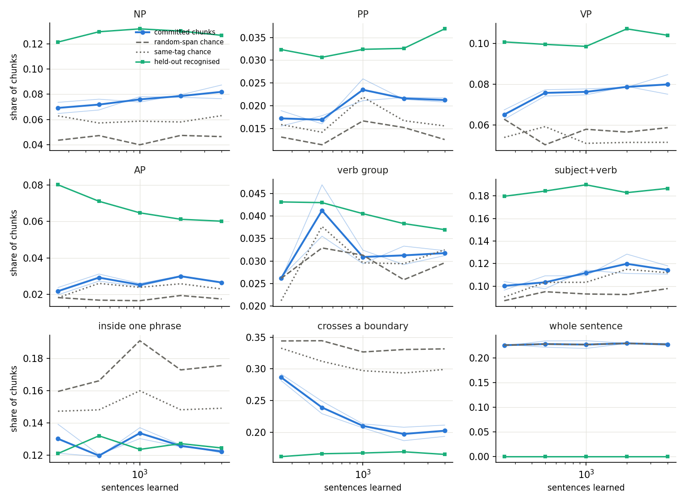
- Chunks learn to respect phrase boundaries. The share of committed chunks that cut across a phrase falls from 0.29 to 0.20 (0.86 to 0.63 times random spans) as learning goes on.
- They favour whole phrases. Noun phrases 1.6 to 1.8 times chance, prepositional phrases 1.4 to 1.6, verb phrases about 1.35, and subject + verb frames (tim was, they were) about 1.2, the story's stock opening.
- Recognition grows. Held-out sentences hold 1.75 recognised chunks at 250 sentences and 2.45 at 4,000. The most frequent chunks at 4,000 are to play, unexpected happened, very happy, the bird, an idea and but then something: TinyStories' set phrases.
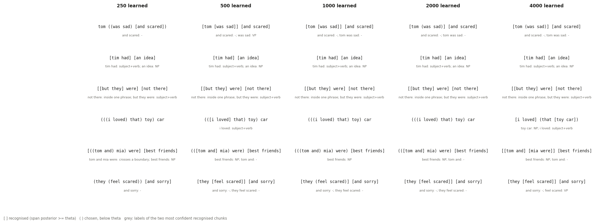
Generation and parsing against other learners (16 to 18 November)
Every generator learns the same 1,000 TinyStories sentences and must produce a sentence it never stored. The same Qwen judge scores them; it passes 89% of real held-out sentences (the dashed ceiling). Novelty is the share of new sentences that contain a word triple never stored, so splicing stored pieces earns none. Each line is one generator swept over its sampling temperature: TRELLIS's causal generator at context windows 3, 4 and 5, a transformer and an LSTM trained on the same sentences and sized by held-out loss, n-gram samplers and the retrieved one-word swap (rounds 184, 188, 190; 4 seeds).
![Two panels against novelty, the share of new sentences with an unstored trigram. Left, new sentences judged grammatical: TRELLIS window 3 from .90 at novelty .08 to .76 at .34; window 4 from .82 at .25 to .65 at .62; window 5 from .67 at .57 to .59 at .77; LSTM from .96 at .25 to .45 at .84; transformer from .87 at .50 to .37 at .89; n-grams .72 to .90 at novelty 0; swap .65 at .75. Right, grammatical share of the sentences with an unstored trigram: TRELLIS .50 to .63 at every window and temperature; LSTM .88 at temperature .3 falling to .37; transformer .77 to .30.](story_frontier.png)
- Claim: from 250 to 1,000 sentences TRELLIS matches the LSTM within seed noise and beats a matched GPT. On the fair count below (rounds 204 and 205), it scores .241, .301 and .338 against the LSTM's .244, .304 and .344 and the GPT's .213, .283 and .324; it wins 2 of 4 seeds against the LSTM at each size and 11 of 12 seed-size pairs against the GPT. At 4,000 sentences it trails both neural models (.319 against .358 and .362). The judge passes about 90% of real sentences, which caps every score.
- TRELLIS reaches the judge's ceiling, but only near copying. At window 3 and temperature 0.5, 90% of its new sentences are judged grammatical, with 8% containing an unstored trigram. The 4- and 5-gram samplers reach 85 to 90% with none.
- At matched novelty the neural models lead. At novelty .3 and .4 the LSTM is at .93 and .89 against TRELLIS's .80 and .76; from .5 to .7 the transformer leads by .03 to .05. TRELLIS leads only below .25, where no neural point was measured.
- The reason is the sentences that are new at the trigram level. TRELLIS's are 50 to 63% grammatical at every window and temperature; the LSTM's reach 88% at low temperature. Sharpening TRELLIS's draw trades novelty for copying without making its new trigrams better.
- Parsing. Against the same gold shallow phrases, TRELLIS's parses cross the fewest phrase boundaries (.25 against BPE .28) and score highest when subject + verb frames count (F1 .48 against .38 to .42), but plain phrase F1 ties word-level BPE (.37) and trails right-branching (.47), and a repeated phrase is bracketed alike less often than by BPE (.32 against .44; round 185). The content hierarchy plays no part in these parses: its gain was exactly zero, because smoothing over thousands of part names swamped it (round 187). Fixing the smoothing gives it 3 to 5 bits but makes parses worse (round 189).
- The fair count: distinct outputs, failed draws as failures (rounds 198 to 205). The count is the share of attempted draws that give a distinct sentence that is new, judged grammatical and contains an unstored trigram. Round 198 found that low-temperature neural samples repeat themselves (2 to 14% distinct at temperature .1 to .3), so the matched-novelty envelope above overstates them. With exact sentence boundaries (round 204) and a full temperature sweep (round 205), TRELLIS scores .241, .301 and .338 at 250, 500 and 1,000 sentences, against .244, .304 and .344 for the matched LSTM and .213, .283 and .324 for the matched GPT (4 seeds). It ties the LSTM, winning 2 of 4 seeds at each size with mean differences of -.003 to -.006, and beats the GPT on 11 of the 12 seed-size pairs. At 4,000 sentences (2 seeds) TRELLIS trails both: .319 against .358 and .362. Settings were chosen on seeds 13 and 17; seeds 19 and 23 give the same order at 1,000 sentences (.339 against .351 and .313).
- Boundary-strict count. The strict count drops distinct sentences whose first word never starts, or last word never ends, a real held-out sentence, for every family. TRELLIS scores .224, .275 and .307 at 250, 500 and 1,000 sentences, against .226, .288 and .325 for the LSTM and .202, .271 and .309 for the GPT. It is level with the GPT, trails the LSTM by .002 to .018, and at 4,000 sentences trails both (.264 against .325 and .328).
- Temperatures were tuned for every learner. Round 200 swept the LSTM and the GPT over temperature; both optima (.7 to .8) lie inside their grids. TRELLIS's grid stops at 3.5, and its optima are interior at 500 and 1,000 sentences but sit at the top of the grid at 250. Extending only TRELLIS's grid is fair because the neural optima are interior. The earlier claim that TRELLIS beats the neural models at 1,000 sentences (round 183) came from neural models sampled at temperature 1.0 and does not survive their tuned temperatures.
- The boundary leak (round 204). The plain generator let a sentence start or end on a word that never starts or ends a stored sentence, and the judge accepted many of these fragments. Reading the boundary exactly cuts the share of distinct outputs with an atypical boundary from .32–.42 to .07–.12 and the boundary-cut copies of stored sentences from 143 rows to 9. The fair count rises by .022 at 1,000 sentences, and the strict count by .054 to .080 at every size.
- Rounds 192 to 207 (17 and 18 November). A right-side check on new trigrams raises the grammatical share of sentences with a new trigram from .50–.63 to .66–.81 (round 192). Two-sided resampling (193), joined-history attributes (194), new trigrams at chunk junctions (194), level-mixing reads with Witten-Bell escapes (195), geometric pooling of the attribute factors (197) and a role-concept check (199) do not raise it at matched novelty: each either walks generation back into stored text or adds ungrammatical novelty. Write-up: experiments/v3/results/story_gen/r192_diagnosis.md.
- Distance null (round 201). A dependency arc longer than the window costs TRELLIS no more grammaticality than it costs the neural models (window 5: .258 against .302 for the LSTM and .340 for the GPT), and only 3% of ungrammatical window-5 sentences contain such an arc. State beyond the window does not explain TRELLIS's errors.
- Parse-guided generation (round 202). Weighting each candidate word by the learner's own chart of the prefix leaves the fair count below the window generator's best (.246 to .282 at temperature 1.3 against .316; one seed, 1,000 sentences). The chart adds .02 to .03 grammatical share among new-trigram sentences at matched temperature, which does not carry to the fair count. On all four seeds at the same temperature, distinct grammatical sentences per draw match the window generator (.429 against .441 at temperature 1.6, .420 against .417 at 2.0; round 204 audit).
- Scaling diagnosis (round 206). From 1,000 to 4,000 sentences TRELLIS's distinct share rises (.819 to .952) as the neural models' does, but its grammatical share among new-trigram sentences falls (.464 to .410) while theirs holds or rises. TRELLIS's novelty ignores absolute evidence: real text and both neural models innovate after a history seen k times at a rate that depends on k alone, and TRELLIS innovates too little after rare histories and too much after frequent ones, increasingly so as n grows. Its type licence admits unstored pairs almost only after the most frequent words (91% after words with 200 or more stored tokens at 4,000 sentences against 33% at 1,000), where it is wrong 85% of the time. Rebuilding the learners in round 207 rules out coarser concepts: leaves stay singletons (97% at 1,000 sentences, 96% at 4,000), mean leaf depth grows from 8.4 to 9.8, and at equal size a concept holds fewer word types at 4,000 sentences (11 against 17 for 16 to 63 fillers), so concepts grow more specific with data, not more mixed.
- Escape and pivot checks (round 207). Letting novelty follow the missing mass of the history passed its pre-test but raised novelty to .94 and lowered the grammatical share to .355 at 4,000 sentences (fair .324 against .318, noise). A second check on the pivot read fell at its probe (AUC .525) before any generation run. Parity with the neural models at 4,000 sentences is not reached.
- Parse consistency against gold (round 198). Gold shallow phrases bracket 11.6% of repeated 2–4 word strings and make the same decision for a string in 98.2% of cases. BPE brackets 36–49% (it over-brackets frequent strings such as "on the"), TRELLIS's posterior parse 23–27%, closest to gold (|difference| .12–.16 against BPE's .25–.37). On same-decision rate BPE is closer to gold (.92–.97) than TRELLIS (.85–.88). Making TRELLIS's bracket rate rise toward BPE (cohesion, rounds 196 and 196b) costs about .05 phrase F1.
- Parser fixes (round 203). Counting the sentence edge once drops phrase F1 from .357 to .278 at 4,000 sentences, and a pure Goodman labelled-recall readout leaves it unchanged (.366 against .369). Neither beats the default parser. Matched to BPE's bracket budget, TRELLIS crosses fewer gold phrase boundaries (.171, .169 and .210 against .299, .281 and .301 at 250, 1,000 and 4,000 sentences) and leads on F1 with subject-verb frames at every size; plain F1 leads at 250 sentences (.309 against .275) and trails BPE by .011 at 1,000 and 4,000.
Parse agreement
| Sentences learned | 250 | 500 | 1,000 | 2,000 |
|---|---|---|---|---|
| Cross-seed bracket F1 (original configuration) | 0.64 | 0.78 | 0.79 | 0.90 |
At 2,000 sentences a parse barely changes when one word is replaced: substitution F1 0.962 for a near word, 0.893 for a far one (parse consistency).
Prompts
Prefix continuation by gap filling reaches 0.84–0.86 attested trigrams. Infill stays at 0.20–0.22, because a filler satisfies each side separately (prompted generation). These use expansion and gap filling, not yet inside-outside generation.
Memory
At 2,000 sentences, used records are 0.6% misplaced in both trees, at 1.8–2.1 times the learning time without repair (scoreboard).
Conclusion and next steps
What holds, and what does not yet
Two hierarchies learned online, read by inside-outside, generate new sentences from real text with no gold and no offline phase. They do not yet compress as well as simple coders, and several settings remain hand-set.
Latest: simple references set the bar
Story generation had no outside baseline until 10 November. Simple generators on the same stream, prompts and judge beat every TRELLIS recipe (A19): a trigram sampler yields .40 new grammatical sentences per generation and a stored sentence with one word swapped in the same frame .57, against .22 for the candidate recipe below. TRELLIS's errors come from word pairs it never saw side by side: its new sentences built from stored pairs are mostly grammatical, and those with a never-seen pair mostly are not. Read by token counts, its context concepts rank such pairs no better than word frequency (.145 average precision at 1,000 sentences). Read by types, each distinct member word counting once, the same tree reaches .29 with nothing in the tree changed, still below an analogy count over stored pairs (.34); in chart generation that reading raises yield only by avoiding never-seen pairs (.29 against .22), and sentences that keep one stay 11 to 16% grammatical. Generating left to right from the context tree instead, each word drawn given the two already placed and gated by the same reading, yields .38 to .40 on four seeds, level with the trigram sampler (.39 to .41), still behind the one-word swap (.57), and almost entirely from stored pairs: generalization past stored pairs is still unsolved. On chess, a trigram over the board read in a fixed order beats TRELLIS's coder on control and shifted boards. TRELLIS coded every unit without conditioning on what came before, and its context tree did no work in the code. Coding places as gaps in reading order, and describing each occurrence by what a reader has already decoded so its context concept predicts the unit, saves 10 to 13 bits on control and 20 to 22 on shifted boards on three seeds. Leaving the anchor's absolute square out of that description brings TRELLIS within about 1 bit of the trigram on control and 3.5 to 6 bits ahead of it on shifted boards, but then no chunks form: it is the context hierarchy alone. When chunks are made to form, coding with them costs more (124.3 against 105.2 bits at 1,000 learned), because each piece's context already sees the earlier pieces of its pattern. The next step for the two-hierarchy learner is its generalization step, checked first on the judge-free test in A19 (Table 5).
Earlier: a simpler candidate recipe
Removing each part alone (A18) found a recipe without word_cc, type names or neighbour chunks. Story yield rises from .186 to .224 on four seeds, characters at 2,000 fall from 27.8 / 27.5 to 26.7 / 26.5 bits (trigram 26.4 / 26.0), and expansion on med and large goes from copying to .80–.89 grammatical and new. The word's identity in its context description caused the copying. It has not been adopted, and the rest of this site still describes the older recipe. The largest open conflict is exact_alone: off, characters tie trigram and chess improves, but story yield and chunk grouping fall.
Why this matters
Most systems that generate well need many passes over much data, and what they know is not inspectable. TRELLIS learns from each experience once, stores what it learns in concepts one can read, and uses the same memory to parse, generate and compress. It applies unchanged to sentences, characters and chess. If it can match simple coders and reach good grammar from a few thousand experiences, that gives a transparent, always-learning account of how structure and generalization can arise together. It is not there yet, and the gaps below are real.
What has been shown
- Trees alone generate grammatically on toy grammars by expansion. Under earlier configurations most of that output was new (0.75–0.88 at 320); under the current recipe almost none is.
- Memory stays current online: used records under 1% misplaced at about twice the learning time.
- On TinyStories, reading each word from the whole sentence raised grammatical new output by 17% over the best earlier form, held the topic and removed the content cut.
- On chess, TRELLIS reproduces the shape of Chase and Simon's findings.
What we have not figured out
| Open problem | What is known | Next |
|---|---|---|
| Topic weight | β 2 is hand-set. Whole-sentence likelihood always picks 0, since a sentence's probability is almost all grammar | A criterion that weighs the topic itself; let memory choose the concept that predicts from x |
| Toy grammars | The copying is explained and fixed in the candidate recipe (A18). Inside-outside remains 46–49% grammatical on med and large, and expansion is weak on term_low | Test where inside-outside overgenerates |
| Words beyond the window | Inside-outside predicts worse given all earlier words than given the nearest two (round 94). The drawn product has the worst likelihood and the best yield | Test why far words hurt; find a criterion likelihood and yield agree on |
| Grammar | About 40% of output is still judged ungrammatical. Head-complement fit and unfinished endings were the main errors before the new fill; not yet re-measured | Re-measure the errors; re-test λ on the whole tree (round 93 was cancelled) |
| Do two hierarchies earn their cost? | On the candidate recipe, one tree is within seed spread on yield, and two trees group chunks best (A18) | More seeds; a chess path for one tree |
| Parsing and generation read different scores | Parsing uses a separate chunk factor; generation and coding read the grammar's probabilities | Test parsing and learning by the same probabilities |
| The content tree's gain | On toy grammars, held-out composites stop 2–4 levels down and gain no bits there. Not re-measured since the representation fixes | Re-measure; name words by what they build as well as where they stand |
| Infill and prompts | Infill fails to fit both sides under gap filling | Run prompts through inside-outside generation, which already handles gaps |
| Characters | Beats BPE, loses to a trigram coder | Find what the trigram coder captures that the grammar misses |
| Chess | Wins only on shifted boards, narrowly, for a reason BPE on shapes shares. Recall saturates too early | Rethink the representation of positions; chunk probabilities |
| Answering (bAbI) | Right type, rarely the exact answer | Answer by analogy: align the question's chunks with the story sentence that shares its role |
| Scale and comparison | Story results stop at 2,000 sentences and a 250-word vocabulary, with no external generation baseline | Larger streams; a fair online baseline |
Appendices
Older methods, ablations and records
What was tried on the way here, and the detail behind the main pages. Pages describing older methods say which configuration they show.
- A1Ablation: one hierarchyContent and context held in a single tree.
- A2Story roundsEvery story-generation round: settings swept, critics, search, the topic weight.
- A3Expansion generationThe earlier generator, with its explorer.
- A4Type namesExplorer for naming a part by where its type has stood.
- A5Concept-choice rulesWhich concept a part draws from under expansion.
- A6Prompted generationGap filling in detail.
- A7Parse consistencyAgreement across seeds, sizes and substitutions.
- A8Chunk representationsProbes and maps of what chunks hold.
- A9Sustaining memoryRelabel, verify and repair on use.
- A10Memory scoreboardTemporal-currency numbers by run.
- A11Representation fixesWhat the memory dump showed was wrong, and rounds 75–79.
- A12Earlier representationThe description of 23 October, with figures.
- A13AND/OR failure checksThe checks run after every change.
- A14Known failuresMeasurements of what stayed open as of late October.
- A15Kept and set asideEach change tried from 23 to 26 October, and its fate.
- A16Ablation: window sizeWindows of 1 to 4 words on stories and characters.
- A17Ablation: toy-grammar copyingWhich mechanisms made generation copy, and where inside-outside loses grammar.
- A18Why the architecture is this wayEach decision removed alone: its reason, what removal did, and whether the reason held.
- A19Against simple referencesTrigram and one-swap generators on the same stream, prompts and judge; where the errors come from.
Appendix A1
Ablation: one hierarchy
What happens if content and context are held in one Cobweb tree, used in the same ways?
Update. This page uses the older recipe. On the candidate recipe in A18, shared gives .206 and joint .215 against .224, within seed spread, so the rejection of shared below is weaker than it reads.
Verdict so far: keep two trees. One shared tree is rejected. One joint tree generates and compresses at least as well, but organises chunks worse, and chess has not been tested. So this is not settled for every domain.
The two designs
- Shared. One tree. Content and context are still filed as separate instances, so each element appears in it twice.
- Joint. One tree. Each element is one instance holding both its content and its context attributes. Attributes an instance lacks take the value
blank.
Everything else is the current recipe, used in the same ways for parsing, naming and generation.
Results
| Test | Two trees | Shared | Joint |
|---|---|---|---|
| Stories: grammatical new per generation, s13 / s17 / s19 / s23 | .198 / .185 / .150 / .209 | .224 / .179 / .155 / .199 | .200 / .205 / .208 / .195 |
| Stories: mean of those four | .186 | .189 | .202 |
| Stories: judged grammatical, range | 59–60% | 56–61% | 65–70% |
| Stories: new, range | 53–57% | 53–59% | 48–51% |
| Characters: bits per held-out character, 500, s13 / s17 | 33.59 / 33.90 | 32.97 / 33.96 | 32.46 / 33.21 |
| Characters: 1,000 | 30.50 / 30.15 | 30.08 / 30.64 | 29.43 / 29.59 |
| Characters: 2,000 | 27.79 / 27.46 | 27.86 / 27.69 | 26.68 / 26.92 |
small: grammatical / new at 320, s13; s17 | 1.00 / .085; 1.00 / .085 | 1.00 / .145; 1.00 / .115 | 1.00 / .10; 1.00 / .08 |
med: grammatical / new at 320, s13; s17 | .46 / .32; .48 / .29 | .39 / .27; .325 / .23 | .535 / .37; .49 / .32 |
large: grammatical / new at 320, s13; s17 | .52 / .43; .555 / .40 | .38 / .27; .36 / .255 | .465 / .32; .50 / .38 |
| Mean posterior of the chosen analysis, s13 / s17 | .80 / .79 | .67 / .65 | .46 / .42 |
| Chunk tag-pattern purity at 12 bits | .93 | .81 | .53 |
| Stored records after 1,000 sentences, s13 / s17 | 28,870 / 26,852 | 37,972 / 35,224 | 38,330 / 35,275 |
Trigram beats all three on characters at every size (26.43 / 26.02 at 2,000); joint comes within 0.25 bits on seed 13 and 0.90 on seed 17. Toy grammars use inside-outside generation here.
Why one tree organises chunks worse
A joint instance asks one tree to sort by what a chunk is and by where it stands at once, and in practice it sorts mostly by where:
| Pairs falling in one concept within 6 bits | Two trees: content | Two trees: context | Joint |
|---|---|---|---|
| Same chunk, different window | .91 / .93 | .17 | .31 / .23 |
| Same window, different chunk | .16 / .14 | .34 / .32 | .57 / .54 |
The tree also spends its top split on a bookkeeping difference: blank content attributes separate words from composites perfectly (purity 1.0). Word grouping is unaffected (tag purity about .87 at 12 bits for both). Chunk grouping is what suffers, and it is what the parser reads: the same chunk is split across concepts, and the mean posterior of the chosen analysis falls from about .80 to .44.
Shared has no such single cause we can point to. It stores a third more records and loses to two trees on most measures, with no compensating gain at 2,000 on characters or on the larger toy grammars.
What this does not settle
- Characters. Joint wins by 0.5 to 1.1 bits at every size despite the worse chunks. We have not tested why, so we cannot yet call this an advantage of one tree rather than a side effect of how characters are coded.
- Stories. Joint's lead in yield is smaller than the spread between seeds for two trees. It trades novelty for grammaticality; it is not simply better.
- Chess. Not run. The chess learner has no joint path yet.
- Recipe. All arms here use the older recipe. The rerun on the candidate is in A18.
Appendix A16
Ablation: window size
How many neighbouring words should a context hold?
Larger windows are worse in both domains, and window 1 is at least as good as window 2. The window here sets both the stored context and the window used at generation, so these results do not separate the two roles. Toy grammars and chess were not run.
Stories
| Window (words each side) | Grammatical new per generation, s13 / s17 | Judged grammatical | New |
|---|---|---|---|
| 1 | .207 / .207 | 56 / 53% | 60 / 66% |
| 2 (current) | .198 / .185 | 60 / 59% | 53 / 56% |
| 3 | .152 / .152 | 57 / 64% | 50 / 47% |
| 4 | .117 / .119 | 58 / 61% | 43 / 45% |
A wider window lowers novelty and does not reliably raise grammaticality. Narrowing from 2 to 1 gains novelty and loses a few points of grammaticality; the net gain in yield is small on two seeds.
Characters
| Window | 500, s13 / s17 | 1,000 | 2,000 |
|---|---|---|---|
| 1 | 32.86 / 34.01 | 29.81 / 30.34 | 27.23 / 27.49 |
| 2 (current) | 33.59 / 33.90 | 30.50 / 30.15 | 27.79 / 27.46 |
| 3 | 34.53 / 35.73 | 31.51 / 31.55 | 28.88 / 28.06 |
| 4 | 34.97 / 35.80 | 31.57 / 31.98 | 28.81 / 29.25 |
Bits per held-out character; lower is better. Trigram at 2,000: 26.43 / 26.02.
The window stays at 2 for now. Window 1 needs fewer attributes and loses nothing here, so it is the next one to test, on the toy grammars and alongside the removals in A17.
Appendix A18
Why the architecture is this way
Each design decision, its reason, what removing it did on every domain, and whether the reason held.
Verdict so far. Removing parts one at a time produced a simpler candidate recipe that generates and compresses better than the recipe the main pages describe, and learns faster. Four decisions held up with a measured reason, four are weakly supported, and two remain real conflicts between generation and compression. The candidate has not been adopted, and the main pages still describe the older recipe.
The candidate recipe. Two trees; posterior storage; names in information bands; sampled restructuring; repair; window 2; exact_alone on the content tree; the story facet on stories. It drops word_cc, type names and neighbour chunks. With type names off, name_level, name_mix_k, type_k, type_key and word_content no longer do anything: the run without them reproduces the story yields, character bits and toy results of the run with them, to the last digit.
How to read this page
- Each row changes one thing from the candidate base. Everything else stays fixed.
- Yield is judged-grammatical new sentences per generation, 1,000 sentences learned, seeds 13 / 17 / 19 / 23.
- Cross share measures whether a sentence shares the previous sentence's topic: mean PMI of content words across the pair, as a share of real text's over random words of the same tag. It varies widely between seeds (.03 to .40 on the base).
- Characters are bits per held-out character at 2,000 learned, seeds 13 / 17. Trigram gets 26.43 / 26.02. Toy grammars use 320 experiences and are scored by the grammar, which never teaches.
- Differences in yield under about .03 are within the spread between seeds, so they are not treated as effects.
Stories and characters
| Arm | Yield, mean | Yield by seed | Grammatical | New | Cross share | Characters | Learning, min |
|---|---|---|---|---|---|---|---|
| Older recipe (A17) | .186 | .198 / .185 / .150 / .209 | 59–60% | 53–57% | – | 27.79 / 27.46 | – |
| Candidate base | .224 | .258 / .216 / .200 / .223 | 63% | 58% | .241 | 26.69 / 26.52 | 38 |
word_cc back on | .199 | .199 / .208 / .175 / .212 | 68% | 47% | .343 | 26.50 / 26.24 | 42 |
| Type names back on | .190 | .194 / .183 / .172 / .212 | 55% | 62% | .234 | 26.39 / 26.58 | 108 |
| Neighbour chunks back on, with type names | .190 | .203 / .170 / .176 / .211 | 55% | 62% | .206 | 26.74 / 26.74 | 92 |
exact_alone off | .194 | .204 / .193 / .186 / .192 | 59% | 59% | .197 | 26.09 / 26.05 | 93 |
exact_alone on both trees | .209 | .229 / .228 / .179 / .200 | 59% | 60% | .252 | 26.49 / 26.35 | 31 |
exact_alone on the context tree only | .174 | .180 / .167 / .174 / .175 | 58% | 57% | .247 | 27.04 / 26.33 | 153 |
| One shared tree | .206 | .236 / .222 / .171 / .195 | 56% | 63% | .315 | 26.57 / 26.32 | 36 |
| One joint tree | .215 | .215 / .235 / .195 / .215 | 63% | 57% | .350 | 26.75 / 27.07 | 27 |
| Content not donated to context | .206 | .217 / .203 / .188 / .214 | 66% | 52% | .360 | 26.75 / 26.55 | 28 |
| Parts' content not donated | .212 | .226 / .205 / .171 / .245 | 59% | 60% | .206 | 26.80 / 26.68 | 31 |
| Names by depth, no bands | .186 | .188 / .196 / .171 / .189 | 62% | 55% | .241 | 31.27 / 30.51 | 13 |
| Store the best analysis only | .202 | .241 / .190 / .162 / .214 | 59% | 59% | .257 | 29.20 / 30.22 | 5 |
| Restructure on every change | .210 | .241 / .201 / .168 / .231 | 59% | 60% | .296 | 26.58 / 26.40 | 39 |
| No repair | .206 | .220 / .224 / .169 / .210 | 57% | 61% | .277 | 26.78 / 26.31 | 25 |
| Window 1 | .266 | .252 / .264 / .270 / .276 | 59% | 67% | .313 | 30.25 / 30.83 | 39 |
| No story facet | .287 | .300 / .284 / .275 / .291 | 75% | 53% | .102 | – / – | – |
The candidate with more data
| Learned, s13 / s17 | Yield | Grammatical | New | Characters, bits | Trigram, bits |
|---|---|---|---|---|---|
| 500 | .258 / .247 | .587 / .644 | .649 / .584 | 32.32 / 33.00 | 31.94 / 32.67 |
| 1,000 | .258 / .216 | .628 / .643 | .604 / .560 | 29.14 / 29.48 | 29.13 / 28.80 |
| 2,000 | .211 / .174 | .573 / .604 | .614 / .540 | 26.69 / 26.52 | 26.43 / 26.03 |
| 4,000 | – / – | – / – | – / – | 24.89 / 24.82 | 25.48 / 24.87 |
- Compression improves with data faster than trigram does. At 4,000 the candidate beats trigram on both seeds (24.89 against 25.48, 24.82 against 24.87); at 2,000 it was 0.3–0.5 bits behind.
- Generation does not improve with data. Yield is .26 / .25 at 500 and .21 / .17 at 2,000. Grammaticality stays near 60% throughout; the share of new sentences moves little. So the remaining grammar errors are not a shortage of data: they come from how generation reads memory. We have not yet measured why yield falls as memory grows.
Toy grammars
| Arm | Expansion, new: med | large | term_low | Inside-outside, grammatical; new: med | large |
|---|---|---|---|---|---|
| Older recipe (A17) | .00 / .00 | .02 / .01 | – | .45 / .51; .31 / .28 | .50 / .53; .34 / .36 |
| Candidate base | .796 / .797 | .893 / .841 | .463 / .469 | .460 / .470; .397 / .407 | .487 / .460; .437 / .413 |
word_cc back on | .434 / .328 | .335 / .206 | .076 / .115 | .507 / .460; .403 / .343 | .480 / .510; .330 / .367 |
| Type names back on | .745 / .754 | .836 / .837 | .510 / .394 | .400 / .430; .340 / .373 | .483 / .480; .447 / .437 |
| Neighbour chunks back on, with type names | .731 / .900 | .791 / .873 | .556 / .476 | .440 / .467; .377 / .390 | .483 / .440; .450 / .383 |
exact_alone off | .786 / .725 | .842 / .900 | .429 / .456 | .527 / .507; .470 / .447 | .480 / .533; .430 / .470 |
exact_alone on both trees | .781 / .802 | .799 / .819 | .464 / .378 | .513 / .517; .453 / .450 | .460 / .457; .413 / .410 |
exact_alone on the context tree only | .714 / .709 | .825 / .755 | .482 / .423 | – | – |
| One shared tree | .744 / .813 | .894 / .873 | .495 / .404 | .477 / .427; .413 / .377 | .450 / .450; .407 / .407 |
| One joint tree | .803 / .817 | .807 / .854 | .465 / .420 | .387 / .450; .320 / .400 | .353 / .427; .323 / .387 |
| Content not donated to context | .749 / .633 | .839 / .820 | .437 / .385 | .407 / .397; .357 / .357 | .450 / .460; .393 / .403 |
| Parts' content not donated | .802 / .761 | .874 / .869 | .471 / .370 | .467 / .483; .407 / .407 | .463 / .453; .400 / .400 |
| Names by depth, no bands | .553 / .339 | .333 / .271 | .446 / .407 | .563 / .513; .483 / .440 | .450 / .447; .430 / .403 |
| Store the best analysis only | .789 / .781 | .875 / .857 | .510 / .468 | .627 / .537; .553 / .497 | .630 / .597; .580 / .563 |
| Restructure on every change | .794 / .780 | .880 / .863 | .505 / .459 | .487 / .430; .423 / .367 | .510 / .497; .480 / .443 |
| No repair | .810 / .824 | .857 / .845 | .535 / .476 | .500 / .470; .453 / .430 | .457 / .450; .423 / .400 |
| Window 1 | .681 / .596 | .810 / .783 | .286 / .182 | .447 / .473; .407 / .440 | .393 / .413; .383 / .413 |
Expansion "new" is grammatical and new as a share of everything generated, s13 / s17. A dash means the run did not finish or was not run.
Memory and parsing
| 1,000 sentences, s13 / s17 | Records | Mean posterior of the chosen analysis | Word tag purity, 12 bits | Chunk tag-pattern purity, 12 bits |
|---|---|---|---|---|
| Candidate base | 35,577 / 38,801 | .533 / .510 | .776 / .774 | .758 / .757 |
exact_alone off | 35,764 / 38,869 | .435 / .468 | .770 / .779 | .129 / .122 |
| One shared tree, on the base | 35,285 / 38,440 | .642 / .634 | .720 / .737 | .626 / .642 |
| One joint tree, on the base | 35,751 / 38,912 | .342 / .350 | .763 / .776 | .516 / .504 |
The older recipe's arm with word_cc on and type names on had word purity about .87 and chunk purity about .91.
Parsing against gold trees
| Omission at 320 experiences, s13 / s17 | small | med | large | term_low | term_med | Mean |
|---|---|---|---|---|---|---|
| Older recipe | .000 / .019 | .726 / .300 | .361 / .359 | .716 / .414 | .434 / .554 | .388 |
word_cc on, type names on, no neighbour chunks | .000 / .044 | .293 / .263 | .212 / .313 | .454 / .383 | .345 / .326 | .263 |
word_cc off, type names on | .275 / .250 | .219 / .235 | .333 / .208 | .430 / .358 | .443 / .366 | .312 |
word_cc on, type names off | .162 / .056 | .278 / .320 | .302 / .313 | .484 / .315 | .288 / .329 | .285 |
| Candidate base | .250 / .250 | .226 / .324 | .165 / .178 | .397 / .358 | .383 / .309 | .284 |
exact_alone off | .250 / .250 | .204 / .174 | .306 / .282 | .299 / .318 | .411 / .460 | .295 |
exact_alone on the context tree only | .250 / .250 | .322 / .296 | .259 / .320 | .281 / .280 | .424 / .379 | .306 |
| A fixed right-branching parser | .250 / .250 | .352 / .304 | .290 / .332 | .412 / .358 | .396 / .359 | .330 |
- The older recipe parses worse than a fixed right-branching parser, and it can collapse: on
med, seed 13, it reads almost every sentence as one left-branching chain. The example on the Parsing explorer is one of these. Neighbour chunks cause it: turning them off alone bringsmedto .31 / .25 andlargeto .22 / .30 (60 test sentences), andexact_alonemakes little further difference. Keeping them withexact_aloneon content only gives .40 / .29 and .31 / .40. - The candidate beats the fixed parser on average (.28 against .33), by a modest margin: clearly on
large, about level on the rest. No recipe here parses well. smalllooks like a loss for the candidate, but the evidence for that is thin. Every sentence has the shape Det N V Det N, and the only bracket missed is whether the verb joins the subject or the object. Word sequences give little to separate these in this grammar, and earlier recipes flip between .00 and .25 on the same data. So we read this as an ambiguity that recipes resolve arbitrarily rather than a capabilityword_ccprovides. We have not tested that reading.
Parts removed
word_cc: the word's identity in its context description
Reason. A chunk's content concept is donated into its context, so a word's own content, the word itself, was donated the same way.
What removal did. Expansion's grammatical new output on the toy grammars rose from about .02 to about .8 on the older recipe, and yield on stories rose with novelty. On this base grammaticality falls by about 5 points on stories, cross share falls from .34 to .24, and characters lose 0.2–0.3 bits. Word purity falls from .87 to .77.
Why. A generation slot draws from the stored members of the concept just above a word's leaf. With the word's identity in its description, that concept mostly holds only that word:
| Concept above a word's leaf, 320 experiences, s13 / s17 | med: distinct words | Share of occurrences alone with their word | large: distinct words | Share alone |
|---|---|---|---|---|
word_cc off, exact_alone on content | 3.18 / 3.03 | 0.102 / 0.172 | 3.43 / 3.29 | 0.079 / 0.13 |
word_cc off, exact_alone off | 3.04 / 2.91 | 0.128 / 0.191 | 3.15 / 3.23 | 0.166 / 0.145 |
word_cc on, exact_alone on content | 1.33 / 1.33 | 0.76 / 0.772 | 1.35 / 1.36 | 0.757 / 0.739 |
word_cc on, exact_alone off | 1.32 / 1.34 | 0.776 / 0.76 | 1.34 / 1.33 | 0.763 / 0.77 |
Verdict. Removed. The reason was an analogy, and it caused the copying. The losses are real: word grouping is coarser at 12 bits, and sentences stay on topic less. Parsing against gold trees is about the same overall (see the table above).
Type names
Reason. Naming a part by where all instances of its type have stood lets substitutable types share names wherever they occur.
What removal did. Yield rose from .190 to .224, on all four seeds, learning became about three times faster, and five parameters stopped mattering. Characters lose 0.3 bits on seed 13 at 2,000 and are unchanged on seed 17.
Verdict. Removed. The stated reason does hold on chunk grouping: chunk purity falls from .91 to about .76 without type names. Better grouping did not turn into better generation or compression at this scale, and it costs most of the learning time. That may change on larger data, which we have not tested.
Neighbour chunks
Reason. A context also names the units beside the element at its own level, so generation can read chunks as well as words.
What removal did. On the older recipe, removal cost story yield (.186 to .163). Once word_cc is off, the yield difference disappears (.190 with or without, both with type names on) and characters are 0.16–0.35 bits worse with them.
Verdict. Removed. Their earlier benefit on stories depended on word_cc.
Parts with a measured reason
Names in information bands
Reason. Naming a path by the first concept reaching each information level gives names of matched resolution, however deep the tree has grown.
Verdict. Holds, strongly. Naming by depth costs about 4 to 4.6 bits on characters, drops expansion on large by more than half and lowers yield to .186. Chess is indifferent. Depth names do raise inside-outside on med (51–56% grammatical against 46–47%) and parse with a higher posterior, so a confident parse alone is a poor guide here.
Posterior storage
Reason. Storing each analysis in proportion to its probability keeps uncertainty that the best analysis throws away.
Verdict. Holds for compression: storing only the best analysis costs 2.5–3.7 bits on characters. It has a cost. Best-only learns about eight times faster, stores about a quarter of the records, and gets inside-outside on toy grammars to 54–63% grammatical against 46–49%. Chess uses best-only: posterior storage there costs 25–38% more memory, up to seven times the learning time, and 1.4–3 bits on shifted boards.
Sentence-order following and both fill sources
Reason. Reading a word from both the chart and the Cobweb window, in order, should combine structure and local fit.
Verdict. Holds, on two seeds. See the generation table below: turning off following loses about .07 in yield, and either fill source alone loses .02 to .10. Content identity also matters: cutting content at 0 bits halves the yield.
Story facet and the topic weight
Reason. A sentence should belong with the one before it.
Verdict. Holds, at a price. Removal gives the highest yield of any arm (.287) because grammaticality rises to about 75%, but cross share falls from about .24 to about .10. Yield alone would have called this part harmful. Whether the topic is worth .06 in yield is a judgement, and we keep it because the goal includes generating sentences that belong together.
Parts with weak support
- Both directions of donation. Removing either lowers yield by .012 to .018, within seed spread. Removing content-to-context lowers expansion on
term_med; removing parts' content costs about 0.1 bits on characters. - Repair. Without it, yield is .206 against .224, characters are about the same, toy output is if anything slightly better, and learning is about a third faster. On the older recipe it raised chunk purity from .81 to .91. It is a candidate for deletion if that purity turns out not to matter.
- Sampled restructuring. Restructuring on every change gives .210, slightly better characters (26.58 / 26.40) and almost no extra time on characters at 2,000. Sampling saved up to two-thirds more on the slower recipe. On this base the choice is close.
- Two trees. On the base, shared gives .206 and joint .215, within seed spread of .224, and shared is 0.1–0.2 bits better on characters. Joint is worse on characters and on inside-outside. Two trees still group chunks best (.76, against .63 shared and .51 joint), although shared parses with a higher posterior. The earlier verdict that shared is rejected (A1) came from the older recipe and no longer stands as firmly. Chess has not been tested with one tree.
Conflicts we have not resolved
exact_alone
Reason. Cobweb scored a new leaf as if a lone instance predicted all its values with certainty. For a bag-valued description that files nearly everything as a new leaf, giving content concepts with thousands of leaf children.
What removal does. It improves characters to 26.09 / 26.05 at 2,000. Against trigram that is 0.34 bits better on seed 13 and 0.03 worse on seed 17, with the same pattern at 1,000 and a small win on both seeds at 500. It also improves chess on shifted boards from 153.6 to 147.2, with control unchanged. It lowers yield to .194 on all four seeds, and collapses chunk purity from .76 to .12. Learning takes about 2.4 times as long on characters and three times on chess.
On the context tree only. Turning it on for context and off for content was meant to keep grouping while letting content stay flat. It does neither: yield falls to .174 on all four seeds, below every other arm; characters are mixed (27.04 / 26.33 at 2,000, against 26.69 / 26.52); learning takes about four times as long; expansion on toy grammars is weaker on med and large and level on term_low; and parsing omission rises to .31. So the setting must be on for the content tree, and the context tree does not need it.
Verdict. The reason holds: the flat tree is real and it damages grouping. The surprise is that a flat content tree compresses better, plausibly because exact chunks behave more like a large memory of seen sequences, though we have not tested that. The same setting cannot currently serve generation and compression, and this is the largest obstacle to a single recipe.
Window size
Reason. Two tokens each side give the context tree enough to separate uses of a word.
What removal does. Window 1 gives the best yield that keeps the topic (.266, cross share about .31). Its characters are about as bad as names by depth, 3.6–4.3 bits worse. Expansion on term_low falls by half.
Verdict. Unresolved. Generation prefers a narrower context than compression does. A window of two tokens with generation reading a coarser cut does not settle it: cutting words at 8 bits gives .247 and loses the topic.
Generation settings, one memory
| Changed alone, s13 / s17 | Yield | Grammatical | New | Cross share |
|---|---|---|---|---|
| Base | .258 / .216 | 64% | 58% | .267 |
| Fill from the chart only | .163 / .148 | 38% | 77% | .138 |
| Fill from Cobweb only | .206 / .198 | 50% | 69% | .208 |
| λ 1 | .224 / .217 | 59% | 61% | .221 |
| λ 16 | .218 / .223 | 66% | 54% | .161 |
| Content cut 0 bits | .119 / .091 | 58% | 49% | .240 |
| Content cut 8 bits | .188 / .250 | 60% | 60% | .160 |
| Words cut 8 bits | .244 / .249 | 57% | 67% | -0.032 |
| No topic | .304 / .280 | 77% | 51% | .012 |
| No sentence-order following | .178 / .158 | 53% | 61% | .204 |
| Expansion instead of inside-outside (type names on, 4 seeds) | .057 / .088 / .071 / .066 | 83% | 14% | .418 |
λ between 1 and 16 changes yield by at most .04, and only on seed 13. Inside-outside clearly beats expansion on stories, while on toy grammars expansion is far more grammatical. Inside-outside at 46–49% on med and large remains unexplained.
Chess
| Seed 13, 4,000 learned, offsets only, best level | Control, bits | Shift, bits | Memory, bits | Learning, min |
|---|---|---|---|---|
Control: chess recipe, exact_alone on | 130.6 | 153.6 | 326k | 15 |
exact_alone off | 130.6 | 147.2 | 319k | 49 |
exact_alone on content only | 132.1 | 153.7 | 327k | 45 |
| Type names off | 130.3 | 153.7 | 326k | 15 |
| Names by depth | 129.2 | 151.8 | 336k | 15 |
| Restructure on every change | 131.4 | 152.9 | 338k | 17 |
| No refresh | 130.8 | 152.2 | 326k | 14 |
| Store every sampled analysis (posterior) | 130.8 | 155.0 | 451k | 25 |
Type names off, exact_alone off, no refresh | 129.0 | 148.0 | 333k | 36 |
| The same, posterior storage | 129.0 | 151.1 | 415k | 258 |
Only exact_alone moves shifted boards by more than about 2 bits; only the storage rule moves memory much. Chess gives little evidence for or against the other decisions. This is one seed, so differences of a bit or two are not meaningful.
A correction. The 147.2 reported on the chess page came from a run with exact_alone off, while the recipe table says it is on. With it on, shifted boards cost 153.6. Today's code reproduces both numbers.
What this does not settle
- Most generation arms and all chess arms have one or two seeds, and only the base was run with more data.
- Purity and posterior say how memory is organised. On stories we have no gold parse, so we cannot say what their fall costs in parsing quality there. Toy parsing was measured for six recipes, not for every arm above.
- The candidate has not been run on bAbI, nor with the chart settings re-tuned for it.
Appendix A19
Against simple references
What do a trigram sampler and a one-word swap yield on the same stream, prompts and judge, and where do TRELLIS's errors come from?
Simple reference generators, run on the same stream, prompts and judge, produce more new grammatical sentences than TRELLIS. At 1,000 sentences TRELLIS's candidate recipe yields .224 per generation; the trigram sampler yields .400, the one-word swap on a retrieved sentence .571, and the best reference (One-word swap, retrieved sentence) .571, 2.5 times TRELLIS. TRELLIS's errors come from word pairs it never saw next to each other. Its memory ranks such pairs no better than the product of the two words' frequencies (Table 5), and fixed-order n-gram coders code chess positions in fewer bits than it does (Table 6). This page sets the bar the two-hierarchy learner has to clear: the references for generation, the split of its errors, the test of its generalization step, and the reference coders.
How to read this page
Yield is the number of judged-grammatical new sentences per generation. Cross share is the topic agreement with the previous sentence, defined as in A18. A word sequence is stored when it occurs in the stream the learner saw. The references never see the learner; they read only the stream.
Table 1. Reference generators at 1,000 sentences, 4 seeds
| 1,000 sentences | Yield, mean | Yield by seed (13 / 17 / 19 / 23) | Grammatical | New | Cross share | Every trigram stored |
|---|---|---|---|---|---|---|
| TRELLIS candidate recipe | .224 | .258 / .216 / .200 / .223 | 63% | 58% | .241 | 55% |
| Bigram sampler | .326 | .336 / .321 / .336 / .310 | 46% | 86% | -0.053 | 24% |
| Trigram sampler | .400 | .412 / .404 / .388 / .395 | 80% | 56% | -0.038 | 100% |
| 4-gram sampler | .194 | .201 / .181 / .182 / .212 | 88% | 23% | -0.051 | 100% |
| Trigram, topic weight 1 | .387 | .407 / .385 / .375 / .379 | 83% | 53% | .200 | 100% |
| Trigram, topic weight 2 | .370 | .394 / .354 / .364 / .369 | 83% | 51% | .363 | 100% |
| One-word swap, random sentence | .563 | .567 / .565 / .581 / .539 | 69% | 87% | .057 | 37% |
| One-word swap, retrieved sentence | .571 | .569 / .597 / .573 / .543 | 69% | 88% | .412 | 34% |
A k-gram sampler draws each word from the counts of what followed the previous k−1 words in the stream. A topic weight raises the counts of words that occur in sentences near the prompt. The one-word swap takes a stored sentence and replaces one word with another word that was stored between the same two neighbours. In the random swap the sentence is drawn at random; in the retrieved swap it is the stored sentence that followed the stored sentence most like the prompt.
Table 2. With more data (seeds 13 / 17)
| Sentences | TRELLIS yield | Trigram yield | One-word swap (retrieved) yield | TRELLIS word-concept tag purity at 12 bits |
|---|---|---|---|---|
| 500 | .258 / .247 | .416 / .398 | .586 / .617 | .807 / .808 |
| 1,000 | .258 / .216 | .412 / .404 | .569 / .597 | .776 / .774 |
| 2,000 | .211 / .174 | .419 / .391 | .542 / .542 | .739 / .751 |
| 4,000 | .210 / .196 | .411 / .390 | .513 / .506 | .716 / .725 |
TRELLIS falls as data grows while the references stay level. The word concept that generation reads becomes less pure as memory grows (word-concept tag purity at 12 bits: .808 at 500 sentences, .775 at 1,000, .745 at 2,000, .720 at 4,000).
Table 3. Where TRELLIS's errors come from (1,000 sentences, seeds 13 / 17)
| New sentences with | Share of generations (13 / 17) | Judged grammatical (13 / 17) |
|---|---|---|
| Every bigram stored | .304 / .247 | .698 / .715 |
| An unstored bigram | .301 / .312 | .152 / .127 |
| Every trigram stored | .158 / .110 | .873 / .865 |
| An unstored trigram | .447 / .449 | .269 / .269 |
| Held-out real sentences | Seed 13 | Seed 17 |
|---|---|---|
| Every bigram stored | .523 | .510 |
| Every trigram stored | .333 | .357 |
| Stored whole | .230 | .227 |
New sentences built only from stored pairs are mostly grammatical, and those with an unstored pair mostly are not. Real held-out sentences contain an unstored bigram in 48% of cases and an unstored trigram in 66%; 23% are stored whole. A generator restricted to stored pairs cannot reach them.
Table 4. One substitution at a time (round 110)
| Generator (1,000 sentences) | Yield, mean | Grammatical | New | Cross share | Every bigram stored | New with an unstored bigram: share of generations; judged grammatical |
|---|---|---|---|---|---|---|
| Reference: one swap, retrieved sentence | .571 | 69% | 88% | .412 | 100% | .000; .000 |
| Reference: two swaps | .396 | 65% | 72% | .416 | 100% | .000; .000 |
| Reference: wide frame (two neighbours each side) | .538 | 87% | 65% | .372 | 100% | .000; .000 |
| Reference: bigram licence | .516 | 61% | 90% | .417 | 100% | .000; .000 |
| Reference: span of 1–3 words | .477 | 69% | 77% | .317 | 100% | .000; .000 |
| Reference: span of 1–3 words, two swaps | .389 | 66% | 71% | .240 | 100% | .000; .000 |
| TRELLIS: word for word, concept 1 level up | .398 | 54% | 85% | .421 | 54% | .462; .242 |
| TRELLIS: word for word, concept 2 levels up | .325 | 39% | 93% | .417 | 33% | .675; .219 |
| TRELLIS: word for word, concept 3 levels up | .266 | 30% | 97% | .395 | 19% | .815; .193 |
| TRELLIS: word or chunk, concept 1 level up | .347 | 56% | 77% | .381 | 60% | .405; .229 |
| TRELLIS: word or chunk, concept 2 levels up | .324 | 41% | 91% | .354 | 38% | .623; .204 |
| TRELLIS: word for word, Cobweb's window prediction, 1 level up | .369 | 46% | 91% | .408 | 45% | .554; .238 |
| TRELLIS: word or chunk, Cobweb's window prediction, 1 level up | .351 | 54% | 80% | .350 | 56% | .444; .229 |
- The stored frame decides grammaticality. A replacement stored between the same two neighbours on each side gives the most grammatical output and the fewest new sentences; one neighbour on each side gives more new sentences at a lower rate; two swaps in a row, or a replacement licensed only by its two stored pairs, cost grammaticality.
- TRELLIS's context concepts are poor substitution classes. Replacing a word with another member of its context concept is less often grammatical than every reference swap, and each level up the tree makes it worse. Cobweb's window prediction and chunk-sized units do no better.
Table 5. The generalization step alone
A generator has to decide which word pairs it may produce that the stream never showed. This test isolates that decision. Every pair of stream words that never stood side by side is scored by a licence; a pair counts as right when the whole corpus has it at least twice. Average precision ranks the pairs by the licence; the base rate is the share of unstored pairs that are right. No generation and no judge are involved, so one run takes minutes.
| Licence (mean over the seeds present: 13, 17, 19, 23 or 13, 17 only; seeds at 1,000 listed below) | Average precision, 500 sentences | Average precision, 1,000 | Average precision, 2,000 | Average precision, 4,000 | Precision at 10% recall, 1,000 |
|---|---|---|---|---|---|
| Base rate | .093 | .078 | .065 | .051 | – |
| Product of the two words' frequencies | .172 | .150 | .128 | .101 | .219 |
| Cobweb's prediction from the candidate memory (the current learner) | .155 | .145 | .132 | .111 | – |
| The same, best of 11 recipe variants | – | .148 | – | – | – |
| The same memory's context tree, read by types (round 143) | .279 | .291 | .283 | .252 | .543 |
| The same, read at the 4 concepts nearest each occurrence (rounds 158–159) | .310 | .349 | .371 | .354 | .679 |
| A Cobweb tree over word pairs | – | .129 | – | .088 | .182 |
| Words with similar neighbours vote (reference) | .285 | .289 | .278 | .237 | .462 |
| Analogy count (reference) | .324 | .342 | .333 | .290 | .672 |
Over the 11 recipe variants that produced a score, the seed-mean average precision at 1,000 sentences runs from .138 to .148.
Seeds at 1,000 sentences: Base rate: 13, 17, 19, 23; Product of the two words' frequencies: 13, 17, 19, 23; Cobweb's prediction from the candidate memory (the current learner): 13, 17; The same memory's context tree, read by types (round 143): 13, 17, 19, 23; The same, read at the 4 concepts nearest each occurrence (rounds 158–159): 13, 17; A Cobweb tree over word pairs: 13, 17; Words with similar neighbours vote (reference): 13, 17, 19, 23; Analogy count (reference): 13, 17, 19, 23.
Analogy count: for an unstored pair (a, b), the number of stored pairs (a2, b2) such that (a, b2) and (a2, b) are also stored. Similar words: words whose stored followers resemble a's vote with how often b followed them, and likewise on b's side. Cobweb's prediction: after learning, the learner's memory predicts a word from one neighbour, in both directions.
- The current learner generalizes about neighbours no better than word frequency. Every recipe variant we could score ranks unstored pairs about as well as multiplying the two words' frequencies, when the memory is read by token counts: each stored occurrence votes with how probable the neighbour is at its context leaf. This is the measured cause of the errors in Table 3.
- Read by types, the same context tree does about twice as well. A context concept's members are the distinct words that filled the occurrences under it. An unstored (a, b) is licensed by the share of the members of the concepts above b's occurrences that a was stored right before, and the same from a's side. Nothing in the tree changes, only how it is read: one frequent collocation now counts as one member, not as its count. It passes similar-word votes at 4,000 sentences and stays below the analogy count at every size. At 200 sentences, weighing the path differently (the root left out, each concept by its information, only the nearest concepts) moves it by less than .01.
- Read at the concepts nearest each occurrence, it passes the analogy count from 2,000 sentences on. The whole path lets broad concepts near the root, which mix word classes, speak for a pair. Summing over only the four concepts nearest each occurrence gives .350 / .348 at 1,000, .367 / .376 at 2,000 and .353 / .356 at 4,000 (seeds 13 / 17), against the analogy count's .338 / .321, .340 / .326 and .291 / .290; at 500 it is level on one seed and behind on the other. Its precision at 5% recall is .76 to .80 from 2,000 on. Weighting each concept by its information does almost as well. The learner method is
Trellis3.type_licence(near=4). - A Cobweb tree over word pairs does worse than word frequency.
Table 6. Reference coders
The same question for coding: bits per held-out item for count-based coders that read only the stream. A chess position is read in a fixed square order; absolute tokens name a piece and its square, relative tokens name a piece and its distance from the previous piece in that order. The n-grams back off by Witten-Bell; a token never seen in training costs the log of the inventory size.
6a. Chess (bits per held-out position)
| Coder (4,000 positions learned) | Control (s13 / s17 / s19) | Shifted (s13 / s17 / s19) |
|---|---|---|
| Unigram, absolute tokens | 183.3 / 183.3 / 183.5 | 214.2 / 214.6 / 212.7 |
| Bigram, absolute tokens | 80.0 / 79.8 / 80.3 | 156.1 / 156.1 / 151.8 |
| Trigram, absolute tokens | 81.6 / 81.2 / 82.0 | 167.1 / 167.1 / 163.0 |
| Unigram, relative tokens | 146.2 / 146.2 / 146.0 | 139.6 / 139.4 / 138.9 |
| Bigram, relative tokens | 107.2 / 106.9 / 107.3 | 112.3 / 111.1 / 111.4 |
| Trigram, relative tokens | 98.7 / 98.5 / 98.9 | 110.9 / 108.8 / 108.5 |
| Co-occurrence chunks on squares | 108.8 / 109.0 / 110.9 | 205.5 / 204.4 / 191.4 |
| Co-occurrence chunks on shapes | 111.3 / 110.3 / 112.5 | 149.6 / 149.7 / 149.7 |
| TRELLIS, chess page recipe (seed 13) | 130.6 / – / – | 153.6 / – / – |
| TRELLIS, absolute transfer run (seed 13) | 127.7 / – / – | 151.6 / – / – |
| TRELLIS, relative transfer run (seed 13) | 130.7 / – / – | 147.2 / – / – |
| TRELLIS, chess page recipe, rerun (round 146) | 130.8 / 128.9 / 127.8 | 153.7 / 150.1 / 150.6 |
| TRELLIS, positions coded by gaps in reading order (round 146) | 126.9 / 123.0 / 122.8 | 140.2 / 136.5 / 138.8 |
| TRELLIS, gaps and a causal context (rounds 147–148) | 118.3 / 116.9 / 118.0 | 131.6 / 130.3 / 129.6 |
| The same, context read at the root only (ablation) | 125.5 / 123.6 / 125.4 | 133.1 / 131.8 / 132.1 |
| TRELLIS, causal context without the absolute square (rounds 150–151; no chunks stored) | 99.4 / 99.9 / 99.7 | 104.9 / 104.4 / 105.0 |
6b. Chinese characters (bits per held-out character)
| Characters learned | Bigram (s13 / s17) | Trigram (s13 / s17) | TRELLIS chart coder (s13 / s17) | TRELLIS, lengths from stored characters (round 157) |
|---|---|---|---|---|
| 500 | 34.48 / 35.53 | 31.94 / 32.67 | 32.32 / 33.00 | 31.53 / 32.01 |
| 1,000 | 32.80 / 33.19 | 29.13 / 28.80 | 29.14 / 29.48 | 28.31 / 28.45 |
| 2,000 | 31.22 / 31.62 | 26.43 / 26.03 | 26.69 / 26.52 | 25.82 / 25.49 |
| 4,000 | 30.74 / 31.04 | 25.48 / 24.87 | 24.89 / 24.82 | 24.04 / 23.82 |
- On chess, a trigram over relative tokens beats TRELLIS and the co-occurrence chunks on control and shifted positions, on every seed run.
- Two repairs inside TRELLIS close a third of the gap on control and half on shifted boards. The diagnosis: TRELLIS coded every unit with no conditioning on what came before, its context tree did no work in the code (context levels 0, 1 and 2 gave identical bits), and squares were absolute. Coding each unit's place as a gap from the previous unit in reading order saves 4 to 6 bits on control and 12 to 14 on shifted boards, on all three seeds. Describing each occurrence by what a reader has already decoded (the backward half of its star, the previous unit and the gap) and coding each unit's symbol from its context concept saves another 5 to 9 bits. Reading the same route at the root only gives back most of the control gain: the context tree is worth about 7 bits on control and 1.5 to 2.5 on shifted boards. The relative trigram is still about 19 bits ahead on control and 21 on shifted boards. Conditioning the gap on the context gains about 1 bit (round 149): the context tree is organised by the square and the gap themselves.
- Without the absolute square, TRELLIS's context tree matches the trigram, but no chunks form. Leaving the anchor's square out of the causal description, so concepts organise by what a reader knows (the backward star, the previous unit and the gap), brings TRELLIS to 99.4 to 99.9 bits on control and 104.4 to 105.0 on shifted boards on three seeds: within about 1 bit of the relative trigram on control and 3.5 to 6 bits better on shifted boards. The gap is also predicted from the previous unit's context path. But the learner then stores no chunks: the square's context gain was what started chunking. This is the context hierarchy coding piece by piece; the content hierarchy does no work here.
- Chunks do not pay on top of it (round 152). Without the square no join has a positive gain: a causal chunk's context is its anchor piece's in every join, and the content tree starts empty. Storing joins from sampled analyses (
storeposterior) lets chunks form again, about 7 per position. Coded with them, by the cover that minimises bits, a position costs 124.3 bits at 1,000 learned (seed 13) against 105.2 with no chunks. A chunk of about three pieces costs about 12.8 bits (its concept 9.2, its gap 3.2, its body 0.4); its pieces coded one by one from their contexts cost about 11.8, because each piece's backward star already sees the earlier pieces of its own pattern. On chess, then, what chunks carry is carried as well by the context of each piece. - On characters, TRELLIS's chart coder trails the trigram up to 2,000 characters and passes it at 4,000, by 0.6 bits on seed 13 and 0.05 on seed 17.
- With lengths coded from the stored characters, TRELLIS beats the trigram at every size (round 157). The chart's own length distribution put about 47% of its mass on even lengths, which about 10% of characters have (binary operators make odd lengths). Coding the length from the lengths of the characters learned (add-half over 1 to 64) and the string under the chart given its length saves 0.8 to 1.0 bits per character: 31.53 / 32.01 at 500 against the trigram's 31.94 / 32.67, and 24.04 / 23.82 at 4,000 against 25.48 / 24.87. A causal context route like chess's adds at most 0.1 to 0.4 bits here (round 153): the chart already conditions each token through its grammar, and the context tree spreads the occurrences that follow a token over many concepts.
- Described by nested suffixes, the context tree alone reaches the trigram on characters (rounds 163 to 167). With the left context described by position (l1, l2), the occurrences after one token were scattered: at depth 2 of the sorted path about 60% of them, though 93% of the leaf shared the token. Described by what a reader knows as nested suffixes (the last token, the last two as one value, and so on;
nest), the same depth holds 94 to 99% of them, and the causal route with no chunks stored codes 28.77 / 27.69 bits at 2,000 (two-token context) against 33.7 / 37.3 from the base learner's two-sided tree (round 153), and 32.94 / 32.55 at 1,000 against 33.63 / 33.96 positionally. Longer contexts help up to about four tokens: at 4,000, 26.20 / 24.97 with three, 25.76 / 24.45 with four, 25.61 / 24.57 with five and 25.48 / 24.75 with six, against the trigram's 25.48 / 24.87. The context tree alone thus ties or beats the trigram at 4,000, as on chess, but the chart with stored lengths stays about 1.4 bits better (24.04 / 23.82). - The chart's lead is grammar state, about 2 bits (round 168). A character's components are a tree written in prefix order, so a reader knows which operator slot the next token fills; a window of past tokens does not. Given that slot (from the operators' arities, a reference only), Witten-Bell n-grams gain about 2 bits: at 4,000, the trigram goes from 25.48 / 24.87 to 23.42 / 22.82 and the 4-gram from 24.52 / 23.96 to 22.62 / 22.06. The 4-gram is the stronger bar here, and the chart with stored lengths beats it by only 0.5 / 0.1.
- Both hierarchies in one left-to-right code beat every reference that is not given the slot (round 169). Each token is coded by a Bayesian mixture of two predictions from the learner: the chart's, P(ti | t<i, length) as a ratio of inside sums with the rest free (the grammar state), and the causal context tree's (nested suffixes, four tokens, no chunks; the local context); the length is coded from stored lengths. At 1,000 this codes 27.33 / 27.25 bits against the 4-gram's 29.02 / 28.53 and the chart's 28.31 / 28.45; at 4,000, 23.21 / 22.64 against 24.52 / 23.96 and 24.04 / 23.82, within 0.6 bits of the 4-gram given the true slot. The chart term alone reproduces the chart's code exactly. The learned blend puts weight .5 to .6 on the chart. Here, on tree-structured data, the content hierarchy pays; on chess (above) and stories (Table 7) it does not.
- One learner instead of two costs 0.7 to 1.2 bits at 4,000 (rounds 171 to 174). Round 169 reads the chart from the two-sided learner and the causal prediction from a second, left-only one. Reading both from one left-only learner fails with data: at 4,000 it codes 24.45 / 23.99, level with the 4-gram, because the chart on a left-only learner falls to 29.5 (24.0 two-sided). One two-sided learner with nested contexts on both sides keeps the chart (28.44 / 28.36 at 1,000), but a causal reader that sorts only the left suffixes down its tree codes 44 bits, since the tree also splits on what the reader cannot know. Read instead as Cobweb predicts a missing attribute (the filler given the left suffixes, summed over stored occurrences, the call story generation draws from), it codes 33.3, and the mixture 28.00 / 27.87 at 1,000 and 23.94 / 23.86 at 4,000: ahead of the 4-gram (24.52 / 23.96) and level with the chart alone (24.08 / 24.19), behind the two learners (23.21 / 22.64). The one-learner reader is too weak (28.0 / 27.6 at 4,000, against about 25 for the left-only learner's), so the blend leans .8 on the chart.
The co-occurrence and TRELLIS rows come from the chess page's coders, which treat unseen items a little differently.
Table 7. Generating from the two-hierarchy learner
Chart generation builds a sentence top-down from the learner's grammar and fills each position from the chart's marginal times Cobweb's prediction. Causal generation is the story counterpart of chess's causal context: left to right, each filler (a word, or also a committed chunk, which places its words) is drawn from the learner's context tree given the two words already placed, jointly with whether the sentence ends after it. The gate keeps a never-stored pair only if the context tree read by types (Table 5) licenses it at or above the median over stored pairs. Yield is new judged-grammatical sentences per generated sentence, as in Table 1; the trigram sampler there yields .412 / .404 / .388 / .395.
| Generator (1,000 sentences) | Yield, mean | Yield by seed (13 / 17 / 19 / 23) | Grammatical | New | New sentences with a never-stored pair |
|---|---|---|---|---|---|
| Chart generation, candidate recipe (round 144 control) | .223 | .259 / .216 / .192 / .223 | 60%–64% | 54%–61% | 32% of outputs; 13% grammatical |
| Chart, never-stored pairs weighted by the type licence | .231 | .268 / .232 / .196 / .226 | 60%–67% | 53%–60% | 27% of outputs; 13% grammatical |
| Chart, never-stored pairs gated at the median licence | .288 | .309 / .299 / .259 / .287 | 71%–77% | 48%–55% | 3% of outputs; 7% grammatical |
| Causal, words (round 154) | .307 | .306 / .312 / .318 / .294 | 59%–64% | 66%–68% | 26% of outputs; 13% grammatical |
| Causal, words, gated | .389 | .387 / .399 / .381 / .390 | 75%–77% | 58%–60% | under 1% of outputs |
| Causal, words and chunks | .207 | .204 / .197 / .224 / .202 | 73%–78% | 38%–40% | 14% of outputs; 19% grammatical |
| Causal, words and chunks, gated | .230 | .224 / .226 / .238 / .231 | 80%–86% | 32%–34% | under 1% of outputs |
| Causal, words, gate at the 25th percentile (round 156) | .391 | .386 / .398 / .386 / .392 | 73%–77% | 59%–62% | 1% of outputs; 27% grammatical |
| Causal, words, gate at the 10th percentile | .381 | .368 / .389 / .380 / .385 | 73%–76% | 58%–61% | 3% of outputs; 24% grammatical |
| Causal, words, gate at the 2nd percentile | .371 | .356 / .389 / .365 / .376 | 70%–75% | 60%–62% | 8% of outputs; 22% grammatical |
| Causal, words, nearest-4 licence, median gate (round 159) | .392 | .384 / .400 / .386 / .396 | 76%–78% | 57%–60% | under 1% of outputs |
| Causal, words, nearest-4 licence, gate at the 10th percentile | .392 | .383 / .403 / .388 / .393 | 75%–78% | 58%–60% | under 1% of outputs |
| Causal, words, nearest-4 licence, gate at the 2nd percentile | .391 | .383 / .398 / .395 / .386 | 73%–78% | 58%–61% | 2% of outputs; 35% grammatical |
| Causal, nearest-4, specialised one level up, median gate (round 160) | .393 | .372 / .391 / .401 / .407 | 57%–61% | 76%–77% | 11% of outputs; 22% grammatical |
| Causal, nearest-4, specialised one level up, 10th-percentile gate | .387 | .378 / .373 / .388 / .407 | 55%–59% | 77%–80% | 18% of outputs; 32% grammatical |
| Causal, nearest-4, specialised two levels up, 10th-percentile gate | .308 | .311 / .295 / .310 / .316 | 37%–40% | 89%–92% | 32% of outputs; 23% grammatical |
| Causal, nearest-4, specialised three levels up, 10th-percentile gate | .214 | .198 / .203 / .239 / .217 | 22%–27% | 95%–96% | 41% of outputs; 17% grammatical |
| Causal, words, gated, never a stored sentence (round 155) | .659 | .667 / .669 / .653 / .646 | 65%–67% | 100%–100% | – |
| Causal, words and chunks, gated, never a stored sentence | .691 | .678 / .708 / .699 / .679 | 68%–71% | 100%–100% | – |
| Causal, three-word window, words, gated (round 161) | .244 | .242 / .244 / .239 / .252 | 82%–86% | 31%–33% | under 1% of outputs |
| Causal, three-word window, words and chunks, gated | .146 | .142 / .144 / .153 / .146 | 85%–90% | 18%–19% | under 1% of outputs |
| Causal, three-word window, words, gated, never a stored sentence | .764 | .755 / .784 / .743 / .773 | 74%–78% | 100%–100% | 2% of outputs; 25% grammatical |
| Causal, three-word window, words and chunks, gated, never a stored sentence | .779 | .761 / .791 / .787 / .776 | 76%–79% | 100%–100% | 2% of outputs; 19% grammatical |
| Context tree only (no chunks stored), words, gated (round 162) | .390 | .386 / .391 / .385 / .397 | 74%–77% | 57%–62% | under 1% of outputs |
| Context tree only, words, gated, never a stored sentence | .662 | .681 / .678 / .655 / .635 | 64%–68% | 100%–100% | under 1% of outputs |
| Context tree only, three-word window, words, gated | .238 | .217 / .240 / .230 / .264 | 83%–86% | 29%–34% | under 1% of outputs |
| Context tree only, three-word window, words, gated, never a stored sentence | .753 | .733 / .761 / .746 / .771 | 73%–77% | 100%–100% | 2% of outputs; 28% grammatical |
| Causal, length drawn from stored lengths, words, gated (round 170) | .419 | .438 / .423 / .426 / .391 | 51%–55% | 86%–88% | 6% of outputs; 17% grammatical |
| Length drawn, .3 chart + .7 context tree per word | .380 | .379 / .385 / .382 / .373 | 47%–48% | 88%–90% | 18% of outputs; 20% grammatical |
| Length drawn, .5 chart + .5 context tree per word | .353 | .360 / .347 / .373 / .331 | 42%–46% | 90%–92% | 25% of outputs; 20% grammatical |
| Length drawn, chart only, left to right | .268 | .271 / .255 / .280 / .264 | 30%–33% | 94%–96% | 45% of outputs; 16% grammatical |
| Reference: retrieved one-word swap | .570 | .569 / .597 / .573 / .542 | 62%–73% | 84%–92% | – |
| Reference: retrieved one-word swap, never a stored sentence | .655 | .641 / .677 / .682 / .619 | 62%–68% | 100%–100% | – |
| Reference: trigram sampler | .400 | .413 / .403 / .388 / .396 | 78%–81% | 54%–56% | – |
| Reference: trigram sampler, never a stored sentence | .724 | .730 / .729 / .721 / .714 | 71%–73% | 100%–100% | – |
| Reference: 4-gram sampler (round 161) | .194 | .201 / .181 / .182 / .213 | 85%–89% | 21%–25% | – |
| Reference: 4-gram sampler, never a stored sentence | .853 | .837 / .881 / .834 / .858 | 83%–88% | 100%–100% | – |
- Causal generation from the learner's own context tree reaches the trigram sampler. Gated, it yields .38 to .40 on every seed against the trigram's .39 to .41, and against .19 to .26 for the chart.
- The gate works by reuse. Gated arms almost never make a never-stored pair; ungated, sentences that do are 10 to 21% grammatical, and the type licence does not raise that in chart generation either (11 to 16%). Loosening the gate (round 156) shows the licence does order them, weakly: sentences with a never-stored pair are about 13% grammatical ungated, 22% when the pair must pass the 2nd percentile of stored pairs' licences, 24% at the 10th, and roughly 27% at the 25th (few outputs), against about 66% for new sentences of stored pairs. With the licence read at the four nearest concepts (round 159), the pairs that pass the 10th-percentile gate are about 65% grammatical, level with new sentences of stored pairs, but they appear in under 1% of outputs; at the 2nd percentile they are about 35% grammatical in 2 to 3% of outputs. The best of the learner's generalizations are now as good as its reuse; there are too few of them to move the yield.
- Specialising a drawn word raises generalization volume and lowers quality (round 160). Replacing a drawn word with a licensed member of its context concept one level up puts a never-stored pair in about 18% of outputs, about 32% of them grammatical, but new sentences of stored pairs fall from about 66% to about 54% grammatical; yield stays at .37 to .41. Two and three levels up are worse (.30 and .20).
- Chunks raise grammaticality and lower novelty. With committed chunks as fillers, 73 to 86% of outputs are judged grammatical, but most are stored sentences, so yield falls.
- Never returning a stored sentence lifts every generator, and the n-grams most. With the same rule for all, causal generation with chunks yields .68 to .71, ahead of the retrieved swap (.62 to .68) and behind the trigram sampler (.71 to .73); the 4-gram sampler reaches .83 to .88 by splicing stored sentences where they share three words. Under this rule yield rewards splicing as much as generalization, so it cannot tell them apart; the column on never-stored pairs is the measure of generalization, and there every generator here stays near zero or ungrammatical.
- A three-word window makes the learner a better splicer, not a better generalizer (round 161). With the learner's window widened to three words and each filler drawn given the three words placed, new sentences of stored pairs are 74 to 83% grammatical, against about 66% with two. Never returning a stored sentence, it yields .74 to .79, ahead of the trigram (.71 to .73) and behind the 4-gram (.83 to .88); without that rule it yields .24 to .25, ahead of the 4-gram's .18 to .21, because it copies less. Never-stored pairs stay at 1 to 3% of outputs, mostly ungrammatical: context depth buys splicing, as it does for n-grams.
- The content hierarchy adds nothing to story generation (round 162). With no chunk stored, so that the learner is its context tree alone, causal generation yields .39 to .40 (.64 to .68 never returning a stored sentence), level with the full learner, and .22 to .26 (.73 to .77) with a three-word window. Dropping the chunk context as well changes no output. The fast licence test agrees: the nearest-4 reading scores .35 / .35 at 1,000 and .37 / .38 at 2,000 without chunks, as with them. As on chess (Table 6), what generates and codes is the context hierarchy.
- Mixing the chart into story generation hurts (round 170). As for characters (Table 6b), each word is drawn from w times the chart's posterior given the words placed and a length drawn from stored lengths, plus 1 - w times the context tree's causal prediction. With w = 0 the yield is .39 to .44, the best gated causal arm so far; with w = .3, .5 and 1 it falls to .37 to .39, .33 to .37 and .26 to .28. The chart's share of sentences with a never-stored pair rises from 5 to 10% to 43 to 48%, and only 10 to 27% of those are grammatical. Drawing the length up front makes 86 to 88% of outputs new, but some end mid-phrase, so new sentences of stored pairs fall to about 50% grammatical. The chart's grammar state pays on characters, whose structure is a tree the chart parses exactly; on stories it adds unlicensed pairs.
- Topic. Causal generation ignores the previous sentence (cross share near 0, against .25 to .28 for the chart).
What this means for the two-hierarchy learner
- The weak step is generalization. Sentences TRELLIS builds from stored pairs are mostly grammatical; those with a pair it never saw mostly are not (Table 3), and its memory ranks such pairs at the level of word frequency (Table 5).
- The bar. Generation: the trigram sampler and the retrieved one-word swap at every size in Tables 1 and 2. Coding: the n-gram rows of Table 6. The fast test of Table 5 comes first, because it needs no judge.
- Rounds 177 to 182: no local licence lifts unstored pairs, and more data does not either. Reading Cobweb's fills by types instead of tokens (round 177, Kneser-Ney's principle) and backing off over the parent's distinct fillers (178) leave the licence test where it was (AP .113 to .128 against .128 / .120). Letting the causal generator escape to an unstored next word drawn from the type licence (179), gated by the pair licence (179) and by a skip-pair licence (180), gives yields of .20 to .40 against the control's .38 to .40: unstored pairs stay 12 to 55% of outputs at 12 to 50% grammatical, below the 67% bar. Unstored pairs fall at word+word, word+unit and unit+unit junctions of the learner's parse in the same shares as stored ones (177b), so phrase-boundary recombination has no special reach. The control's yield is flat from 1,000 to 4,000 sentences (.37 to .40; round 181), and unstored-pair outputs stay 16 to 26% grammatical at every size. New sentences whose trigrams are all stored are about 71% grammatical; the rest fail at the sentence level (fragments such as her mom for help, agreement such as tim and sue was sad). The learner's own parse score barely separates good from bad new sentences (AUC .51 to .57; round 182), below the rarest stored trigram's count (.61 to .75), so a draw-and-rerank critic cannot lift yield.
- Characters, rounds 175 and 176. Reading each suffix depth alone and mixing over depths repairs the one-learner causal reader (40 to 42 bits down to 33.3 to 33.8) but the mixture (27.98 to 28.52 at 1,000) does not beat round 173 (28.00 / 27.87) or two learners (27.33 / 27.25). Closed.
- Dropped. A separate substitution learner reported here until 10 November has been dropped to focus on the two-hierarchy learner. Its code is in the repository history at commit 6b084ffb.
Appendix A17
Ablation: toy-grammar copying
Why does generation on the toy grammars copy what it has seen, and where does inside-outside lose grammar?
Resolved: the word's identity in its context description caused the copying. With word_cc on, about 76% of word occurrences sit under a concept holding only that word, so a generation slot can only give the word back. With it off, that share falls to 8–19% and expansion reaches .80 on med, with characters unchanged. The tables below are the earlier search, which found exact_alone and neighbour chunks first; removing them also helps, but costs compression. See A18.
Which removal restores novelty (expansion)
| Grammatical and new at 320, s13 / s17 | med | large | term_med |
|---|---|---|---|
| Current recipe | .00 / .00 | .02 / .01 | .01 / .02 |
| Neighbour chunks off | .22 / .20 | .04 / .10 | .21 / .23 |
exact_alone off | .14 / .58 | .70 / .61 | .79 / .85 |
| Both off | .91 / .89 | .83 / .86 | .87 / .83 |
Every cell is 96–100% grammatical; the current recipe and both-off are 99–100%. Scored by the grammar, which never teaches. Neighbour chunks alone explain little, and exact_alone alone varies with seed on med. Only removing both is reliable across these grammars and seeds. exact_alone was added to fix a real fault, content concepts with thousands of leaf children, so removing it has to pass elsewhere before it is adopted.
Inside-outside generation is not fixed by this
The same removals leave it at 57–60% grammatical and .27–.28 new on med with both off. The other arms are still finishing. So we also changed one generation setting at a time, keeping the memory fixed:
| Inside-outside, grammatical; new (s13 / s17) | med, 160 experiences | large, 80 experiences |
|---|---|---|
| Base | .48 / .50; .27 / .22 | .51 / .53; .20 / .21 |
| Back-off λ 1 | .51 / .51; .19 / .14 | .60 / .64; .18 / .18 |
| Back-off λ 16 | .44 / .45; .33 / .31 | .43 / .45; .32 / .26 |
| Words cut at 8 bits | .46 / .41; .39 / .37 | .41 / .39; .32 / .35 |
| Content cut at 0 bits (no chunk identity) | .31 / .27; .29 / .23 | .34 / .29; .30 / .26 |
| Content cut at 8 bits | .55 / .61; .49 / .52 | .57 / .47; .47 / .26 |
| Chart marginal only, no window | .10 / .19; .05 / .09 | .21 / .25; .11 / .13 |
150 generations per arm. "New" here is grammatical and new, as a share of everything generated. Words cut at 16 bits or the whole tree matched the base exactly on both grammars.
Without the window, grammaticality collapses, so the window supplies much of it. A coarse content cut at 8 bits is the best single setting, but on large it varies with seed. No arm reaches the grammaticality expansion has. On toy grammars, expansion with both mechanisms off now clearly beats inside-outside, and that weakens the toy-grammar case for inside-outside. Its case on stories, that chunk concepts carry information about the next word, is a separate measurement and stands.
How it works
Parsing
Parsing scores every way of grouping an experience, using both trees, and returns the analysis with the most expected correct chunks. It stores nothing.
What gets evaluated
| Element | How many | Its instances | Its score |
|---|---|---|---|
| Word | n | Context only | None: words are given |
| Composite (i, k, j) | Every span and split: on the order of n³/6 | Content and context, built from its two parts | A gain from each tree, in bits |
The gain of an instance x in a tree is the best, over the concepts C on its sorting path, of
gain(x) = maxC log2 [ share(C) · P(x | C) / P(x | root) ], or 0 at the root,
so it is how far the best concept beats the root at explaining x, after charging for how rare the concept is. A composite's factor is gain(content) + gain(context). Sorting here is read-only: categorize walks the tree without inserting.
What runs, in order
- Words. Build each word's context instance from its window, its token and the previous sentence.
- Composites, bottom-up. For each span, shortest first, and each split, take the best analysis so far of the left and right spans as the parts. Build the content instance from their names, sort it, and take its bands as the
ccof the context instance. Sort that too. The factor is the two gains. A span's best analysis is the split with the highest summed gain. - Chunk context, second pass. The neighbours of a span are the best analyses of the same-width spans on each side, which only exist once the first pass is done. Rewrite every element's
lcandrcfrom them and recompute every factor. - Inside-outside. With factors 2gain, inside and outside sums over every binary analysis give each composite's posterior and log Z.
- Readout. A dynamic program picks the analysis with the highest total span posterior (minimum Bayes risk).
What gets passed up
Only representations pass up: a composite's content instance holds no tokens. When span (i, j) is built from parts a and b, it receives:
L,R: each part's type name. A word's is the parent concepts of its 32 sampled occurrences, mixed with its neighbours' names. A chunk's is read from its content leaf's own sample.LC,RC: each part's content path in bands (blank for a word).
The composite's own path through the content tree then becomes its name, and the parent above takes that name as its LC or RC. So a representation is built by sorting: parts' names form an instance, the tree places it, and the path it takes is the new name. A long span is described by concepts, not by a growing list of tokens, so its description stays about the same size at every level.
A part is one analysis of its span, the best by summed gain. The posterior then sums over every split at every span, but each composite's description holds only its parts' best analyses.
Explorer
The walk-through below runs on real memory of the toy grammars, under the older recipe, with lc and rc on; toy grammars have no previous sentence. Pick the grammar in the bar above. That recipe parses badly on med at seed 13: its examples there are nearly left-branching chains, and it does worse than a fixed right-branching parser on average (A18).
Sentence
Leading composites
By posterior. Click one to score it in step 2.
1Weigh every span at once
Inside-outside builds a chart of every composite (every span and split). Each composite gets a factor 2gain/τ from both trees. Each cell is a span's posterior: the probability, summed over splits, that it is a chunk. Darker means more mass. Click a cell to score its leading composite.
2Score the composite by climbing both trees
The composite's two instances are sorted down each tree without storing anything. At every concept C on the path, gain = log2 share(C) + fit, where fit = log2 P(x|C) − log2 P(x|root). Strength falls with depth; fit rises. The composite's gain is the best concept in each tree, summed over the two trees. Bits (y) by depth from the root (x); hover for values.
3Commit to the expected-best analysis
How it works
Learning
Learning parses each experience once, then stores every composite in both trees, weighted by its posterior. Chunks are the concepts that keep winning that mass. There is no threshold, no second pass over the data and no offline phase.
What gets evaluated
Everything parsing evaluates: each composite's factor, posterior and the best analysis (Parsing). Then each stored description is read again, because storing its parts can change what it should say.
What runs, in order
- Parse the experience against memory as it stands.
- Store words. Each word's context instance goes into the context tree at weight 1. The new leaf joins the word's sample of 32 occurrences (weighted reservoir), and each neighbour joins its neighbour sample.
- Store composites, smallest span first. Each with a posterior of at least 0.001:
- Read its content instance again from its parts, whose names may have changed, and insert it into the content tree at its posterior weight.
- Read its context instance, with
ccnaming the path just made, and insert it into the context tree at the same weight. Content must go first, for this reason. - A record merges or splits concepts with probability equal to its weight. Low-weight spans therefore do not restructure the tree much.
- Generation statistics. For the chosen analysis only, add passive counts at the leaves: its words and chunks (
fill), its parts (lpart,rpart), its whole experience (sent), and on the previous experience's whole, this one as what followed (next). Passive counts are summed up the tree but never sort anything. - Keep memory current. Every sort this experience passed marks records under the concepts it went through. Up to 700 of them, least recently checked first, are re-described and moved if they no longer sort where they sit. Descriptions are relabelled in place (sustaining memory).
What gets passed up, and how new representations are made
New concepts arise inside Cobweb: an inserted instance can open a new leaf, or merge and split nodes, whichever raises category utility. The representations built from them are read off afterwards:
- A new leaf in the content tree gives the composite a chunk type and a band name, which its context takes as
ccand its parents take asLCorRC. - A new leaf in the context tree changes its type's sample, so the next read of that type's name differs. Names are not stored; each is read from where the samples sit now.
- A merge or split changes the names of everything beneath it. After one sentence, 25% of word names have changed, and 91% of those changes go to concepts that already existed.
A chunk that recurs collects weight under concepts that recur with it. A span the evidence does not support adds a sliver of weight that the trees absorb. Over time the candidates compete for each experience's posterior mass, and the winners are the chunks.
med grammar): the analysis finally kept carries 40% of an experience's mass after 40 experiences, 58% after 80, and 65% after 320. Early experiences are stored thinly and are never revisited.How this extends v1
| TRELLIS v1 | TRELLIS v2 | |
|---|---|---|
| Chunking | Greedy, one recognized pair at a time | Inside-outside over every span and split |
| Commitment | Commits to the chunks it recognizes | Stores every composite, weighted by posterior |
| Donation between trees | From one tree to the other | Both ways |
| Stale descriptions | Leaf remap | The same relabel, plus moving misplaced records where memory is used |
Inside-outside is not what drives the generation gains. A beam of 4 analyses matches it on stories at about half the learning time (0.127 against 0.121), and greedy search loses only 0.01–0.04. On characters, beam 4 costs 1.5–2.5 bits. So far its measured advantage is on characters (story rounds).
Appendix A10
Memory scoreboard
Numbers behind the claim that memory stays current online, measured with the configurations of 24–27 October. Repair on use keeps used memory under 1% misplaced at under twice the learning time.
Scoreboard
Temporal currency on TinyStories, 2,000 sentences, seeds 13 / 17. "Own weight" sorts each record's stored description at the weight it was placed with. The grammar guard asks for grammaticality within 2 points of the original and more grammatical-and-new samples on med and large, seeds 13 and 17, at 320 experiences.
| Run | Misplaced ctx / cnt, own weight | Share of stored weight misplaced, cnt | Learning time | Grammar guard (gram / gram+new) |
|---|---|---|---|---|
| original | 0.088 / 0.213, 0.081 / 0.229 | – | 1× | 1.0 / 0.868, 0.996 / 0.745, 1.0 / 0.799, 0.993 / 0.833 |
| verify 700 | 0.005 / 0.076, 0.005 / 0.062 | 0.026 / 0.029 | 2.3–3.1× | passes all 4: 1.0 / 0.871, 1.0 / 0.892, 0.996 / 0.846, 0.993 / 0.839 |
| verify 700, min_weight 0.05 | 0.009 / 0.026, 0.005 / 0.033 | – | 2.3–2.8× | fails large-17 (0.98 / 0.803); fails characters |
| verify 700, min_weight 0.03 | – | – | – | passes all 4; fails characters (real at 500: 0.614 / 0.586 vs 0.647 / 0.741) |
Repair on use is measured on the records that memory actually reaches: parsing 200 held-out sentences, 100 samples and 100 prefix-2 gap completions. Each record counts by how often it is reached, and is sorted at its own weight. TinyStories, 2,000 sentences; generation is 300 samples ("grammatical" = every trigram attested).
| Run, seed | Used, misplaced ctx / cnt | Learning s (× original) | Grammatical | Grammatical and novel |
|---|---|---|---|---|
| original, 13 | 0.038 / 0.064 | 3,620 | 0.992 | 0.247 |
| path repair 700, 13 | 0.006 / 0.006 | 8,178 (2.3×) | 0.985 | 0.281 |
| path repair 700 + repair now, 13 | 0.006 / 0.002 | 9,837 (2.7×) | 0.968 | 0.348 |
| original, 17 | 0.073 / 0.103 | 4,059 | 0.988 | 0.282 |
| path repair 700, 17 | 0.006 / 0.005 | 8,120 (2.0×) | 0.980 | 0.227 |
| path repair 700 + repair now, 17 | 0.006 / 0.027 | 8,677 (2.1×) | 0.987 | 0.209 |
"Repair now" also repairs records the moment a sort finds them. It loses 2.4 points of grammaticality on seed 13 and fails one grammar-guard run, so it stays off. Grammatical and novel moves with the seed under path repair (+3.4 points on 13, −5.5 on 17); one standard error over 300 samples is about 2.5 points.
Chinese characters, 500 learned, mean over five seeds (13, 17, 19, 23, 29). Seeds vary far more than settings: the original alone ranges from 0.620 to 0.938 real.
| Run | Real | Real and unseen |
|---|---|---|
| original | 0.762 | 0.053 |
| verify 700 | 0.756 | 0.059 |
| path repair 700 | 0.769 | 0.059 |
| path repair 700 + repair now | 0.760 | 0.068 |
Appendix A12: configuration of 23 October
Two instances for every element
Every word or chunk is described by where it occurs, in the context tree, and by what it is made of, in the content tree. Each tree describes elements in the other's terms.
Take the chunk “saw a dog” in “the cat saw a dog” (Figure 1). Its context instance holds its surface window, the tokens just outside it on each side. The window's width is a parameter (two tokens here; three and more are allowed). The window also carries one donated facet: the chunk's own content concept, written cc. Its content instance names its two parts by their context concepts, L and R. It also carries the parts' content concepts, LC and RC, donated from the content tree. A word has no parts, so its content is the token itself: a word's cc facet is its own identity. That is the raw input, so nothing is supervised; it lets the context tree tell apart words that share surroundings, and it raised grammatical generation on med from 47% to 69%.
A part is named by its whole ancestry: the bag of every concept on its path below the root, written as one attribute. Each concept is counted in proportion to its information, −log₂ of its share of the tree, so the rare, specific concepts near the leaf weigh more than the general ones every part shares near the root. Two parts then share value at every level where their paths agree, so the content tree compares parts at every granularity at once. Earlier versions named a part by its concepts at depths 1–3; in trees 5–40 levels deep that named only the coarse top.
A word or chunk is named by its type rather than by its one occurrence (see type names). Each type keeps a small weighted sample of the context leaves where it has stood, and its name is the bag of concepts on those leaves' current paths. A chunk's type is its content concept, so chunks of one kind share a name across different strings.
Figure 2 shows how the two trees describe each other. A part's name comes from the context tree, so the content tree sees a chunk's make-up only through the categories the context tree has formed. An element's own content concept goes back into its context instance, so two spans with the same surroundings but different make-up are told apart. Measured by how well concepts serve as substitution classes, that donation doubles the context tree's quality (22–25% of substitutions grammatical without it, 49–50% with it, on the med grammar).
Since 24 October a word is named by the parent concepts of 32 sampled instances, mixed at readout with the names of the words beside it (weight n/(n+4) on its own name); a word is named the same way when it is a chunk's part (coarse band names, part_names, were tried in rounds 48–50 and are off in the S7 runs; values in 2a). The option neighbour_chunks adds the content concepts of the same-width neighbouring chunks as lc/rc to the context instance; it fails the novelty guard and is off by default (prompted generation).
How it works
Representations
An instance is a set of attribute values. A word has one instance and a composite has two. This page gives each attribute, how it is calculated, and why it is there.
Why these instances
The aim is a description that lets Cobweb find useful generalizations with no labels, in any domain. Each choice follows from that.
- An element is two things: where it stands and what it is made of. These are the two sources of similarity available without labels. Things that occur in the same places can substitute for one another. Things built the same way can do the same work. Neither implies the other, so each gets its own description. Whether they need separate trees is tested in Appendix A1.
- Parts are named by concepts, not tokens. If "the dog" were stored as two tokens, it would share nothing with "a cat". Named by where each part stands, the two share values. Generalization starts from the description, not after it.
- A name describes a type, not one occurrence. A word's name samples everywhere it has stood, so its meaning is not hostage to one sentence, and it can be read fresh whenever needed. So names stay current as the tree changes.
- Rare words borrow from their neighbours. A word seen a few times has little evidence of its own, so it leans on the names of the words around it, then weans off as n grows. Representations are interdependent and change over time, as word meanings do.
- The window stays raw. Raw tokens are the one description that never drifts, and they anchor the rest against the circularity of names defined by names.
- Paths are named by information, not depth. Trees grow unevenly, so a concept at depth 4 may be general in one branch and specific in another. A band picks concepts by −log₂ of their share of the tree, so a name's grain means the same thing everywhere.
- Context comes from the same level or below. A chunk may be described by what stands beside it and what it holds, never by a parent not yet built. So an instance can always be computed bottom-up from what is known, as an experience arrives.
- Evidence is carried by weight. A composite enters at its posterior, so doubt is stored as doubt, with no threshold to tune.
How each value is calculated
| Quantity | Calculation |
|---|---|
| Type sample | A weighted reservoir (A-Res) of up to 32 records for each type: key u1/weight, the largest keys kept. A word's type is its token, and a chunk's is its content leaf. Records are kept, not leaves, so a sample follows a record that moves |
| Type name | The parent concept of each sampled record's current context leaf, as a bag whose weights sum to 1 |
| Mixed name (words) | a × own name + (1 − a) × the neighbours' names, tagged L> or R> by side, with a = n / (n + 4) and n the word's count |
| Bands (content paths) | Walk from the root down, leaving out the root and own leaf. A concept is written once for each of 1, 2, 4, 6, 8, 12 bits that its −log₂(share) first passes |
| Bag | One attribute whose value is a weighted set of ids summing to 1. A concept adds weight × share to each id's count, so a facet counts once in category utility however many ids it holds |
pv | The previous sentence's tokens, each 1/n; blank when no kept sentence came just before |
lc, rc | The content name (cc) of the best analysis of the same-width span on each side, blank at an edge. For a word, that is the neighbouring word |
Exactly what is stored, on a real example
Values below were read from a learned memory (1,000 story sentences, seed 13), with the sentence "the dog ran to get it" re-parsed after learning. It followed "the cat said go get that ball" in its story. This dump predates the fixes of rounds 75–79 (Appendix A11), so it shows no lc or rc, which current runs have, and its concept ids differ from a current memory's.
What is stored, and in which order
Each experience is parsed first. Memory's analysis here is [[[the dog] ran] [to [get it]]]. Inside-outside gives every span and split of the sentence a posterior. Then the elements are stored, in this order:
- Each word, weight 1: its context instance goes into the context tree. A word has no content instance.
- Each composite, smallest span first, weight equal to its posterior (dropped below 0.001): first its content instance into the content tree, then its context instance into the context tree. The context instance names the content leaf just made (the
ccfacet), so content must come first. - Generation statistics for the chosen analysis only, as passive counts at the leaves (below).
Every value of a facet that names concepts is a bag: one attribute whose value is a weighted set of concept ids summing to 1. A concept adds weight × share to each id's count, so a facet counts once in category utility however many ids it holds. Raw window tokens are single values.
The context instance: where an element stood
| Attribute | How it is built | "dog" (a word) | "the dog" (a chunk, posterior 0.64) |
|---|---|---|---|
l2 l1 r1 r2 | The raw tokens two places either side of the span; <s> / </s> past the edges. | <s> the · ran to | <s> <s> · ran to |
cc | The element's own content, donated. A word: its identity w:token. A chunk: its content path in bands (below). | {w:dog: 1} | {c111: 1} |
pv | Story runs only: the previous sentence's tokens, each 1/n; blank when no kept sentence came just before. | {the, cat, said, go, get, that, ball: 1/7 each} | |
Switched off in this configuration: the parent and sibling of the analysis (spine), the parts' context concepts (children), named neighbours and neighbouring chunks.
The content instance: what a composite is made of
| Attribute | How it is built | "the dog" | "the dog ran" |
|---|---|---|---|
L, R | Each part's type name: the parent concepts of up to 32 context leaves sampled from where that type has stood (weighted reservoir, A-Res). A word's type is its token; a chunk's is its content leaf. A word's name is mixed with its sampled neighbours' names (tagged L> / R>) at weight 1 − n/(n+4), n = how often it has been seen. | L = name of "the": {-: 0.18, c52891: 0.09, c93822: 0.06, …} | L = name of "the dog": {-: 1}R = name of "ran": {c122209: 0.15, c94133: 0.15, …, L>…} |
LC, RC | Each part's content path in bands. A word part has no content, so -. | - / - | {c111: 1} / - |
Bands. A path is named by a few of its concepts, chosen by information: walking down from the root (root and own leaf left out), a concept is written once for each threshold of 1, 2, 4, 6, 8 and 12 bits that its −log₂(share of the tree) first passes. The whole sentence's content path is root → c23 (1.5 bits) → c2184 (2.7) → c2725 (2.8) → leaf, so its cc is {c23: ½, c2184: ½}; "the dog ran" sits at c4 (1.8) → c1761 (2.8) → c2675 (4.8) and is named {c4, c1761, c2675}, ⅓ each.
A concept
A concept is a node of a Cobweb tree (the compiled Fisher category-utility tree). It holds a count (the summed weight of the instances below it), for every attribute the weighted counts of its values with their sums of squares (what category utility reads), and passive counts: statistics summed up the tree like the others but never used to sort or score. Sorting, merging and splitting see only the instance attributes; a record restructures the tree with probability equal to its weight.
| Passive | Tree | Added at | Value |
|---|---|---|---|
word | context | every stored word's leaf | the token |
fill | context | each word and chosen chunk of the analysis | the token, or the chunk's record |
lpart, rpart | content | each chosen chunk | its left / right part's record |
sent | content | the whole experience | its record |
next | content | the previous whole experience, when this one followed it | this experience's record |
Two real concepts
The context concept holds a substitution class (cat / dog after "the", before a verb and "to"). The content concept holds sentences whose left part is a pronoun-like word and whose right part is a verb phrase; its passives are what generation reads.
Appendix A11
Representation fixes
What a dump of real memory showed was wrong in late October, and the fixes of rounds 75–79, now part of the configuration.
What the dump shows that is wrong
- The content tree is flat where it matters most. Every two-word chunk has
LC = RC = -, so it differs from the others only by its parts' type names. They all sit as leaves directly under one concept: c111 (1.4 bits) holds 4,306 leaves and no intermediate concepts, and "the dog" and "get it" both name their content{c111}. At depth 2, where chart generation reads its rules, each such chunk is its own leaf, and its rules back off straight to c111, the class of every two-word chunk. - Part names are partly blank. "the dog" names itself
{-: 1}as a part, and 18% of the name of "the" is-. A type name reads-for a sampled context leaf that no longer hangs in the tree. Counted over every type in this memory, 16,858 of 33,960 sampled leaves (50%) are detached, so half of all name mass is blank. The reservoirs keep leaf objects and are not updated when the tree drops a leaf; which operation drops them (repair moves or restructuring) is not yet traced.
Both bear on the grammar of inside-outside generation (story rounds): rules over a flat concept with blank part names cannot tell a good split from a bad one.
Fixes (rounds 75–79)
- Detached names. Re-placing a record (a repair move) unfits it and files it again, which gives it a new leaf; the reservoirs held the old leaf. They now hold the record and read its current leaf, so a name always follows where its instance sits now. Detached share after the fix: 0.
- Flat content tree. Cobweb scored a new leaf as if a lone instance predicted all its values with certainty. For a bag-valued description (a name spread over many concepts) it does not, so every chunk looked best as its own leaf. With
exact_alonea new leaf is scored by what it holds (the sum of its squared bag shares). The widest content concept drops from 4,307 children to 3; on the 200-sentence check, max children falls from 866 to 23 (content) and 432 to 20 (context). - Surrounding chunks. The context instance also carries the neighbouring chunks' content (
lc/rc, same level or below), so a chunk's context is described by chunks, not only raw words.
Story generation (expansion, weakest-join critic), 1,000 sentences, seeds 13 / 17: acceptable new sentences per generation.
| Setup | β 1 | β 4 | β 64 | Cross share (β 1) |
|---|---|---|---|---|
| Name fix | 0.029 / 0.014 | 0.048 / 0.035 | 0.072 / 0.076 | 0.30 / 0.36 |
+ exact_alone + surrounding chunks | 0.055 / 0.069 | 0.122 / 0.119 | 0.161 / 0.152 | 0.33 / 0.31 |
The full combination doubles the yield at every back-off strength and keeps the topic. Sentences want a strong back-off (β 64); characters want a weak one (β 1, where the combination is neutral: real and novel 0.048–0.057 across setups at 500 learned). The combination is adopted for all further runs, in both domains; the back-off strength still differs by domain.
Appendix A9
Memory that stays current without rebuilds
Stored descriptions name concepts, and Cobweb keeps restructuring. Descriptions are updated in place; records that no longer sort where they sit are moved, either by a fixed check budget or where memory is used.
A stored chunk whose part was named {c7, c31, c88} may find c88 merged away. Earlier versions took the chunk out of the tree and re-inserted it with its new description. With path naming nearly every path changes after each insertion, and re-insertion took 96% of learning time. Name churn is large: after one TinyStories sentence, 25% of word names change which concepts they name, and 91% of those changes go to concepts that already existed.
Relabel in place
A record's description is updated where it sits (Figure 4a). Its old description is taken off the counts along its leaf's path to the root, and the new one is added along the same path. This is v1's leaf remap, and Chris's “dynamic recomputation over stored leaves”. It keeps descriptions current, but a record whose new description belongs elsewhere stays where it was.
Verify and move (refresh="verify", budget 700)
After each experience, its new records and a round-robin slice of 700 older ones are re-described and checked (Figure 4b). A record is moved, taken out and re-inserted (unfit and ifit), when the concepts at its information bands differ from where its current description now sorts. This meets the temporal target on 2,000 TinyStories sentences: 0.5% of context and 2.6–2.9% of content weight misplaced, at 2.3–3.1 times the original learning time, with the grammar guard passed.
Repair on use (repair_use, repair_path)
Nothing is swept (Figure 4c). Every sort through either tree, in learning, parsing and prediction, passes a path of concepts. Each concept a sort passes contributes one record, drawn beneath it by walking down the children in proportion to their counts; records that generation draws are marked too. After the experience, up to k marked records, least recently checked first, are re-described and moved if misplaced. Records nothing reaches are left alone, so repair follows how much each region of memory is used.
What each method costs and repairs
| Method | What it checks | TinyStories result | Cost |
|---|---|---|---|
| Relabel only | nothing is moved | misplaced ctx / cnt at own weight 0.088 / 0.213, 0.081 / 0.229 (2,000 sentences) | 1× |
| Verify 700 | new records + 700 older ones per experience | 0.005 / 0.076, 0.005 / 0.062; 2.6–2.9% of content weight | 2.3–3.1× |
| Repair on use, path, k 3000 | records drawn beneath the concepts sorts pass | used content 0.006 / 0.009; used context 0.084 / 0.086 (1,000 sentences) | about 1.4× |
Update on read (ref_names) | descriptions as references, synced when a sort reaches a node | descriptions exact (drift ≤ 0.01); placement no better than copies | same as copies |
Update on read is kept as an option for exact descriptions. Name churn changes what a record should sit with, so records must still be moved, and moving them is what costs time.
Appendix A3: the earlier generator
Generation, step by step
Unprompted generation samples a whole experience from the content root and expands it part by part. Prompted generation fills a gap in a given sentence (prompted generation).
Learning keeps three passive statistics on concepts. They are summed up each tree and never used for sorting:
FILLat a context concept: the committed instances that stood there.LPART/RPARTat a content concept: where its parts stood.SENTat the content root: the committed whole experiences.
Generation draws from these and nothing else:
- Draw a whole experience.
- For each part, draw where it stood: a context leaf.
- Climb from that leaf to a context concept, by the rule.
- Draw a committed instance of the part's kind there.
- A primitive is emitted; a composite is expanded the same way.
Every draw is in proportion to the counts. Choose a rule and a sample, then step through, or press play.
Rule
The bars show the share of 300 samples that are grammatical, and that are grammatical and new, on this grammar.
Samples under this rule
The expansion
1Where the part stood
The content concept being expanded records every context leaf where its part stood (LPART or RPART). One leaf is drawn in proportion to the counts. Each leaf is shown by its commonest surroundings (▢ = the part).
3What the chosen concept holds
2Climbing the context tree from that leaf
One row per concept on the path, from the leaf (bottom) up toward the root. The columns are what each rule reads there:
- committed instances of the part's kind (log scale);
- the back-off stay probability;
- the share of composite mass of the leaf's own kind;
- the share grammatical when substituted in place in this very sentence;
- the fit to the part's surroundings.
The amber row is the concept the rule chose. Click a row to list what it holds.
Appendix A4
Naming a part by where its type has stood
A content instance names its parts in context-tree terms. A type name is re-read from the tree each time it is used, so it never goes stale.
A content instance names its parts in context-tree terms. Naming a part by its one occurrence makes every new chunk look unique. With type names, a part is named by its type, as word2vec names a word by its contexts. The type is the token string for a word and the content concept for a chunk.
- Each type keeps a weighted reservoir sample of 32 context leaves where it stood.
- Its name is the bag of the parent concepts of those leaves, read from their current paths.
The name has a fixed size and is re-read from the tree whenever it is used, so it never goes stale.
Sampled leaves × concepts on their paths
The resulting bag of concepts
Each concept's weight in the name (top 12), labelled by the concept's commonest surroundings. Concepts near the root are shared by most sampled leaves.
The explorer shows the current recipe: a word is named by the parent concepts of 32 sampled instances, with its neighbours' names mixed in at readout.
Appendix A5
Which concept should a part draw from?
Each rule decides how far a part climbs from its leaf before drawing an instance. The leaf stays the default.
Every rule reads only the two trees. Each cell gives the share of 300 samples that are grammatical and new, with the grammatical share below it (seed 13); darker means more grammatical new sentences.
- Leaf is always grammatical and, under the current recipe, almost never new (0.00–0.08 at 320).
- Best surroundings score fails everywhere except
small: the best-fitting concept sits high in the tree, where kinds mix. - Back-off with the content-kind check stays near leaf grammaticality but gives few new sentences (0.00–0.24). Three levels up with the kind check is the best trade: 95–100% grammatical and 0.26–0.41 new on five of the six grammars (0.04 on
small). Back-off without the check is the most novel and loses grammar on the larger grammars (59–76%, 95% onterm_low).
Appendix A6
Prompted generation
Given part of a sentence, memory generates only the missing piece. The filler is a committed instance drawn by its posterior of standing in the gap's surroundings, then expanded if it is a chunk.
Prompts come from held-out sentences: a one-word prefix [w1 *], a two-word prefix [w1 w2 *], and infill [w1 * w(n−1) w(n)]. The gap's surroundings form a context description q with the same window as a stored context instance; missing positions take the sentence-boundary markers.
Every committed instance, word or chunk, is scored by its stored weight times the probability of q at its context leaf. Each attribute's probability is estimated along the leaf's path with hierarchical Dirichlet back-off, P(v | C) = (nC(v) + β P(v | parent)) / (nC + β), from a Laplace-smoothed root, so unseen combinations borrow from the concepts above the leaf (_gap_fills). One instance is drawn in proportion to its score; a chunk is expanded top-down like any generated part.
gap_mode="window"). The filler is drawn by its posterior of standing in the gap's surroundings. Fillers and scores in step 2 are illustrative; “lily played and laughed” is an infill memory produced with neighbouring chunks on (600 sentences, seed 17); the default gap filling gives “lily smiled and laughed” on the same prompt.Results on TinyStories
2,000 sentences, verify 700, seed 17. Gap filling, share of generated trigrams attested in the corpus:
| Prompt | 600 sentences | 2,000 sentences |
|---|---|---|
prefix-1 [w1 *] | 0.77 | 0.86 |
prefix-2 [w1 w2 *] | 0.69 | 0.84 |
infill [w1 * w(n−1) w(n)] | 0.20 | 0.22 |
Examples:
- lily smiled and laughed
- sam will help you
- the man the tree (error; "the * the tree")
- i can and ben (error; "i * and ben")
On bAbI (3,000 sentences), gap filling after a prefix gives 0.87–0.92 of trigrams attested.
Neighbouring chunks and sibling mode
With neighbour_chunks, a context also names the same-width units beside the element by the content concept of memory's best analysis, and a filler of width m is scored against the prompt's m-word chunk beside the gap. On 600 sentences (verify 700, seeds 13 / 17) prefix-1 improves (trigrams attested 0.78 → 0.87), while prefix-2 and infill get worse. It fails the novelty guard: grammatical and new at 320 falls to 0.67 / 0.73 / 0.51 / 0.60, against 0.871 / 0.892 / 0.846 / 0.839. A more specific context makes the learner memorise, so the option stays off.
Sibling mode (gap_mode="sibling", _sibling_fills) parses the prompt and draws a committed composite whose left part matches a unit on the parse's right edge; the gap is that composite's right part. It is weak in every setting (trigrams attested 0.19–0.37).
Case studies
Case 1 · claim: after a prefix, the filler is usually a whole chunk
Gap filling draws committed instances, words and chunks alike. After a prefix, most of the probable fillers are multi-word chunks, so one draw completes the sentence.
The run is the one in the table: verify 700, seed 17, 2,000 sentences, and every fixed prompt is shown. Whole chunks keep the completion grammatical, which is why prefix prompts reach 0.84–0.86 of trigrams attested. They also make the completion a stored phrase: "i am sorry tim" is a phrase memory has seen. The one prefix error, "the is happy", draws a chunk that should follow a noun.
Case 2 · claim: infill fails when the filler must fit both sides at once
Each attribute of the gap's surroundings is scored separately, so a filler can fit the word on its left and the word on its right without fitting the two together. Infill reaches only 0.22 of trigrams attested.
The same run, all six infill prompts. Where one filler can carry the sentence alone ("will", "felt sorry"), infill succeeds. It fails where the gap needs a verb that governs the right side: "the * the tree" needs a verb such as "saw", and "i * and ben" needs one such as "played with tim". Each filler fits its left neighbour and could precede the word on its right, but nothing checks the whole span. The three identical draws on the failures suggest one filler takes nearly all the posterior there.
Case 3 · claim: sibling mode is weak
Sibling mode completes a prompt with the right part of a stored composite whose left part resembles the prompt's last unit. The right part is often the second half of a phrase that needs a different first half.
These are the logged examples in order (logs/v3-base-prompt600-17.log). The bad completions are object or complement phrases ("an idea", "lots of fun") with the verb that should introduce them ("had", "was") missing. They likely come from composites such as [had [an idea]], where the left part matched the prompt only by context. Trigrams attested: 0.37 here, against 0.77 for gap filling on the same memory.
Appendix A7
Parse consistency without gold
Without gold trees, a parser can still be judged by whether it agrees with itself: across seeds, across checkpoints, and when a word is replaced.
400 held-out TinyStories sentences are parsed by memories learned from different seeds and stream sizes (original configuration). Cross-seed F1 compares the brackets of seed 13 and seed 17. Substitution F1 compares a sentence's parse with the parse after one word is replaced by a near or a far word. Stability compares a checkpoint's parses with the previous checkpoint's.
| Sentences learned | 250 | 500 | 1,000 | 2,000 |
|---|---|---|---|---|
| Cross-seed bracket F1 | 0.64 | 0.78 | 0.79 | 0.90 |
- Substitution F1 at 2,000 sentences (seed 17): 0.962 for a near word, 0.893 for a far word.
- Stability against the previous checkpoint reaches 0.92.
- Verify 700 is less stable: cross-seed 0.77–0.79 at 2,000, substitution 0.84–0.87 near and 0.77–0.79 far.
- bAbI parses look like
[[sandra travelled] [to [the garden]]], with phrase consistency 0.91.
Case studies
Case 1 · claim: two seeds come to agree as memory grows
At 250 sentences the two seeds bracket the same held-out sentence differently; at 2,000 they mostly agree.
Original configuration, the first held-out sentences, nothing selected. At 2,000 sentences the seeds differ on "it was a big day for him" only in where "him" attaches. The seed-13 parses at 2,000 are drawn from its saved spans (experiments/v3/results/consistency/orig_s13.json); its log stops at 1,000.
Case 2 · claim: verify 700 is less stable across seeds
With verify 700, the seeds still disagree at 2,000 sentences, sometimes at the top split.
Both seeds find "the bird" and "it was", and they split the rest differently: cross-seed F1 0.77–0.79 against 0.90 for the original.
Case 3 · claim: a parse survives replacing one word
Swapping one word for its nearest word by learned name leaves the rest of the parse in place; the "near" word is not always a substitute.
Original configuration, seed 17, 2,000 sentences; the first eight held-out sentences with a replaceable word, of which four are shown. A true substitute ("asked → says") keeps every bracket, while a function word ("asked → a") moves one. The nearest word by learned name is often no substitute ("day → anymore", "said → bad"). The parse may then stay the same for the wrong reason, so the near-word F1 of 0.962 likely overstates invariance.
Case 4 · claim: bAbI parses are phrase-like and stable within a seed
A bAbI statement keeps one phrase-like parse as memory grows; another seed may choose a different one.
Phrase consistency (0.91) asks whether one memory brackets a repeated string the same way everywhere; it does not ask whether two seeds agree. Question lines parse less like phrases than statements.
Appendix A8
Chunk representations
Do the chunk types memory forms group by phrase type? A 2-D map and a nearest-neighbour probe answer it for the 600 most frequent chunk types.
Each chunk type, learned from 2,000 TinyStories sentences (verify 700), is represented by its context description and by its content description. Phrase types come from NLTK and are used for the diagnosis only. Purity is the share of a type's 5 nearest neighbours (cosine) with the same phrase type; the shuffled baseline permutes the labels.
| Representation | 5-NN purity, seed 13 | Shuffled | 5-NN purity, seed 17 | Shuffled |
|---|---|---|---|---|
| Context | 0.50 | 0.25 | 0.49 | 0.24 |
| Content | 0.33 | 0.25 | 0.31 | 0.24 |

The context tree carries phrase type; the content tree carries it only weakly, consistent with the content tree adding no gain to the chunk factor (known failures).
Case studies
Case 1 · claim: the context representation groups chunks by phrase type
A chunk's nearest neighbours by context are chunks of the same kind.
Five nearest chunk types by cosine over the context description, seed 13, 2,000 sentences, verify 700. Substitutable chunks stand in the same places, so they share context. "in the park" fails; its neighbours mostly end sentences, so the likely reason is that sentence-final chunks share a context whatever their type.
Case 2 · claim: the content representation carries phrase type only weakly
By content, most chunk types share the same few neighbours.
The same five frequent types answer every query: the dense cluster in Figure 6. This fits the content tree's missing gain (known failures): content descriptions do not yet separate kinds of chunk.
Results
bAbI questions as gap filling
The question plus a question mark is the prompt, and the answer is the generated gap. Memory reaches the right kind of answer three times as often as a frequency baseline; exact answers need the story.
The stream holds each story's sentences once and lines of the form <question> ? <answer>: 76,610 sentences, 4,114 distinct, 150 words, from the 20 bAbI tasks. Type accuracy asks whether the answer is one the task ever has; story-restricted exact accuracy limits fillers to the story's words and closed answers such as yes or no. The baseline draws an answer from the training answers by frequency.
| 600 sentences, seeds 13 / 17 | Right type | Exact | Exact, story-restricted |
|---|---|---|---|
| Gap filling | 0.60 / 0.58 | 0.21 / 0.17 | 0.25 / 0.24 |
| Gap filling + neighbour chunks | 0.64 / 0.63 | 0.19 / 0.19 | – |
| Frequency baseline | 0.20 / 0.23 | 0.06 / 0.06 | – |
Neighbouring chunks give no real gain. Long questions fail: “where was the apple before the bathroom ?” is answered yes or no, because the window sees only “bathroom ?”. QA lines parse as [where [is [[mary ?] bathroom]]]. The next step is answering by analogy: align the question's chunks with the story sentence that shares its entity and role, and answer with the filler in the aligned slot.
Case studies
Seed 13, 600 sentences, verify 700: the first test questions of tasks 1, 3, 6 and 15, nothing selected. "Memory" answers from the question alone; "story" keeps only fillers made of the story's words.
Case 1 · claim: memory gives the right kind of answer, not the right one
Asked where someone is, memory names a location, but not the one the story says.
The gap's window sees "john ?" and fills a word that stands there in training: some location. Nothing ties it to this story. Restricting to the story's words picks one of its two locations, here the wrong one.
Case 2 · claim: exact answers need the story
When the story names one location for the person, restricting to its words gives the right answer.
Story restriction raises exact accuracy only from 0.21 to 0.25. It filters words; it does not find the sentence about sandra. Answering by analogy, aligning the question's chunks with that sentence, is the next step.
Case 3 · claim: long questions fail
A question with a second clause is answered as a yes/no question.
The two-word window sees "the bathroom ?", which is also how task-6 yes/no questions end ("is john in the kitchen ? no"). The parse joins "apple before", so the question's own chunks do not isolate "where … the apple".
Case 4 · claim: an exact answer can be right by frequency
A correct answer to a deduction question does not show deduction.
Memory answers "mouse" to both. Task 15 has four answers (cat 29%, mouse 27%, sheep 24%, wolf 21% of training answers), so one in four guesses of the right type is exact by chance.
Results
Chinese characters
The same code runs on character decompositions, with components in spatial relations. A character has only a few parts, so it is a hard test for any change that drops low-weight analyses.
- Well formed: the sample reads back into a structure.
- Real: the sample is an existing character.
- Novel: the sample was not in training.
Omission is measured on held-out characters; right-branching scores 0.678. Under the current recipe expansion is close to copying here too (0–5% novel, up from 0–1% at 250). Figure 7 and the guard table below come from earlier configurations.
Characters as a guard for memory repair
Real and real-and-unseen characters at 500 experiences, seeds 13; 17:
| Run | Seed 13 | Seed 17 |
|---|---|---|
| original | 0.647 / 0.046 | 0.741 / 0.072 |
| verify 700 | 0.711 / 0.043 | 0.687 / 0.090 |
| repair on use, path 700 | 0.739 / 0.036 | 0.647 / 0.074 |
| repair on use, path 3000 | 0.681 / 0.044 | 0.612 / 0.082 |
| min_weight 0.03 (real only) | 0.614 | 0.586 |
Every repair variant is up on seed 13 and down on seed 17. Real-and-unseen is too rare (4–9%) to separate them. Dropping low-weight records fails here because a character's alternative analyses carry information.

TRELLIS as a coder of characters
Each coder learns the first n characters (IDS decompositions as token sequences) and codes 300 held-out characters; bits per character, the model not charged. TRELLIS codes a character by the probability its grammar grammar (S7) gives the sequence, the same machinery it generates from. Seeds 13 / 17.
| Coder | 500 learned | 1,000 | 2,000 |
|---|---|---|---|
| Unigram | 45.6 / 46.6 | 45.1 / 45.8 | 44.7 / 45.5 |
| Trigram (Witten-Bell) | 31.9 / 32.7 | 29.1 / 28.8 | 26.4 / 26.0 |
| BPE | 38.6 / 41.0 | 33.7 / 33.5 | 29.6 / 29.1 |
| TRELLIS, before the fixes (best grammar) | 38.9 / 40.3 | 37.3 / 38.3 | 35.4 / 36.7 |
| TRELLIS, fixes, grammar cut at depth 3 | 38.7 / 39.4 | 37.1 / 37.8 | 35.4 / 36.0 |
| TRELLIS, fixes, grammar cut at 12 bits | 35.7 / 36.3 | 32.5 / 32.4 | 28.4 / 28.7 |
| TRELLIS, fixes, grammar cut at 16 bits | 33.5 / 33.8 | 30.5 / 30.1 | 27.9 / 27.8 |
| TRELLIS, fixes, whole tree | 33.6 / 33.9 | 30.5 / 30.2 | 27.8 / 27.5 |
| TRELLIS, beam 4 learning, cut at 14 bits | — | — | 30.2 / 29.3 |
The representation fixes (Appendix A11) make the trees deep and narrow, so a grammar cut at a fixed depth holds only 6–20 concepts. Cutting by information (every concept within a number of bits of the root) fixes that, and the finer the cut the better: 6 bits 37.0, 9 bits 32.8, 12 bits 28.4, 16 bits 27.9, the whole tree 27.8 at 2,000 (seed 13). With the whole tree TRELLIS beats BPE at every size by 1.6–5 bits and ends 1.4 / 1.5 bits behind the trigram. On characters the cut needs no setting: the whole tree is best. Learning with a beam of 4 (round 80) costs 1.5–2.5 bits here, at a quarter of the learning time.
Case studies
Case 1 · claim: samples are well formed, and some are real characters
Generated decompositions read back into structures, and some spell existing characters.
Seed 13, 500 experiences, original configuration (real 0.647). Matches are against the IDS file. The nested sample shows that a part can itself be a composite (勺 inside 瓝).
Case 2 · claim: new characters combine learned components in learned positions
Novel samples put familiar components in positions those components take in real characters.
TRELLIS v2 export (Figure 7 source, 2,000 training characters, seed 13), from its labelled novel lists. One "novel" sample is a real character that was not in training. Such cases are rare (real and unseen 4–9% in v3), which is why they cannot separate the repair variants.
Case 3 · claim: parsing misses part of held-out structure
Parsing a held-out character recovers the top split but not always the inner one.
Seed 13, 500 experiences. Omission is the share of gold brackets the parse lacks: 0.585 on held-out characters, against 0.678 for right-branching.
Results
Chess: Chase and Simon, figure for figure, and chunks that move
TRELLIS reproduces the shape of Chase and Simon's (1973) findings: more experience means more of a real board recalled, a small effect on random boards, big chunks first, and chunks held together by chess relations. Under the paper's exact protocol, with recall as generation and 4 labels in short-term memory, the beginner and random-board recall fall at the human levels with nothing fitted, while the master falls short at the end of the available data. The chunks it learns are pawn structures, batteries and castled kings, not attacks, as Chase and Simon found. As a compressor it beats co-occurrence chunks only where familiar shapes stand on new squares.
Chunks in memory
Read from the memory behind the coding results on this page: 4,000 positions learned, seed 13, chunks described by offsets, up to four pieces. No labels were used. A concept is the parent of a chunk's content leaf; n counts the chunks stored under it. Which concepts appear in the first group is our choice; their instances are not edited. On the small boards a chunk is drawn alone, on highlighted squares, with the rest of the position left out.
One concept, different squares
Each row is one content concept with its most frequent placements. These chunks were never told that a shape on another file is the same shape.
Black pawns on a falling diagonal: the same two-piece shape anywhere on the board. n = 1,112.
seen 345
seen 202
seen 191
seen 92
seen 83
Three-pawn black chains, in the same direction on different files. n = 196.
seen 102
seen 57
seen 13
seen 7
seen 5
The fianchetto pawn wedge, on both wings. n = 108.
seen 46
seen 28
seen 9
seen 8
seen 5
The castled king's shelter, on both wings. n = 281.
seen 268
seen 12
seen 1
Adding squares to the description loses this. Two-piece chunks then fall into 533 concepts against 236 by offsets, and 11 of the 12 largest hold a single placement: g7 h6 alone has 491 chunks, where the offset concept that contains it holds 1,112 across 20 placements and joining relations. This is the difference behind the transfer test on this page.
The largest concepts at each size
2 pieces. 5,569 chunks in 236 concepts; the five largest, each by its commonest placement.
n = 1,112
n = 729
n = 629
n = 366
n = 348
3 pieces. 4,582 chunks in 1,044 concepts; the five largest, each by its commonest placement.
n = 196
n = 117
n = 108
n = 108
n = 105
4 pieces. 15,849 chunks in 3,468 concepts; the five largest, each by its commonest placement.
n = 861
n = 576
n = 281
n = 226
n = 128
One held-out position, read into chunks
The first of the control test positions, as the parser analyses it: 7 chunks hold 26 of its 27 pieces. Numbers on the squares match the list. This is the analysis the parser chose, not a recall trial.
- white pawn f2, white king g1, white pawn g2, white pawn h2
- black pawn a7, black rook a8, black knight b8, black rook f8
- black pawn f7, black pawn g6, black king g8, black pawn h7
- white pawn b2, white pawn c3, white pawn d4, white knight f3
- black pawn b7, black pawn c6, black pawn d5, black bishop e6
- white queen c2, white bishop d3, white rook e1, white rook e2
- black queen d6, black knight d7
Chunks are capped at four pieces here, so whole formations appear only in parts. Long-range and mixed-colour chunks also occur, such as white pawns a2 and b2 with a knight on c3 and a black rook on b8, and we have not measured how many are meaningful. Figures from earlier configurations, with chunks of up to eight pieces, are in the collapsed studies at the end of this page.
Chase and Simon (1973), the exact protocol (15 November)
A second replication follows the paper's procedure step by step (protocol in docs/CS1973_PROTOCOL.md, code experiments/v3/chess_cs1973_exact.py). The earlier version below gave every player too much: a recognised unit always placed its pieces correctly, and the whole board came back by trial 3. Here recall is generation: each unit in short-term memory is only a label (its content concept and context concept), and the board is rebuilt by decoding each label from memory. An identical stored chunk decodes exactly, and any other label decodes to the most frequent stored instance of its concept. There is no back-off, so a label memory cannot decode is an omission. Each trial is also a learning episode on the attended units only.
- Stimuli. Per simulated subject, 5 middle games (ply 41, 24 to 26 pieces), 5 end games (ply 81, 12 to 15 pieces) and 2 + 2 random positions per task, as in the paper. 10 subjects per seed, seeds 13, 17 and 19.
- Players. One memory read along its learning curve; B, A and M are fixed in advance at 300, 1,000 and 4,000 positions learned, not fitted to the human numbers. The Lichess January 2013 dump holds only 4,660 training games rated 1800 and above, so the curve ends there.
- Short-term memory. 7 labels (Chase and Simon's 7 ± 2), and 4 labels (Cowan's 4 ± 1; the visual short-term memory of the CHREST chess model).
![Four panels against positions learned, 100 to 4,660, log scale, three seeds. Trial-1 recall of middle games: with 7 labels 7.2 at 300, 9.7 at 1,000, 12.9 at 4,000; with 4 labels 4.3, 6.7, 9.5; human B 4, A 8, M 16. End games: 7 labels 5.8, 6.7, 7.4; 4 labels 3.4, 3.9, 4.5; human 4, 7, 8. Random positions: 7 labels 4.2, 5.5, 6.0; 4 labels 2.2, 2.8, 3.2; human 3.0, 2.5, 2.0. Chunk size: first chunk 1.9, 3.9, 3.9 against human 2.4, 2.6, 3.8; pieces per glance in the copy task 1.05, 1.47, 2.05 against human 2.0, 2.8, 2.0. Dashed long-stream curves reach 15.6 middle and 8.6 end pieces with 7 labels at 8,000 positions learned and 16.7 and 9.1 at 16,000; with 4 labels 11.0 and 5.8, then 11.1 and 6.4.](chess_cs1973_curve.png)
| Trial 1, pieces correct | B (300) | A (1,000) | M (4,000) |
|---|---|---|---|
| Chase & Simon, middle games | 4 | 8 | 16 |
| TRELLIS, 4 labels | 4.3 | 6.7 | 9.5 |
| TRELLIS, 7 labels | 7.2 | 9.7 | 12.9 |
| Chase & Simon, end games | 4 | 7 | 8 |
| TRELLIS, 4 labels | 3.4 | 3.9 | 4.5 |
| TRELLIS, 7 labels | 5.8 | 6.7 | 7.4 |
| Chase & Simon, random positions | 3.0 | 2.5 | 2.0 |
| TRELLIS, 4 labels | 2.2 | 2.8 | 3.2 |
| TRELLIS, 7 labels | 4.2 | 5.5 | 6.0 |
- What replicates. With 4 labels the beginner (4.3 against 4) and random positions (2.2 to 3.2 against 2 to 3) fall at the human levels with nothing fitted, and real-board recall grows with experience about three times as fast as random-board recall. The master's first chunk is the largest (3.9 pieces against 3.8), and pieces per glance in the copy task grow to the human 2.0 at 4,000. Trials to a perfect board fall with experience (4 labels: 6.8, 5.7, 4.5).
- What does not, yet. The master is short: 9.5 pieces against 16 in middle games, and end games barely grow (4.5 against 8). Recall is still rising on a log scale at the end of the data (10.0 at 4,660). The training positions are mostly middle games (a random ply 19 to 99), so end-game chunks are rare. Random recall rises a little with experience, where Chase and Simon's master did slightly worse; Gobet and Simon (1996) later found a small rise with skill. Every label slot is always filled, so chunks per trial does not grow with skill (humans 5.3 to 7.7).
- The master on a longer stream (16 to 17 November). The dashed lines learn from every 10th ply of the same 4,660 training games (27,459 positions, no test game included). With 7 labels the master is reached at 8,000 positions learned (15.6 middle-game pieces, seeds 16.2 and 14.9; 8.6 end-game pieces), twice the experience fixed in advance for M, and recall then levels off: 16.7 and 9.1 at 16,000. With 4 labels recall levels off short of the master, 11.0 and 5.8 at 8,000 and 11.1 and 6.4 at 16,000. Recall is capped by labels times pieces per label: a glance holds 2.8 pieces at 16,000, so 4 labels hold about 11. Matching the master with 4 labels would need chunks of about 4 pieces. Random recall stays flat (6.3 with 7 labels, 3.5 with 4), so the gain is specific to real positions. At the full 27,459 positions (seed 17; seed 13 was preempted and restarted) recall is 17.3 and 9.5 with 7 labels and 11.4 middle-game pieces with 4: a gain of about one piece over 16,000, so recall has levelled off just above the master.
What the chunks encode as learning goes on
Each chunk TRELLIS commits while learning is labelled with the chess ideas it contains: pawn chain, phalanx, doubled pawns, ram, king shelter, castled king, fianchetto, pawn-guarded piece, battery, undeveloped pieces, and an attack inside the chunk (rules in experiments/v3/chess_ideas.py; colour-relative). Chance is the same labelling on groups of the same size grown from nearby pieces of the same positions. Five seeds, 100 to 4,000 positions learned.
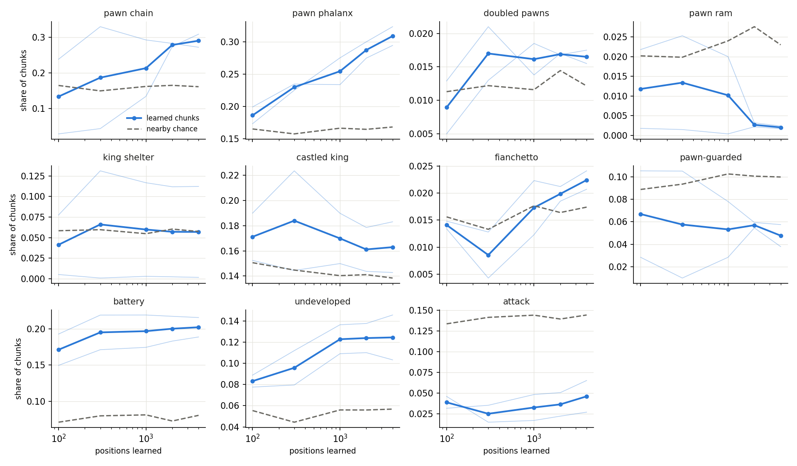
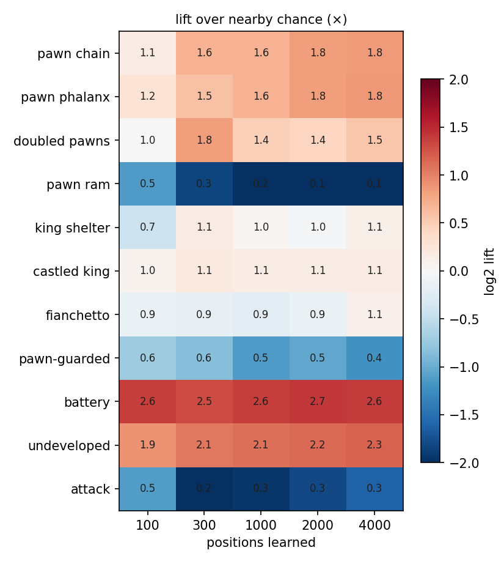
- Structure, not threats. Batteries (2.2 to 3.2× chance), undeveloped back ranks (about 2×) and pawn chains and phalanxes (rising to about 1.8×) are chunked; pieces that attack each other (about 0.3×) and rams (about 0.1×) are split apart. This is Chase and Simon's observation that attackers were rarely chunked with what they attacked, while pawn chains, castled kings and same-colour clusters made up most of the master's chunks.
- Chunks grow with learning. Held-out positions go from no recognised chunk at 100 positions to 5 or 6 at 4,000.
- Two ways to hold a castled king. Seeds 13 and 23 chunk the king with its pawn shelter (f2 g1 g2 h2, seen about 480 times; king shelter about 2× chance); seeds 17 and 29 chunk it with the back rank (a1 d1 f1 g1); seed 19 does both. The grouping is set early and kept: learning is path dependent, as two players can carve the same positions differently.
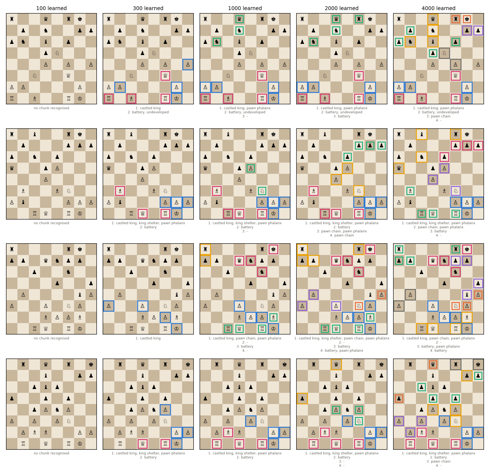
Chase and Simon (1973), figure for figure (earlier protocol)
Each of the paper's experiments is rerun on a TRELLIS player (flat chunks, interaction joins, absolute squares). The paper's own numbers are on the left of each figure, TRELLIS's on the right, both seeds averaged (s13, s17).
- Players. Experience stands in for rating: B (beginner) learns 300 positions, A (class A) 1,000, M (master) 4,000, all from Lichess games rated 1800 and above.
- Positions. 100 held-out middle-game positions (ply 41, 24 to 26 pieces) and end-game positions (ply 81, 12 to 15 pieces). Each also appears as a random position: the same pieces on random squares.
- Trials. One 5-second view per trial puts 7 units in short-term memory: a recognised stored chunk counts as one unit, any other piece as one unit. The board is rebuilt from them, and the rebuild is kept for the next trial, as subjects kept their board.
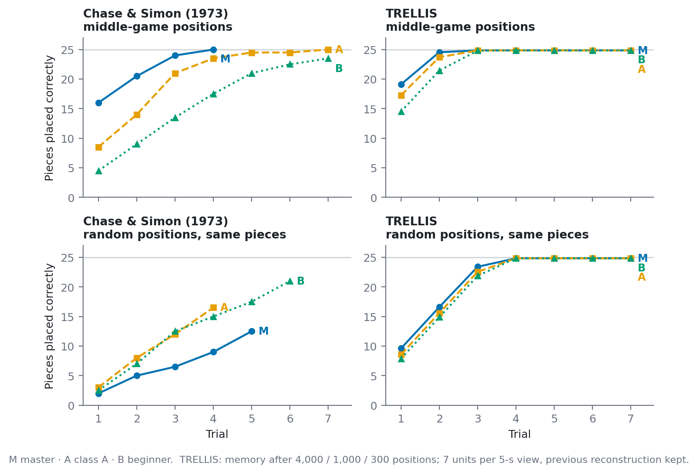

| Pieces on trial 1 | B, real | A, real | M, real | M − B, real | M − B, random |
|---|---|---|---|---|---|
| Chase & Simon, middle games | 4.5 | 8.5 | 16 | 11.5 | −0.5 |
| TRELLIS, middle games | 14.5 | 17.3 | 19.1 | 4.6 | 1.7 |
| Chase & Simon, end games | 4.5 | 7 | 8 | 3.5 | 0 |
| TRELLIS, end games | 9.1 | 10.2 | 11.2 | 2.1 | 0.8 |
- What replicates. Recall of real positions rises with experience, and the gap between players on real boards is about three times the gap on random boards. End games show the same order with a smaller spread, as in the paper.
- What does not. The levels are too high: a TRELLIS beginner's 7 units always hold at least 7 pieces, where Chase and Simon's beginner placed 4.5, and every player rebuilds the whole board by trial 3. Random recall still rises a little with experience (1.7 pieces), where the paper's master did no better than the beginner. Short-term memory is the same 7 units for every player; nothing here was fitted to the paper.
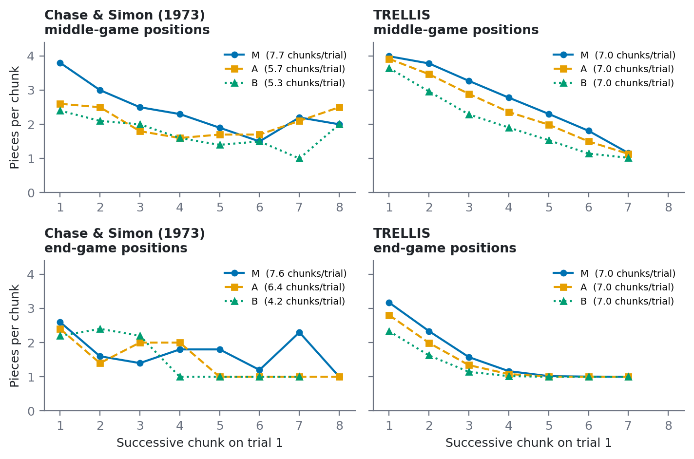
As in the paper, the first chunk is the largest and the master's is the largest of all (4.0 pieces against Chase and Simon's 3.8). TRELLIS always uses all 7 units, so its chunk count does not grow with skill; Chase and Simon's masters recalled more chunks (7.7) than their beginners (5.3). TRELLIS's chunk sizes fall steadily because it fills short-term memory largest first.

The relations that hold a TRELLIS chunk together are the ones that held Chase and Simon's subjects' chunks together: pairs that defend each other, stand close and share a colour (DPC, DCS, PCS, DPCS) fall within chunks far above their a priori rate, and unrelated pairs (−) fall between chunks. The profiles correlate with the paper's at r 0.61 within chunks and 0.82 between. TRELLIS over-uses same-colour, same-type pairs (CS) within chunks, its pawn chains.
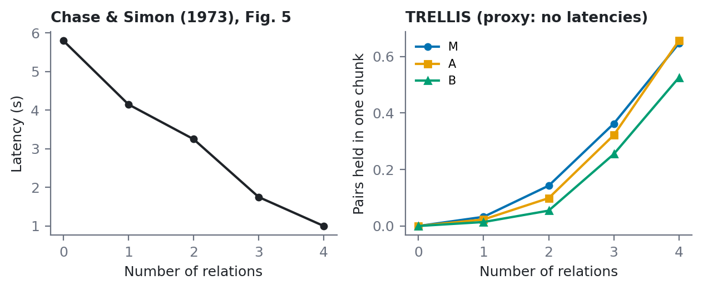
Pieces with more relations between them are bound more tightly: Chase and Simon's subjects placed them faster, and TRELLIS holds them in one chunk more often (0 with no relation, 0.65 with four). The more experienced player binds more at every count.
Familiar shapes on new squares
A co-occurrence chunk (byte-pair merging on piece-square sets) is an exact set of pieces on exact squares, so the same shape one file over is a new, unseen item. TRELLIS describes a chunk by its pieces at offsets from an anchor (and, in one arm, also by its squares) and can copy a stored chunk at a new anchor. Both learn 4,000 move-30 positions from ECO C games (1.e4 e5 and the French) with White's king on files e–h, then code 1,000 unlearned positions from each test set (chess_transfer_sets.py, seed 13). Held-out code bits per position, the model not charged; co-occurrence at its best merge count (2,000).
| Test set | Piece-square list | Co-occurrence chunks | TRELLIS (offsets + squares) | TRELLIS (offsets only) |
|---|---|---|---|---|
| control: same kind of position | 183.2 | 108.6 | 127.7 | 130.7 |
| dropped: control's pieces on one edge file removed | 167.1 | 112.1 | 123.6 | 125.6 |
| family: queen's-pawn openings (ECO D, E) | 192.4 | 124.1 | 138.6 | 138.3 |
| wing: White castled queenside | 199.4 | 143.8 | 158.5 | 154.6 |
| shift: the dropped positions moved one file | 210.2 | 206.7 | 151.6 | 147.2 |
- Correction. The offset coder's 147.2 here comes from a run with
exact_aloneoff, although the recipe says it is on. With it on, shift costs 153.6 and control is unchanged (A18). Rerun on today's code: the numbers reproduce. - Shift. Moving every piece one file (the pieces falling off the far edge removed, at most 3, kings kept) erases co-occurrence chunks' saving: 3.5 bits below the piece-square list, against 55 on the same positions unmoved. TRELLIS keeps a 58–62 bit saving and codes the shifted positions 55–60 bits cheaper. Moving costs co-occurrence chunks 95 bits per position, TRELLIS 28 (with squares) or 22 (offsets only).
- Why. TRELLIS still copies about 5.3 chunks per shifted position, as it does unmoved, but by offsets: copies on their own squares fall from 4.4 to 1.7 per position. The extra cost is the anchors (14.5 to 27.6 bits), which each concept predicts from the squares it was seen on.
- Natural shifts. On other openings and the other wing co-occurrence chunks still win, but the gap narrows from 19 bits (control) to 14 (family) and 11 (wing, offsets only). Queenside castling and queen's-pawn structures are mostly new shapes, not old shapes moved.
- Squares in the description help on the control (127.7 against 130.7) and hurt wherever shapes move (shift 151.6 against 147.2): they tie concepts to places.
Six coders, four test sets, four amounts of learning
Do chunks described by shape, not square, close the gap for other chunkers too? Each coder learns 300 to 4,000 positions and codes 1,000 unlearned positions from four of the sets above (seed 13, held-out code bits, model not charged):
- BPE, squares: byte-pair merging on piece-square sets (the co-occurrence chunks above).
- BPE, shapes: the same merging on translation-free shapes, each chunk coded as its shape plus an anchor square.
- Krimp: MDL itemset mining (Vreeken et al., 2011), with its standard cover.
- xz: a general-purpose compressor, each position coded given all learned positions.
- TRELLIS: the better of its two arms (offsets only, or offsets + squares).

| 4,000 learned | Control | Other openings | Other wing | Shifted |
|---|---|---|---|---|
| piece-square list | 183.2 | 192.4 | 199.4 | 210.2 |
| BPE, squares | 108.8 | 123.4 | 142.4 | 205.5 |
| BPE, shapes | 111.3 | 121.4 | 141.2 | 149.7 |
| Krimp | 142.3 | 156.1 | 173.4 | 198.3 |
| xz | 122.7 | 132.2 | 153.0 | 181.3 |
| TRELLIS | 127.7 | 138.3 | 154.6 | 147.2 |
- Shapes rescue BPE. Describing chunks by shape rather than square costs BPE only 2.5 bits on the control and saves it 56 bits on shifted positions. Shape BPE then trails TRELLIS on shifted positions by only 2.5 bits at 4,000 positions (7 at 300), and beats it by 14–16 bits everywhere else.
- TRELLIS is not the best coder. It wins only on shifted positions, narrowly. Its advantage in the transfer test came from describing chunks by shape, which a frequency miner can also do.
- Square-bound coders do not transfer. BPE on squares, Krimp and xz all lose most of their saving on shifted positions, and BPE on squares and xz get worse there as they learn more.
- Every learner improves with data except Krimp, which flattens by 1,000 positions.
Earlier chess studies: recognition recall, chunk types, move choice, lossless codes and learning curves
GraphTrellis learns real positions (Lichess 1800+, ply 30), with positions as board graphs. At each checkpoint it sees 100 held-out positions and the same pieces scattered at random.
- Recognition (CHREST-like): a chunk is one unit if its recognition bits, from climbing both trees by content and context, are at least θ; otherwise it falls apart into its parts.
- Short-term memory: 7 units, the largest kept.
- Recall: the share of pieces inside the kept units.
| Recall, 4,000 learned positions | Real, s13 | Scrambled, s13 | Real, s17 | Scrambled, s17 |
|---|---|---|---|---|
| θ 16 | 0.77 | 0.54 | 0.88 | 0.73 |
| θ 20 | 0.48 | 0.28 | 0.64 | 0.38 |
| Novice (0 learned) | 0.265 | 0.265 | 0.265 | 0.265 |
Recognising by content alone gives almost no advantage (0.74 against 0.63): a chunk's content names only its pieces' categories, which scrambled boards share. Where pieces stand is what experts recognise.
Recall grows with experience
Experience stands in for rating: the more positions memory has seen, the more of a real board it holds in seven units.
| Recall at θ 16 (s13 / s17) | 0 | 300 | 1,000 | 2,000 | 4,000 |
|---|---|---|---|---|---|
| Real | 0.27 / 0.27 | 0.30 / 0.43 | 0.58 / 0.70 | 0.71 / 0.83 | 0.77 / 0.88 |
| Scrambled | 0.27 / 0.27 | 0.27 / 0.31 | 0.39 / 0.46 | 0.48 / 0.66 | 0.54 / 0.73 |
The expert advantage on real positions replicates. Chase and Simon's masters recalled scrambled boards about as poorly as novices; here scrambled recall also rises, to 0.54 / 0.73. Gobet and Simon (1996) found a small expert edge on scrambled boards, but this one is larger.
Case 1 · claim: experience lets memory hold a real board in a few chunks
One held-out position: a novice keeps 7 single pieces; after 1,000 positions, 6 chunks hold 23 of its 28 pieces.
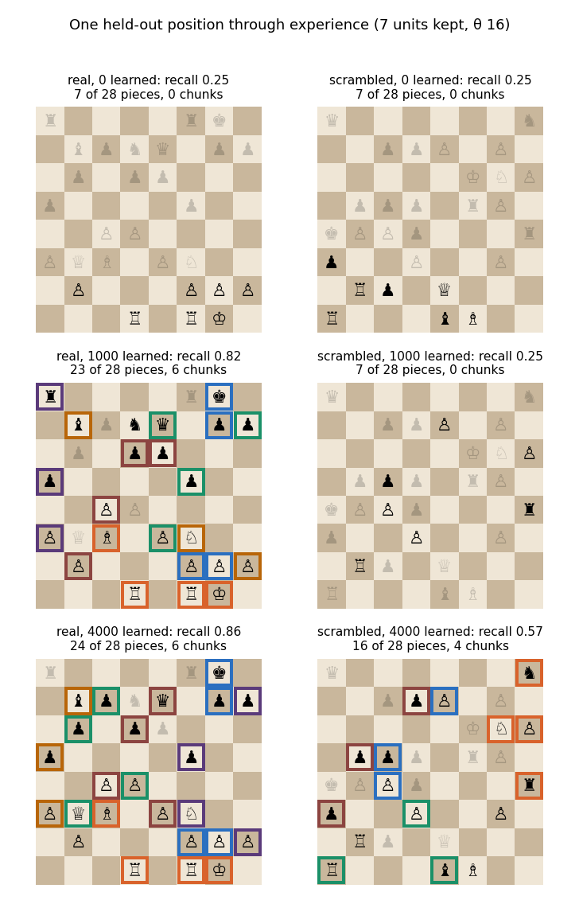
Seed 13, θ 16, seven units kept; recalled pieces in full, each chunk ringed in its own colour. At 1,000 the real board's seven units are six chunks and one piece. One chunk is local: white's rooks d1 and f1 with king g1 and bishop c3. Others join across the board: pawns f2 and g2 with black's g7 and king g8, up the g-file, and a3 with a5 and rook a8 along the a-file. These are the long joins discussed below. At 1,000 the scrambled board yields no chunk at all. At 4,000 it yields four chunks of two or three pieces (16 of 28 pieces), and that is the rise in scrambled recall Chase and Simon did not see.
Case 2 · claim: the advantage is an average, not a rule for every board
Over the first eight held-out positions, real beats scrambled at 4,000 learned on all eight, by 0.07 to 0.35.
At 0 learned every piece is its own unit, so real and scrambled recall agree exactly. At 1,000 and 2,000 a scrambled board sometimes wins: position 1 at 1,000 and position 2 at 2,000, marked. By 4,000 the real board wins on all eight.
Chunks at every size
After 2,000 positions, memory holds about 12,900 committed two-piece chunks, 11,800 three-piece and 10,800 four-piece chunks (s13, chunks up to four pieces). The content tree sorts them into 33, 460 and 571 concepts. The most frequent concepts are familiar chess patterns:
- the castled king, rook f1 and king g1 (4,545);
- the pawn chain e6–f7 (4,033);
- the king's shelter: king g8 with pawns g6 and h7, here with a bishop on g5 (483);
- the back rank, queen d1, rook f1 and king g1 (846).

On held-out positions at θ 16, memory recognises about 4.3 multi-piece chunks per real position and 2.2 per scrambled one. It leaves 11.0 real pieces outside any recognised chunk, against 18.9 scrambled.
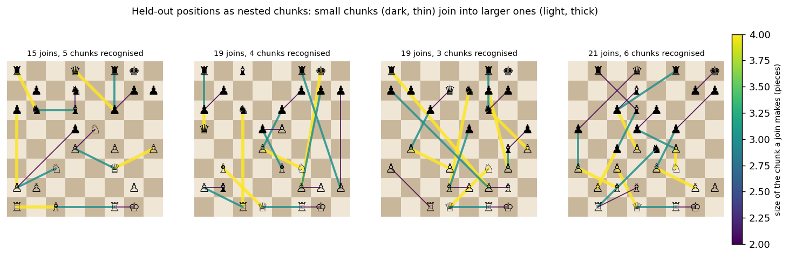
With chunks of up to eight pieces (s13, 2,000 positions), memory stores 4,600–6,300 chunks at each size from four to eight. Mid-sized concepts are whole formations:
- black's castled king with f7 and g7, alone (929) or with h6 (269) or a knight on f6 (188);
- white's queenside corner, rook a1 with pawns a2 and b2 and bishop c1 (302).
At seven and eight pieces, nearly every instance is unique: one concept gathers 215 chunks in 214 placements. These largest chunks join white's pawn wall to black pawns across the board. On held-out positions, memory recognises 2.0 chunks of five to eight pieces per real position and 1.4 per scrambled one, and leaves 10.4 real pieces outside any recognised chunk against 15.5 scrambled.

Many joins span the board: a part joins the first piece along a ray, at any distance and of either colour. Chase and Simon's chunks are compact and mostly of one colour. Long joins also fit scrambled boards, which may explain the rise in scrambled recall. Joining only nearby pieces, in the board-graph rework, is the change that would test this.
From move choice to state compression
The first Elo study let memory choose the move after which it recognises the position best. That player was about as strong as random (−58 to 84 Elo, random = 0) and did not improve with experience. A safety filter that rejects moves losing material lifted it to 210–317, but that strength came from the filter. The study was stopped on 27 October.
TRELLIS is a representation learner, so the next chess study tests it as one:
- One search, alpha-beta minimax at a fixed depth, with a small value head; the arms change only the state representation.
- The value head trains on scores from a deeper search on the same positions.
- TRELLIS enters in two ways: its concept codes as the value head's features, and its concepts as a transposition table, where positions in one concept share a stored value.
- The comparison is against other representation learners: raw piece-square features, an autoencoder, a VQ-VAE (discrete codes) and a contrastive board encoder. The same comparison goes into the Chinese characters study (S5).
- Measures: Elo at a fixed node budget, bits per state, nodes searched to reach an Elo, and how each changes with the number of positions seen.
First result (seed 13). The value head is a ridge regression fitted on 2,500 positions and scored on 1,000 held-out positions. Its target is a depth-3 alpha-beta score with capture quiescence, material plus piece-square terms. Every representation learner trains on the same 4,000 unlabelled positions; TRELLIS learns from 2,000 of them, θ 12.
| Representation | Bits per position | R² | Spearman |
|---|---|---|---|
| raw piece-square (768) | 254.7 | 0.43 | 0.60 |
| piece counts only (12; a reference, not a state code) | 38 | 0.57 | 0.60 |
| TRELLIS (content concepts + unrecognised pieces) | 112.2* | 0.01 | 0.05 |
| TRELLIS, with each chunk's exact leaf added | 112.2* | 0.00 | 0.08 |
| autoencoder, 32 dims | 256 | 0.01 | 0.11 |
| VQ-VAE, 8 codes of 64 | 48 | 0.00 | 0.03 |
| contrastive, 32 dims | 256 | 0.00 | 0.08 |
Only the raw board and the piece counts predict the score. Piece counts alone (0.57) beat the full board (0.43), so this teacher's score is mostly material. Each compressed representation keeps too little of the material balance for a linear head to recover it.
*The TRELLIS bit counts are not comparable with the others. A chunk's content description holds its parts' learned context names, not their pieces. Its concept, even its exact leaf, therefore does not say which pieces it holds, and the 112 bits name chunk types without coding the board. Adding the exact leaf (3,462 indicators in place of 182) changed nothing. The corrected test codes a chunk only as a pointer to an identical stored chunk, the same pieces on the same squares, as CHREST does. Its codes decode to the position, and its bits compare with an entropy-coded piece-square list. A one-hidden-layer head did worse than ridge on every representation except piece counts and is not reported.
Lossless chunk code. The dictionary holds the composites memory chose for its 2,000 training positions, each keyed by its exact pieces and squares (14,534 chunks). A held-out position's parse is read top-down. A unit with an identical stored chunk becomes one item; otherwise its parts are coded in turn, down to single pieces. Items are entropy-coded with their usage frequencies on the training positions. The baseline is the same code with no chunks.
| Lossless code (held-out positions) | Bits per position | Items | Value head R² |
|---|---|---|---|
| piece-square list, uniform | 254.7 | 26.6 | 0.43 |
| piece-square list, entropy-coded | 189.9 | 26.6 | 0.43 |
| TRELLIS chunk dictionary + leftover pieces | 151.4 | 14.1 | 0.04 |
- Chunks shorten the code by 20% over entropy-coded piece-squares: 6.0 chunks and 8.1 single pieces per position in place of 26.6 pieces. Neither count includes the cost of storing the dictionary or the frequency table.
- 53% of the units recognised at θ 12 have an identical stored chunk (91% in a 200-position smoke run). Recognition names a chunk type; about half the time memory also holds that exact chunk.
- The code is lossless, yet a linear value head on its items reaches only R² 0.04. Each chunk is one indicator with its own weight (6,599 features against 2,500 labelled positions), so the head cannot share what a pawn is worth across chunks. A search would decode the code to the board before evaluating, and the value is then the raw board's.
- The autoencoder and contrastive bits (8 bits per dimension) and the VQ-VAE bits count lossy codes, so they are not comparable with this table until each is paired with its reconstruction error.
With the dictionary's own cost, against a co-occurrence baseline. Storing a chunk costs its pieces written as a piece-square list. Pruning the TRELLIS dictionary to chunks memory chose in at least m training positions trades code length for dictionary size. The baseline mines its chunks by co-occurrence alone: byte-pair merging on piece-square sets, up to 4 pieces, from the same 2,000 training positions, coded and charged the same way. Bits are per position over the 3,500 held-out positions, including the dictionary's cost spread across them.
| Lossless code | Chunks | Code bits | + dictionary | Total |
|---|---|---|---|---|
| piece-square list, entropy-coded | 0 | 189.9 | 0 | 189.9 |
| TRELLIS, every chosen chunk (m 1) | 5,831 | 151.4 | 49.2 | 200.6 |
| TRELLIS, m 5 (best) | 824 | 157.4 | 5.5 | 162.9 |
| TRELLIS, m 20 | 178 | 164.3 | 1.1 | 165.4 |
| co-occurrence merges, 200 | 200 | 130.7 | 1.3 | 132.0 |
| co-occurrence merges, 800 (best) | 800 | 120.9 | 5.8 | 126.6 |
Counting its own cost, the TRELLIS dictionary saves 14% over entropy-coded piece-squares, and plain co-occurrence saves 33%. At a matched dictionary size (about 800 chunks) co-occurrence chunks code a position in 121 bits against TRELLIS's 157. TRELLIS's joins are chosen by concept gain along rays at any distance, not by how often pieces stand together, and half of its recognised units have no identical stored chunk. As a lossless compressor of chess positions, TRELLIS is beaten by the simplest frequency baseline. Its own case has to rest on what frequency mining lacks: recognising a chunk type it has not stored exactly, recall under scrambling, and transfer.
Recall with reproducible chunks
Recall as above counts every recognised chunk, but a chunk helps recall only if memory can put its pieces back. Here a recognised chunk counts only when an identical chunk is stored (verified). The same test also runs on chunks mined by co-occurrence alone, the byte-pair dictionary used as CHREST uses its chunks. Short-term memory keeps the 7 largest units; 100 held-out positions; recall on real / scrambled boards, θ 12.
| Positions learned (seed 13) | 300 | 1,000 | 2,000 | 4,000 |
|---|---|---|---|---|
| recognised (as above) | 0.55 / 0.42 | 0.82 / 0.71 | 0.86 / 0.78 | 0.89 / 0.83 |
| verified | 0.44 / 0.27 | 0.62 / 0.29 | 0.67 / 0.29 | 0.71 / 0.30 |
verified, pieces in content (word_cnt) | 0.57 / 0.29 | 0.71 / 0.31 | 0.75 / 0.31 | 0.77 / 0.34 |
| co-occurrence chunks | 0.74 / 0.31 | 0.80 / 0.33 | 0.81 / 0.34 | 0.84 / 0.35 |
Seed 17 agrees (verified 0.75 / 0.32 at 4,000). With reproducible chunks the Chase & Simon effect is clean: recall of real positions grows with experience while recall of scrambled ones stays near 0.3. The recognised count's high scrambled recall (0.83) came from chunks memory recognises but cannot reproduce. Putting the pieces into the content description adds 6–13 points. Co-occurrence chunks still recall more of real positions: 17 points more than the best TRELLIS arm at 300 positions, 6–9 points from 1,000 on.
Decoding by generation
A unified code uses TRELLIS's own generator as the probability model. A position's code is the sequence of choices generation makes to produce exactly that position, each costing −log2 of its probability, so a decoder recovers the board by running generation on the coded choices (chess_compress_gen.py). A top chunk's content concept is coded by TOP, its anchor by the anchors stored under that concept, and each part by generation's draw: a mixture over the concept's part slots of FILL at the slot's context concept, recursively. The right part is placed by the concept's relation distribution. A part memory cannot generate escapes to a piece-square list. These are code bits only: the memory itself is not charged. 2,000 positions learned, 1,000 coded.
| Bits per position (levels content, context 1, 1) | Total | Roots | Anchors | Sub-chunk concepts | Piece identities | Relations |
|---|---|---|---|---|---|---|
| content = parts' learned names | 215.7 | — | — | — | — | — |
pieces in content (word_cnt) | 193.1 | 59.4 | 25.7 | 59.0 | 5.6 | 27.2 |
| piece-square list, entropy-coded | 189.9 | — | ||||
| co-occurrence chunks, code bits only | ≈120 | — | ||||
With pieces in the content description, generation predicts a part's piece almost for free: 5.6 bits for the whole board. The cost is structure: roots, nested sub-chunk choices, anchors and relations. 99.8% of four-piece chunks are chains built one piece at a time, the same with the join rule relaxed so that two chunks can join. In the dictionary code, 7,425 of 14,534 stored chunks are four-piece chains, 3% of them reused. The chain structure is what the code pays for.
Flat chunks with interactions (one level up)
chess_flat builds chunks from pieces only (compositional depth one) and stores only the pieces and the top chunks of each analysis, so a chain's pairs and triples are never stored. Generality comes from the concept hierarchy, not from nesting.
- Content is what the chunk holds: its pieces, each piece at its offset from the anchor, and how its pieces interact (
wP defends wP,wK defends wP; fromchess.interactions: the first piece in each direction, and whether it is attacked, defended or only seen, both ways). - Context (the anchor-context) adds, for every element, how its pieces interact with the pieces outside it (
wK attacked by bQ). - Two join rules:
any(some piece of one sees some piece of the other) andinteract(some piece attacks or defends a piece of the other, either way). - Working memory is checked at test time only: recall with 4 and with 7 units.
| 4,000 positions, seed 13 (real / random) | Stored chunks | Verified, K 7 | Stored, K 7 | Stored, K 4 |
|---|---|---|---|---|
nested, pieces in content (word_cnt) | 20,797 | 0.77 / 0.34 | 0.79 / 0.35 | 0.55 / 0.24 |
| flat, join any, up to 4 pieces | 20,947 | 0.80 / 0.32 | 0.82 / 0.34 | 0.57 / 0.23 |
| flat, join interact, up to 4 pieces | 13,456 | 0.76 / 0.32 | 0.78 / 0.34 | 0.55 / 0.23 |
| co-occurrence chunks | — | — | 0.84 / 0.35 | 0.57 / 0.24 |
Flat chunks joined by sight are the best TRELLIS arm, and at a working memory of 4 units they recall as much as co-occurrence chunks. Chunks joined by interactions recall about as much with 35% fewer stored chunks. Up to 6 pieces is worse at 2,000 positions (verified 0.60–0.63): larger flat chunks recur less often.
In the generator code a flat chunk is predicted whole by its concept, as Cobweb predicts attributes. The code gives its size, then each piece at its offset, backed off along the concept's path, and mixes the levels of that path. Interaction joins, 2,000 positions learned, 1,000 coded: 198.7 bits per position, against 205.1 for the best single level, 193.1 for nested chunks with pieces in content, and 188.3 for entropy-coded piece-squares. Flat chunks recall well but do not yet compress: at a chunk's own concept its root costs about 11 bits and its pieces about 13. A co-occurrence chunk of the same pieces is one frequent item.
Learning curves and how bits are counted
Bits are counted two ways (seed 13):
- Held-out code: the same 1,000 held-out positions coded after learning 300, 1,000, 2,000 and 4,000 positions. For TRELLIS each choice generation makes costs −log2 of its probability: the top concept, the anchor, the parts or template, the relation. This leaves out the cost of the model, so it favours whoever stores most.
- Prequential code (the measure we compare on): each of the first 4,000 positions is coded by the model learned from the positions before it, then learned. A decoder that learns the same way recovers every position, so the sum is the whole description, model included, with no separate memory term. TRELLIS rebuilds its code tables every 100 positions; co-occurrence chunks re-mine their merges at 100, 200, 400, … positions and update item counts after every position. Each method's code is the even mixture of its variants (levels or merge counts) and the piece-square list.
An earlier two-part count charged every distinct stored chunk as a raw piece-square list. It made TRELLIS's code plus memory rise with learning (to 475–818 bits at 4,000). That was an artefact: it charged chunks that TRELLIS itself codes cheaply, and charged one-off chunks as if they cost more than coding the positions they came from.
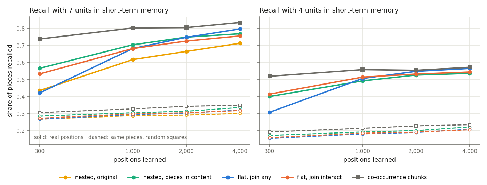
Recall rises with experience for every arm and the gap to co-occurrence chunks closes from about 0.2 to 0.04–0.13 with 7 units; with 4 units the arms meet. Scrambled positions gain little: the expertise effect holds throughout.
![Two panels of bits per held-out position against positions learned. Left, code: dashed lines without copying stay between 183 and 226 bits; solid lines with copying fall, flat chunks with absolute squares from 180 to 155, flat chunks without from 205 to 162, nested from 217 to 179; co-occurrence chunks fall from 135 to 113; piece-square list near 188. Right, prequential mean bits per position so far, model included: flat chunks with absolute squares fall from 191 to 164, flat chunks from 195 to 169, nested from 196 to 182; co-occurrence chunks from 162 to 126; piece-square list from 194 to 189. The code-chosen cover (pink) codes held-out positions in 136 then 130 bits and falls prequentially from 169 to 136, closest to co-occurrence chunks.](curve_compress.png)
Two changes to the code moved TRELLIS below the piece-square list (dashed lines: neither):
- Copying. A chunk may be coded as one stored instance under its concept (P(exact pieces at their offsets | concept)), mixed evenly with generating it. Without copying the code stalls near 185–195 bits; with it the code keeps falling. The gain comes from specific stored chunks, not from general concepts.
- Absolute squares (
chess_abs). Flat content holds each piece on its own square beside its offset from the anchor; category utility weighs the two, and the code mixes a relative route (anchor + offsets) and an absolute route. About 5 of every 7 chunks code cheaper by squares. Recall is unchanged (0.76 at 4,000 with interaction joins).
| Bits per position | Held-out code, 4,000 learned | Prequential, mean over 4,000 | Prequential, positions 2,001–4,000 |
|---|---|---|---|
| same, code-chosen cover with recognition (below) | 130.1 | 136.1 | 130.2 |
| flat, join interact, absolute squares, copying | 155.0 | 163.5 | 156.8 |
| flat, join interact, copying | 161.8 | 169.2 | 162.3 |
| nested, pieces in content, copying | 178.6 | 181.5 | 176.5 |
| piece-square list | 188 | 189.2 | 188.6 |
| co-occurrence chunks | 113.4 | 126.4 | 121.7 |
Closing the gap: what the code codes (round of 29 October)
Learning is unchanged throughout; each step changes only how a position is coded from what TRELLIS has learned, and each is decodable. Flat chunks, absolute squares, interaction joins, 1,000 positions learned:
| Bits per position | Held-out code | Prequential mean |
|---|---|---|
| as above | 163.9 | 176.3 |
| + copy on own squares | 158.5 | 172.9 |
| + learned route weights | 156.3 | 171.9 |
| + write an unfamiliar chunk as pieces | 153.9 | 169.6 |
| + code-chosen cover | 136.8 | 151.2 |
| + recognition of stored chunks on the board | 135.8 | 149.0 |
| co-occurrence chunks | 123.5 | 139.2 |
- Copy on own squares. A chunk may be copied as its exact pieces on their own squares under its concept, beside its pieces at offsets from an anchor. Positions at ply 30 keep many structures on fixed squares, and this route wins for about 4 of every 4.5 copied chunks.
- Learned route weights. The routes (generate by offsets or squares, copy by offsets or squares, write as pieces) are mixed by each route's share of the chunks coded so far that it coded best, updated after every chunk so a decoder keeps the same counts, in place of an even mixture.
- Code-chosen cover, the largest step. TRELLIS parses by compression gain, so the units coded should be chosen the same way: among every chunk the parse built (greedy and 16 sampled analyses), non-overlapping chunks are taken greedily by the bits they save over their pieces coded singly; other pieces are single units. The encoder chooses the cover, so sending it costs nothing.
- Recognition. Every stored chunk whose exact pieces stand on the board joins the candidates, as a player recognises familiar groups. It adds 1 to 2 bits.
- Failed: context head. A chunk's concept predicted by FILL at the context the anchor sees on the board decoded so far costs more than the concept alone (166.2 held-out). Given each chunk's true full context (not decodable) it would save 5 bits, so context does carry the information, but a half-decoded board sorts to the wrong concepts, and even then the gain is small.
At 4,000 positions the gap to co-occurrence chunks falls from 42 to 17 bits on held-out positions and from 35 to 8.5 on the latest prequential positions. Now 6.2 of 6.5 coded chunks are exact copies; the rest of the gap is in their probabilities. TRELLIS reads how often a chunk was a top unit of learning's parse, while the code now chooses its own units; co-occurrence counts are counts of exactly the items their code uses. Making learning's top units the compression-chosen cover would align the two. Tried as a side flag (TOPC=1), it does worse: 142.0 bits per position prequentially at 4,000 positions against 136.1, and 137.0 against 130.2 on the latest 2,000. Memory stops growing (2,366 distinct chunks against 9,798), because a chunk joins the cover only once it already saves bits. Counting the code's own uses on top of learning's counts (USED) also does worse (154.6 against 149.0 at 1,000). The remaining gap is the price of a memory that keeps learning new chunks, not a mismatch of counts.
With the model included, every TRELLIS arm codes the data in fewer bits than the piece-square list, and its cost per position keeps falling with learning. The best arm saves 26 bits per position on average and 32 on the latest positions. Co-occurrence chunks remain about 35 bits per position cheaper. The gap is the code itself: about seven concept choices per position at several bits each, where a frequent co-occurrence chunk is one cheap item. Memory growth is not the obstacle it appeared to be under the two-part count. The anchor-context alone (chess_ctx="ext") did not help: within 2% on code, and recall 0.05 lower with interaction joins.
Appendix A2
Story rounds
The record of every story round, in order. Inside-outside generation is the method these rounds led to (Generation); the current summary is in Results. A later check found the window prediction never saw the previous sentence or chunks in any of these rounds; the numbers stand, as measured.
The previous sentence, given as a frozen same-level chunk, makes the next sentence belong with it. A general concept directed by that sentence fits as well as copying a stored sentence and makes three to five times more new sentences, at a cost in grammar.
The goal is text that holds together in meaning. General concepts keep their general knowledge and context directs them to a specific output, as a diffusion model's step is directed. Generation comes mostly from chunks around a slot and chunks below it that are already frozen; top-down conditioning stays optional. Gold part-of-speech tags and PMI score only.
Within a sentence (rounds 51–55)
Coherence is the mean PMI between the content words of a sentence, as a share of real text's over random words of the same tag. Conditioning a right part on its frozen left part raises coherence over all sentences (0.77 → 0.88 on s13 at 2,000), mostly by recombining stored structure. On new sentences it does not beat the base, which already reaches about 0.82 of real text.
Across sentences (rounds 56–62)
Stories are read in order. A sentence that follows another in its story gives every element a context facet, pv: the words of the previous sentence. Given a prompt sentence, generation draws a whole stored experience by the posterior of the prompt as its pv, and, with story_fill, weights the fillers of a general concept above each slot the same way. Cross share is 0 for a random held-out sentence and 1 for the story's real next sentence.
| 2,000 sentences (s13 / s17) | Cross share | Tag pattern attested | New |
|---|---|---|---|
| Unconditioned | −0.13 / −0.04 | 0.895 / 0.895 | 10% / 9% |
| Copy a stored next sentence | 0.34 / 0.51 | 0.912 / 0.909 | 2% / 3% |
| General concept, prompt-directed | 0.40 / 0.54 | 0.884 / 0.875 | 8% / 7% |
| Same, back-off | 0.39 / 0.54 | 0.858 / 0.842 | 12% / 15% |
| Retrieval, no learner (reference) | 0.66 / 0.68 | — | — |
- Two earlier forms failed. A next-sentence statistic on the content tree groups sentences by shape, not topic (round 56). A geometric-mean or flat-smoothed weighting left the pool flat (rounds 57–58).
- One level up, concepts group by their other facets, so the topic reaches a general concept only through its members' records (
story_fill). - Pairing right parts with the frozen left part raises novelty to 24–55% and lowers grammar to 0.67–0.82 (round 61). Requiring the left neighbour recovers only 0.5–1.4 points (round 62).
- Round 63 requires the right neighbour too: a filler counts only through records that also stood before the stored slot's right neighbour, a sentence end included (
story_window="both"). The table below is 1,000 sentences, seeds 13 / 17 / 21. - Retrieval pulls ahead as memory grows. Matching it with new sentences is the open target.
| Round 63, 1,000 sentences (s13 / s17 / s21) | Cross share | Tag pattern attested | New |
|---|---|---|---|
| Level 1, left neighbour | 0.39 / 0.45 / 0.39 | 0.897 / 0.841 / 0.875 | 8% / 10% / 9% |
| Level 1, both neighbours | 0.34 / 0.48 / 0.36 | 0.920 / 0.839 / 0.902 | 5% / 9% / 5% |
| Level 2, left neighbour | 0.43 / 0.46 / 0.32 | 0.760 / 0.706 / 0.789 | 34% / 34% / 27% |
| Level 2, both neighbours | 0.35 / 0.46 / 0.41 | 0.889 / 0.825 / 0.885 | 14% / 14% / 11% |
| Back-off, both neighbours | 0.43 / 0.46 / 0.36 | 0.917 / 0.837 / 0.891 | 6% / 10% / 7% |
The right neighbour carries the grammar that level 2 lost: tag-pattern grammar rises 10–13 points, to the level of the level-1 arms. It also halves novelty, because a filler that must match both stored neighbours is closer to a copy. Level 2 with both neighbours is the best point found so far on the three-way trade-off. Averaged over the seeds it has the grammar of level 1 with the left neighbour (0.866 against 0.871), the same topic (cross share 0.41 against 0.41), and 13% new sentences against 9%. The gain is real but small; grammar against novelty remains the open trade-off.
| Round 63, 2,000 sentences (s13 / s17) | Cross share | Tag pattern attested | New |
|---|---|---|---|
| Level 1, left neighbour | 0.42 / 0.51 | 0.882 / 0.877 | 8% / 8% |
| Level 1, both neighbours | 0.45 / 0.51 | 0.886 / 0.889 | 7% / 6% |
| Level 2, left neighbour | 0.41 / 0.57 | 0.771 / 0.766 | 29% / 32% |
| Level 2, both neighbours | 0.42 / 0.52 | 0.855 / 0.861 | 14% / 13% |
| Back-off, both neighbours | 0.43 / 0.58 | 0.882 / 0.874 | 8% / 9% |
At 2,000 sentences the pattern holds. Level 2 with both neighbours trades about 2 points of grammar against level 1 for 5–6 more points of new sentences, at the same cross share.
Round 64 sweeps how far generality reaches, with both neighbours required: back-off strength β (a slot climbs above a concept holding n fillers with probability β / (n + β)) and level 3. Seed means over 13 / 17 / 21, 1,000 sentences:
| Both neighbours, seed means | Cross share | Tag pattern attested | New |
|---|---|---|---|
| back-off β 1 (round 63) | 0.42 | 0.882 | 8% |
| back-off β 4 | 0.43 | 0.871 | 10% |
| level 2 (round 63) | 0.41 | 0.866 | 13% |
| back-off β 16 | 0.36 | 0.850 | 16% |
| level 3 | 0.40 | 0.836 | 18% |
| back-off β 64 | 0.34 | 0.821 | 20% |
The settings trace one frontier. Each point of novelty costs about half a point of grammar, and past 13% new sentences the topic weakens too. No setting of how general the filler may be moves the frontier, so the next gain has to come from a different mechanism, not from tuning generality.
The tag-pattern check fails on new sentences. It rejects "sue was happy to have new friends" and accepts "they decided to her mommy". Every generation was therefore scored by a few-shot LM judge, used for evaluation only (Qwen2.5-3B-Instruct, t3_judge.py). On 300 held-out sentences per seed it passes 0.89 / 0.91 of real sentences, 0.12 / 0.11 with the word order scrambled, and 0.05 / 0.06 with content words swapped by tag. It therefore measures acceptability, grammar and sense together.
| Judged, 1,000 sentences (s13 / s17) | New | New judged acceptable | Acceptable new per generation |
|---|---|---|---|
| unconditioned | 9% / 7% | 0.78 / 0.43 | 6.9% / 3.0% |
| copy a stored next sentence | 1% / 4% | 0.25 / 0.11 | 0.2% / 0.4% |
| level 1, left neighbour | 8% / 10% | 0.31 / 0.14 | 2.5% / 1.4% |
| level 2, left neighbour | 34% / 34% | 0.19 / 0.13 | 6.4% / 4.6% |
| level 2, both neighbours | 14% / 14% | 0.46 / 0.42 | 6.3% / 5.9% |
| back-off β 64, both neighbours | 20% / 19% | 0.33 / 0.33 | 6.6% / 6.3% |
Directed by the prompt, the general concepts yield acceptable new sentences as often as unconditioned generation (6–7% per draw, against 5% on average), and they keep the topic. Level 1 with the left neighbour, the best by tag patterns, is among the worst once judged. In every arm fewer than half of the new sentences are acceptable. The open problem is the acceptability of what is new, not how much is new.
Round 65 draws k candidates and keeps the one memory's own parser scores best per word (the critic used for bAbI answers). Acceptable new sentences per generation, without → with the critic (s13 / s17): back-off β 64 with both neighbours 6.6 / 6.3% → 8.0 / 9.2%; unconditioned 6.9 / 3.0% → 9.0 / 4.2%; level 2 with the left neighbour 6.4 / 4.6% → 7.5 / 5.8% (k 8: 7.3 / 6.7%); level 2 with both 6.3 / 5.9% → 6.3 / 6.2%. The critic adds 1.5–2 points, mostly by choosing more novel candidates, not more acceptable ones: the parse does not measure acceptability. The best topic-held arm is now back-off β 64, both neighbours, critic 4: 8.6% on average.

More data alone does not raise the yield. Between 500 and 2,000 sentences, unconditioned generation rises from 4.0 to 6.3% but stays off topic. Topic-directed generation falls from 8.0 to 6.2%. With the critic it stays near 8% (7.5–8.6%) and keeps the topic (cross share 0.37–0.44). About a third of new sentences are judged acceptable at every size. The judge accepts 89% of real sentences, 12% with scrambled word order and 5% with swapped content.
Correction (round 66). An earlier version of this page said most failures are grammatical in form but do not fit in meaning. Reading the new sentences shows the opposite: most put a word or phrase of the wrong class in a slot ("everyone was very looked like fun", "he did not know what yes anna"). Directing by the prompt causes it: the share of new sentences with an attested tag pattern falls from 0.80 unconditioned to 0.49 directed (0.45 with the critic, s13, 1,000 sentences). A word slot already accepts only candidates whose learned name matches the stored word's; a phrase drawn from a general concept had no such check.
Round 66 adds it from the content side (kind k): above its own leaf, a slot keeps only composites whose content concept lies under the concept k levels above the content concepts of the composites its leaf holds, so the two trees agree on what kind of part fills the slot. Topic-directed arm (back-off β 64, both neighbours), 1,000 sentences, judged:
| s13 / s17 | Cross share | New | New judged acceptable | Acceptable new per generation |
|---|---|---|---|---|
| no agreement | 0.28 / 0.44 | 20% / 19% | 0.33 / 0.33 | 6.6 / 6.3% |
| kind 0 | 0.26 / 0.38 | 13% / 13% | 0.47 / 0.51 | 6.0 / 6.7% |
| kind 1 | 0.34 / 0.35 | 18% / 15% | 0.44 / 0.40 | 7.7 / 6.1% |
| kind 2 | 0.27 / 0.33 | 18% / 15% | 0.42 / 0.43 | 7.5 / 6.5% |
Agreement raises the acceptable share of new sentences from a third to 0.40–0.51 and keeps the topic, but it also cuts how many are new, so the yield per generation moves by under a point. The critic did the reverse (more new, not more acceptable), so round 67 combines the two.
Round 67 combines them: the parse critic (best of 4 by score per word) with kind 1 or 2 gives 7.8 / 6.4% and 8.0 / 8.6%, no better than the critic alone (8.0 / 9.2%). A sentence fails at its worst join, and a mean over the sentence hides one bad join, so round 68 keeps the candidate whose least-attested join is best: the lowest factor (both hierarchies' gain) over the joins of its parse, ties broken by the score per word.
| Critic, best of 4 (s13 / s17) | Cross share | New | New judged acceptable | Acceptable new per generation |
|---|---|---|---|---|
| score per word (round 65) | 0.36 / — | 24% / — | — | 8.0 / 9.2% |
| weakest join | 0.27 / 0.44 | 23% / 22% | 0.38 / 0.46 | 8.9 / 10.0% |
| weakest join, kind 2 | 0.30 / 0.45 | 20% / 19% | 0.45 / 0.43 | 9.1 / 8.2% |
The weakest-join critic is the best topic-held arm so far (9.5% on average, against 8.6%), keeping the critic's novelty while more of what is new is acceptable. The gain is under a point; every arm since round 63 lies between 6 and 10%.
Round 69 learns 2,000 sentences in place of 1,000. The weakest-join critic gives 7.7 / 6.9% grammatical new sentences per generation with 4 candidates and 8.3 / 7.1% with 8 (s13 / s17), below its 1,000-sentence 8.9 / 10.0%. With more memory fewer outputs are new (21–25%), while about a third of the new ones are acceptable, as before. The other arms have not yet been run at 2,000 sentences.
Round 70 checks each join while building: a filler is kept only if the pair of categories it makes with the word just generated stood together in memory (join_check, 1,000 sentences). Alone it gives 6.9 / 7.0% grammatical new sentences per generation; with the weakest-join critic of 4, 8.7 / 8.2%, below that critic alone (8.9 / 10.0%). The check trims novelty (about 20% new) more than it helps acceptability, so it stays off.
Inside-outside generation (rounds 71–73)
Expansion fills a slot only with one stored chunk whose span fits it, so most outputs repeat memory (about 20% new). Inside-outside generation reads memory as a grammar over concepts: a composite's content concept at depth 2 rewrites to the pairs of parts its stored members had, backed off up the content tree; each word slot is named by its context concept (depth 2 or 3) and emits the words stored there. An inside pass sums over every tree of the sentence, a tree is drawn top-down and kept, and each word is filled by Cobweb prediction from its neighbours among the words of its slot. Nothing is learned differently; the grammar reads the same two trees.
| 1,000 sentences (s13 / s17) | Cross share | New | New judged acceptable | Acceptable new per generation |
|---|---|---|---|---|
| expansion, weakest-join critic (round 68) | 0.27 / 0.44 | 23% / 22% | 0.38 / 0.46 | 8.9 / 10.0% |
| grammar, context depth 3 (round 71) | −0.02 / 0.12 | 82% / 86% | 0.24 / 0.21 | 19.4 / 18.3% |
| grammar, context depth 2 (round 71) | −0.02 / 0.13 | 80% / 81% | 0.25 / 0.27 | 20.3 / 21.8% |
| grammar, depth 2, start follows the prompt (round 73) | −0.05 / 0.10 | 79% / 80% | 0.26 / 0.29 | 20.7 / 23.0% |
The grammar doubles the yield of acceptable new sentences (about 21% per generation against 9–10%) because four in five outputs are new, but fewer of the new ones are acceptable (0.21–0.29, against 0.38–0.46). It also loses the topic: cross share falls to about zero. Round 72 drew the grammar's root from the concepts that followed sentences like the prompt (NEXT), using only the most specific level; the draws did not change. Round 73 backs off down the prompt's whole content path, one pseudo-count per level, as the story facet does elsewhere. The draws now change, but cross share stays near zero: the prompt picks only a depth-2 root, too general to carry a topic, and the rules below it ignore the prompt. For filling a gap inside a real sentence, expansion still wins (0.39 / 0.31 acceptable new per item against 0.27 / 0.23 for the grammar). Round 74 keeps the likeliest split at each node of the tree in place of drawing one: 20.0 / 21.9% acceptable new per generation at depth 2 (new judged acceptable 0.26 / 0.29, cross share −0.10 / 0.20), the same as drawing. The grammar is not lost in the choice of tree; it is in the rules themselves. The open problems are the grammar's grammar (a quarter of its new sentences are acceptable) and carrying the topic through the rules.
Rounds 75–79 fix two representation defects found in the dump (Representations) (blank part names, a flat content tree) and add surrounding chunks to the context. Expansion's yield of acceptable new sentences rises from 0.089 / 0.100 (round 68) to 0.161 / 0.152 at β 64, with 41% of outputs new; at β 1 the gain halves but holds (0.055 / 0.069 against 0.029 / 0.014 without it).
Beam search in place of inside-outside (round 80)
Learning analyses each sentence with a beam: analyses grow bottom-up, each step joins two neighbouring units into a chunk scored as in inside-outside, and each chunk's context is its neighbours on that analysis' frontier. The best B analyses survive; a chunk is stored with its share of the complete analyses that hold it. Width 1 is the greedy parse. Round 79's setting, 1,000 sentences, seeds 13 / 17; acceptable new sentences per generation:
| Learning search | β 1 | β 4 | Learning time |
|---|---|---|---|
| Inside-outside | 0.055 / 0.069 | 0.122 / 0.119 | 513 / 554 s |
| Beam 1 (greedy) | 0.057 / 0.048 | 0.109 / 0.083 | 157 / 156 s |
| Beam 4 | 0.074 / 0.062 | 0.139 / 0.115 | 283 / 291 s |
| Beam 16 | 0.062 / 0.058 | 0.106 / 0.100 | 398 / 470 s |
Nothing is lost: beam 4 matches inside-outside (means 0.068 and 0.127 against 0.062 and 0.121) at about half the learning time, and even the greedy parse loses only 0.01–0.04. A wider beam is not better. The differences between beam 4, beam 16 and inside-outside are within the spread between seeds. On characters beam 4 costs 1.5–2.5 bits per character (S5).
The grammar conditioned on the prompt: y = G(x) (rounds 81–82)
Round 81 cuts the grammar by information (as on characters). At 12 bits it gives 0.146 / 0.144 acceptable new sentences per generation with 68% new; the whole tree only copies (3% new). Its cross share stays near zero (−0.06 / 0.12): the rules ignore the prompt.
Round 82 reads generation as a function of the prompt x through the generalizations that cover it. Each free position's symbol is a context concept G, so the grammar weights it by how well G explains x: P(x | G) / P(x | root), the lift of the previous sentence at G with back-off along the path, raised to β / n for n free positions. The geometric mean counts x once per sentence, not once per word. Three earlier forms reweighted the stored rules instead: globally (the grammar lost its shape and repeated fragments), and within each parent (no change, since a parent's instances share one context). 1,000 sentences, seeds 13 / 17:
| Generator | Acceptable new per generation | New | Cross share |
|---|---|---|---|
| Grammar, 12 bits, no topic (round 81) | 0.146 / 0.144 | 68% | −0.06 / 0.12 |
| Grammar, topic β 1 | 0.146 / 0.135 | 60 / 57% | 0.18 / 0.22 |
| Grammar, topic β 2 | 0.161 / 0.161 | 60 / 61% | 0.32 / 0.19 |
| Expansion, β 64 (round 79) | 0.161 / 0.152 | 41% | ≈ 0.3 |
Seeds 19 / 23 (round 82b, the three arms together): no topic 0.151 / 0.133 acceptable new per generation with cross share 0.00 / 0.14; β 1 0.158 / 0.144 with 0.10 / 0.43; β 2 0.160 / 0.152 with 0.10 / 0.55. Over the four seeds β 2 lifts the yield on every seed (mean 0.144 → 0.159) and cross share from 0.05 to 0.29.
Conditioning on x gives the grammar the topic it lacked and raises its yield to match expansion. A previous-sentence weight was the missing piece; the rules themselves were not. β 1, the plain posterior, holds the topic but does not raise the yield; β 2 counts the prompt as two observations. The next step is to read x through every generalization on its path and let the data pick among them, in place of β.
Every knob trades novelty for grammar (rounds 83–88)
Starting from the round 82 grammar (12 bits, λ 4, topic β 2: 0.161 / 0.161), each round moves one setting. Seeds 13 / 17, acceptable new sentences per generation:
| Change | Acceptable new per generation | What moves |
|---|---|---|
| Round 82 grammar (control) | 0.161 / 0.161 | |
| Cut 10 / 11 bits | 0.150 / 0.141, 0.129 / 0.148 | more new, less grammatical |
| Cut 14 / 16 bits | 0.062 / 0.052, 0.062 / 0.047 | copies |
| Cut by count ≥ 2 / 4 / 8 | 0.131 / 0.139, 0.123 / 0.123, 0.145 / 0.109 | worse than bits |
| Rule back-off λ 0.25 / 1 / 16 / 64 | 0.161 / 0.160, 0.142 / 0.168, 0.138 / 0.133, 0.093 / 0.109 | flat to λ 4, then worse |
| Context cut 13 / 14 bits | 0.133 / 0.161, 0.072 / 0.077 | copies |
| Re-fill the weakest word, 1 / 2 passes | 0.126 / 0.148, 0.142 / 0.131 | worse; removed |
| Best of 4 by the parser (log Z per word) | 0.147 / 0.174 | 63% new, 47–52% grammatical |
| Best of 4 by the grammar's own log Z per word | 0.143 / 0.160 | 47% new, 58–64% grammatical |
None beats the control on both seeds. Each setting buys grammar with novelty or the reverse; the grammar critic, for one, lifts the grammatical share by 11 points by choosing copies. On characters the count cut also loses to the bit cut (28.3 bits against 27.5, seed 17).
Where the new sentences fail (round 82, β 2): those whose tag order is attested are 36–39% grammatical, the rest 13%. The errors are of two kinds. A head does not fit its complement ("they became together", "they look something"), and a sentence stops before its phrase ends ("he opened the"). Both are about what a word needs on its right, which a left-to-right fill restricted to one symbol's members cannot see. That points to an outside pass (each position scored by the whole sentence around it) rather than another setting.
Each word read from the whole sentence (round 89)
The grammar drew a whole tree before choosing any word, so the slot after "became" was chosen without knowing its head was "became". Round 89 freezes no tree. Each free position in turn, left to right, draws its word from P(w at i | the words placed so far) = Σs μi(s) P(w | s). Here μi is the grammar's posterior over symbols at i, with the placed words emitted and the later positions summed over every word: the leaf's inside score times its outside score, over Z. The outside pass is the inside pass transposed through the back-off levels, and it matches finite differences to 10−10. With fill "grammar" the word comes from μ alone; with "both" it comes from μ times Cobweb's prediction from the surrounding words. 1,000 sentences, 12 bits, λ 4, topic β 2:
| Fill | Acceptable new per generation, seeds 13 / 17 / 19 / 23 | Judged grammatical | New | Cross share |
|---|---|---|---|---|
| Tree drawn first, Cobweb fills its leaves (round 82) | 0.161 / 0.161 / 0.160 / 0.152 (mean 0.159) | 47–56% | 59–65% | 0.32 / 0.19 / 0.10 / 0.55 |
| Inside-outside marginal alone | 0.124 / 0.148 / – / – | 40 / 46% | 70 / 68% | 0.31 / 0.21 |
| Inside-outside marginal × Cobweb | 0.177 / 0.183 / 0.158 / 0.185 (mean 0.176) | 59–63% | 50–56% | 0.26 / 0.18 / 0.14 / 0.55 |
The product raises the yield by 11% (three seeds up, one level) and keeps the topic (cross share 0.28 against 0.29). Among new sentences with an attested tag order, the grammatical share rises from 36–39% to 42–48%. This is the first change since round 82 that is not a trade: it gives up some novelty (10 points) but raises grammar by more. Each half fails alone. The marginal alone knows the sentence's structure but not which word suits its neighbours, so it is novel and ungrammatical. Cobweb alone knows the neighbours but not where the phrase must go. Their product asks both.
The cut stops mattering (rounds 90–91)
With the tree drawn first, fine symbols made the grammar copy (cut 14: 0.06; the whole tree: 3% new). With each word read from the whole sentence, they no longer do. Fill "both", λ 4, topic β 2, acceptable new sentences per generation:
| Symbols | Seeds 13 / 17 / 19 / 23 | Mean | Cross share (mean) |
|---|---|---|---|
| Cut 12 bits (round 89) | 0.177 / 0.183 / 0.158 / 0.185 | 0.176 | 0.28 |
| Cut 13 bits | 0.188 / 0.196 / 0.164 / 0.182 | 0.183 | 0.34 |
| Cut 14 / 16 bits | 0.177 / 0.191, 0.179 / 0.194 | – | 0.31 / 0.29 |
| Context cut 13 (content cut 12) | 0.155 / 0.192 | – | 0.30 |
| The whole tree (no cut) | 0.198 / 0.185 / 0.150 / 0.209 | 0.186 | 0.34 |
The whole tree ties the best cut and so removes the cut as a parameter: every composite is its own content leaf, and back-off along the tree (λ) carries the generalization the cut used to fix. It generates at about half the speed (each inside pass has more symbols).
The topic weight cannot be set by likelihood (round 92)
β 2 was set by hand. One principled replacement is to pick β by the probability of real next sentences given their previous sentence: log Zβ(y) − log Zβ(any y of that length), with x weighing every position. The fit must use held-out pairs: on pairs from the training stream the grammar recalls the stored sentence whole, and the score improves with β without bound. On 105 pairs from stories the stream never reached (seed 13, cut 13), every form of the lift peaks at β 0:
| Lift | β 0 | 0.5 | 1 | 2 | 4 | 8 |
|---|---|---|---|---|---|---|
| Summed over x's words, at the symbol | −22.66 | −25.38 | −27.59 | −31.92 | −37.01 | −40.83 |
| Per word of x, at the symbol | −22.66 | −23.89 | −24.27 | −24.90 | −26.54 | −30.27 |
| Summed, at the ancestor that explains x best | −22.66 | −22.76 | −22.98 | −23.72 | −26.51 | −31.93 |
| Per word, at the best ancestor | −22.66 | −22.68 | −22.70 | −22.76 | −22.91 | −23.45 |
Treating x as one observation, and reading it at the generalization that explains it best, nearly flattens the curve, so the summed lift was overconfident. But no form makes the real next sentence likelier. A sentence's probability is almost all grammar, and what the previous sentence tells about the next one's words is worth less than 0.05 nats. Yet the same weight raises cross share from 0.05 to 0.29. Likelihood over the whole sentence is the wrong yardstick for the topic; β stays at 2 until a criterion that weighs the topic itself is chosen.
Case studies
Each case shows one claim on real output: held-out story prompts from round 60 (2,000 sentences, the first prompts of the test set, four draws each, nothing selected). "Directed" is a general concept one level above each slot, directed by the prompt (story_fill 3); "leaf" draws only the root by the prompt.
Case 1 · claim: the previous sentence carries its topic into the next
A dog prompt gets a dog sentence; a scared prompt gets a sentence about being scared.
Unconditioned sentences are grammatical and unrelated to the prompt. The directed ones share its topic: a dog, or being scared.
Case 2 · claim: the leaf alone copies a stored sentence
Drawing only the root by the prompt repeats one stored sentence.
The root posterior concentrates on the stored sentences that followed sentences like the prompt, and each is expanded from its own leaves, so the same words return (2–3% new at 2,000 sentences).
Case 3 · claim: a general concept makes new sentences and can break grammar
One level up, the prompt picks members that share its topic, and a shared chunk can land after the wrong left part.
"felt sad" is one stored right part reached from several left parts. With "they both" it is grammatical. With "do you" and "bear liked" it is not. That is where the 1–5 points of grammar go. The leaf also errs ("they both many animals"): its slots are refilled from their own leaves. Retrieval, with no learner, returns whole stored sentences and makes neither error.
Case 4 · claim: within one sentence, pairing recombines and errs
Conditioning a right part on its frozen left part yields more recombination, and some combinations do not fit.
Round 55, seed 17, 2,000 sentences, window 1. Each paired right part is a stored chunk whose left part sat under the same concept, so the pairing can join two clauses.
Data: experiments/v3/diag/t3_sem.py, t3_story.py; examples from logs/v3-r60-story-2000-13.log, -17.log, logs/v3-r55-sem-2000-17.log; doc SEMANTIC_GEN.md.
Appendix A13
Memory as an AND/OR graph
Four checks run after every change, on every grammar. They ask whether chunk types generate their parts, whether categories substitute, whether representations compare across sizes, and whether stored descriptions keep up.
A content concept is an AND node: a chunk type whose parts are generated together. A context concept is an OR node: a category whose members can stand in for each other. t3_failure.py checks four things after every change. Gold is used to score and nowhere else.
- A: concepts generate their constituents and stay grammatical, checked as substitution precision and recall at each level. u1 is one level above the leaf; d2 is depth 2.
- B: representations compare across granularity, as the AUC of path similarity when chunk lengths differ.
- F: Fodor and Pylyshyn's systematicity and productivity.
- C: co-evolution, measured as how stale stored descriptions are.
Current configuration, seed 13:
Appendix A14: as of late October
Known failures
Three failures stay open. Each has a measurement that shows it and a reading of its cause.
The content tree adds no gain
For every composite on med (90 of 90) and large (80 of 80), and 45 of 60 on small, the content tree's best gain is the root's 0 bits. Chunk factors come from the context tree alone, so substitutability counts and cohesion (parts predicting each other) does not. Weaker smoothing lets near-leaf concepts reward memorised pairs and worsens every measure. The tree is deep (stored content leaves sit 12.8 levels down on small), but held-out composites stop 2–4 levels down, where Cobweb would open a new branch: the content tree does not recognise new chunks as members of the deeper chunk types it holds. The chunk probe agrees: content purity is 0.31–0.33 against 0.24–0.25 shuffled (chunk representations).
Infill does not fit both sides
Gap filling scores a filler by the gap's window, and each side is satisfied separately: “the * the tree” becomes “the man the tree”, and “i * and ben” becomes “i can and ben” (600 sentences, seed 17). Infill trigrams attested stay at 0.20–0.22 while prefixes reach 0.84–0.86 (prompted generation).
Chunk context trades novelty for fit
Naming the same-width neighbouring chunks in the context helps one-word prefixes (0.78 → 0.87) and makes the learner memorise: grammatical and new at 320 falls to 0.51–0.73 against 0.84–0.89. Learned neighbour names failed the same way on TinyStories in round 11. Chunk context stays off until a form passes the novelty guard.
Results
What memory can generate as experience accumulates
Both generators after 10 to 320 experiences, current recipe, seeds 13 and 17. Expansion stays fully grammatical but now mostly copies (0.00–0.12 grammatical and new at 320). Earlier configurations reached 0.75–0.88 new here, and round 99 is testing which change caused the drop. Inside-outside produces more new output but only about half of it is grammatical on med; it stays fully grammatical on small. Expansion with a broader draw does better than either: three levels up with the kind check gives 100% grammatical and 0.40 new on med (seed 13, concept-choice rules), so the loss of novelty lies in the leaf default rather than in the trees.
Hover a panel for values. Characters are on characters.
Appendix A15
Kept and set aside
Each change is kept when it holds or raises grammatical, new generation and passes the guards; otherwise it is set aside with the measurement that decided it.
24–26 October: memory currency and prompting
| Change | Status | What it did |
|---|---|---|
Verify 700 (refresh="verify", weight-1 check) | kept | Misplaced ctx 0.5%, cnt 2.6–2.9% of stored weight on 2,000 TinyStories sentences; passes all 4 grammar runs; 2.3–3.1× learning time. |
| Verify 300 / 500, verify at own weight | set aside | Each fails med-13 on the grammar guard (gram+new 0.836–0.854). |
Compiled tree (tree="cu") | kept | Bit-identical in reference arithmetic; stories-300 learns in 33 s against 517 s. |
| Repair on use along the sort path (k 3000) | testing | Used content 0.6–0.9% misplaced at about 1.4× cost; passes the guard; used context about 8.5%, characters s17 down. |
Path repair on use, budget 700 (repair_use 700) | kept | Used ctx and cnt 0.5–0.6% misplaced at 2,000; 1.8–2.1× learning time alone; passes all 4 grammar runs; characters 0.769 over 5 seeds (original 0.762). |
Band part names (part_names="bands") | option | 0.4–0.6× the original cost and more novelty, but characters 0.684 and med-17 fails the guard. Rounds 27–47 ran without it; earlier text claiming it was a configuration error. |
Own part names (part_names="own") | set aside | Fails large-13 (−2.2 grammatical); characters 0.707. |
| Repair on use, end concept only | set aside | Cheap, but used content stays 9–12% misplaced and med-13 fails the guard. |
| Four draws per concept | set aside | Fails large-17 (0.968 / 0.80). |
min_weight 0.05 / 0.03 | set aside | 0.05 fails large-17; both fail characters (real at 500: 0.614 / 0.586 at 0.03). |
Update on read (ref_names) | option | Exact descriptions; placement and cost no better than copies. |
| Verify on restructuring events or on drift | set aside | Fail the grammar guard (med-13 0.783, large-17 0.804) and run slower. |
Gap filling (gap_mode="window") | kept | Prefix trigrams attested 0.84–0.86; success 1.0 against 0.53–0.73 for rejection and pattern. |
Neighbour chunks (neighbour_chunks) | on | Set aside at first: prefix-1 better, prefix-2 and infill worse, failed the novelty guard. It is on in the current recipe. Round 99 re-tests whether it causes the copying on toy grammars. |
Sibling mode, ctx_fill | set aside | Sibling 0.19–0.37 trigrams attested; ctx_fill gives word salad. |
Up to 23 October: generation and naming
| Change | Status | What it did |
|---|---|---|
Tree-only generation (FILL, LPART/RPART, SENT) | kept | Same grammaticality and novelty as drawing from stored records. Records are now used only to relabel. |
| Draw each part from its own leaf | kept | 99.7–100% grammatical. One level up gives 64–85%; three levels up 35–66%. |
| Type names: sampled bag of concepts, chunk types by content concept | kept | Highest novelty at leaf generation (med 0.88, large 0.79, term_low 0.75). |
| Back-off with the content-kind check, words at their leaf | testing | More grammatical-and-new samples than leaf on 3 of 5 runs, a tie on 2 (up to 0.87 vs 0.73), at 2–10 points of grammaticality. Kind check two levels up is worse. |
| Weaker smoothing for content (total pseudo-mass 1, 10, 100) | set aside | Gives the content tree weight, but worsens generation (large 0.67–0.72 vs 0.79 new) and chunking at every setting. |
| Concept that best fits the surroundings | set aside | 1–5% grammatical on med/large. |
| Climb until a concept holds enough instances | set aside | 19–66% grammatical: single-child chains lead into mixed concepts. |
| A chunk's own content named by its tokens | set aside | Better B, but 0% new sentences. |
| Neighbours named by type bags | set aside | Hurt chunking on small. |
| Compact grammar by a bottom-up description-length cut | diagnostic | 100% grammatical on small (9–15 categories), 21–45% on med. |
| Larger relabel budget, or refit | set aside | 6–8× the cost with no change in any check. |